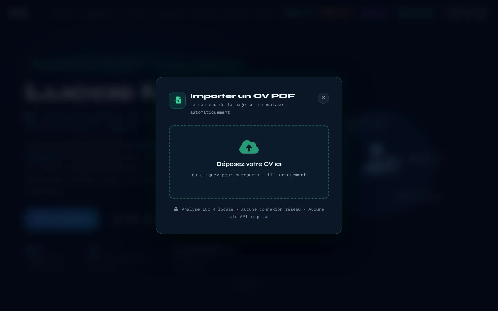
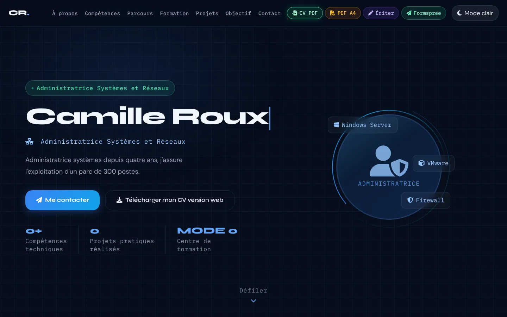
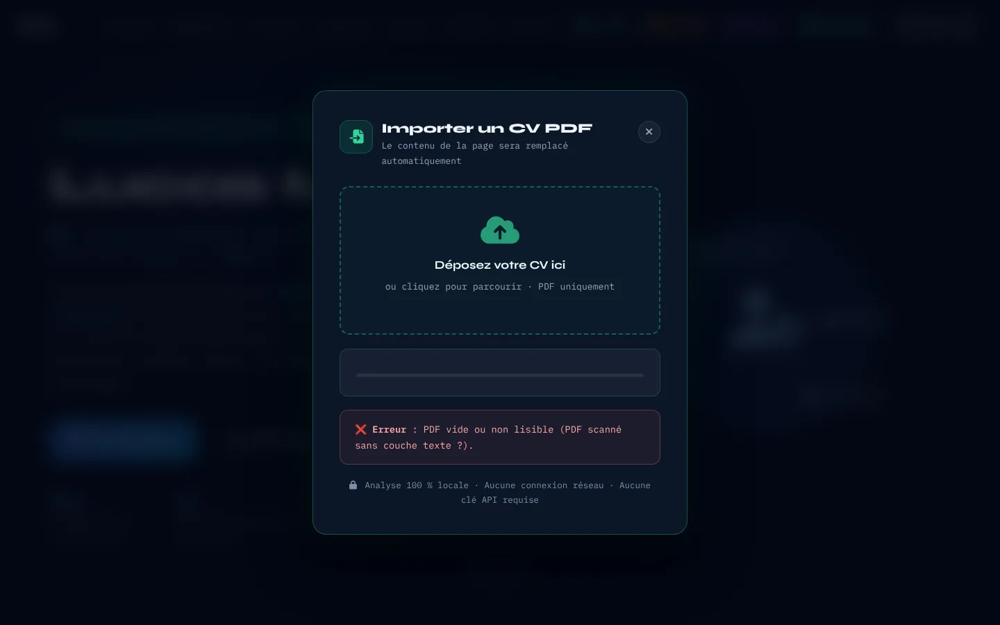

Lire un fichier et un PDF
- Documentation
- PDF.js — site officiel (Mozilla) · MDN — FileReader · MDN — FileReader.readAsArrayBuffer() · MDN — Uint8Array · MDN — L'API Web Workers
- Lignes concernées
- 3418 à 3420, 3503 à 3543.
Série « Portfolio TSSR » · 20 épisodes

Objectif de l'épisode
Et si le portfolio lisait le CV à votre place ?
Le bouton « CV PDF », resté inactif à l'épisode 15, est enfin branché :
on dépose un PDF dans la fenêtre, et le nom, le métier, les coordonnées, les compétences,
les expériences, les langues et les qualités viennent remplir la page.
Sans serveur, sans clé API, sans intelligence artificielle : la bibliothèque PDF.js lit le fichier
dans le navigateur, et des expressions régulières reconnaissent chaque information.
Vous verrez comment on reconstruit les lignes d'un PDF à partir de la seule position
de chaque mot, et vous découvrirez aussi les limites d'une analyse « à la main ».
Partie 2
À la fin de cet épisode, vous saurez suivre les différentes étapes d’un traitement,
du fichier déposé jusqu’à la mise à jour de la page, et comprendre les expressions régulières utilisées.
then, catch, throw).[…], quantificateurs {2,6}, groupes ( … ) et (?: … ), et ancres ^, $ et \b.switch, case et break.innerHTML lorsqu’on l’utilise avec du contenu provenant de l’extérieur.Retrouvez les termes des épisodes précédents dans les listes des épisodes 1 à 15.
then indique quoi faire si tout se passe bien, et catch quoi faire en cas d’erreur.Partie 3
Cochez chaque case quand l'étape est faite.
Les cases cochées sont mémorisées sur votre ordinateur.
Le code se trouve dans index.html. Le dossier ressources/ contient le CV de démonstration CV-Lucas-Moreau.pdf. Les fichiers config.js et le dossier images/ restent inchangés.
Partie 4 · les changements depuis l'épisode 15
L'épisode 16 ajoute un seul bloc : un script de 733 lignes. Aucune ligne existante n'est modifiée ni supprimée. Les numéros indiqués correspondent à votre fichier de l'épisode 15, qui contient 3416 lignes.
</script> du correctif Lighthouse (ligne 3413), le dernier script de l'épisode 15.<script> à </script>) : juste après le </script> de la ligne 3413, avant la ligne vide (3414) qui précède </body>.</body> et </html>.Résultat : le fichier passe de 3416 à 4149 lignes. Les numéros cités dans le reste de cette page sont ceux du nouveau fichier.
| Lignes | Étape | Fonctions |
|---|---|---|
| 3414 à 3430 | Préparation | Worker PDF.js, éléments de la fenêtre |
| 3432 à 3465 | 1. Fenêtre | openModal, closeModal, resetUI, setProgress, showResult |
| 3467 à 3501 | 2. Évènements | connectButtons : bouton, croix, fond, Échap, clic, clavier, glisser-déposer, piège de focus |
| 3503 à 3543 | 3. PDF.js | extractLines : du fichier aux lignes de texte |
| 3545 à 3641 | 4. Sections, contact, nom, titre | isSectionHeader, sectionKey, extractContact, extractName, extractTitle, splitSections |
| 3643 à 3780 | 4. Compétences, expériences, langues… | parseCompetences, parseExpBlock, parseLangues, parseSoftSkills, extractProfil |
| 3782 à 3875 | 4. Données | parseCV : un seul objet, avec des plans B |
| 3877 à 4083 | 5. Page | applyToDom : chaque donnée remplace un texte |
| 4085 à 4103 | 6. Résumé | buildSummary |
| 4105 à 4137 | 7. Orchestration | handleFile : 15 %, 45 %, 85 %, 100 % |
| 4139 à 4146 | 8. Démarrage | Branchement après 80 ms |
Les lignes précédées de + sont à ajouter ; les autres existent déjà.
La fin du fichier
}); (fin du correctif Lighthouse)
</script>
<script>
(function () {
… (module d'import du CV)
})();
</script>
</body>
</html>Deux règles importantes à respecter
<head> : PDF.js y est déjà chargé depuis l'épisode 1 en version 3.11.174. Le worker ajouté à la ligne 3420 doit utiliser exactement la même version.Partie 5
Pour vérifier qu’une source est officielle, appliquez les mêmes règles que dans l’épisode 1.
Les liens marqués s’ouvrent dans un nouvel onglet.
Partie 6
Ajoutez tout le script en une seule fois, puis testez-le avec trois fichiers PDF différents.
Cliquez sur « CV PDF ».
Vous voyez : la fenêtre « Importer un CV PDF » s'ouvre par-dessus la page assombrie, et la zone de dépôt a le focus. Tab passe de la zone à la croix et revient, sans sortir de la fenêtre ; Échap la ferme et rend le focus au bouton.
Déposez un CV simple, en une colonne, avec des titres de section clairs (« PROFIL », « COMPÉTENCES », « EXPÉRIENCES »…).
Vous voyez : la barre avance (15, 45, 85, 100 %), le résumé vert s'affiche, un toast confirme, et la fenêtre se ferme seule après 5 secondes. Le nom, les initiales du logo, le sous-titre, les compétences et la timeline ont changé.
Vous voyez : le nom, le titre, l'e-mail, le téléphone et « Draguignan » sont trouvés, avec 6 qualités. Mais À propos, les qualités et le badge reçoivent des morceaux de texte mal placés : les deux colonnes du PDF ont été mélangées (voir la partie 9).
Déposez un PDF scanné (une simple image), puis un fichier qui n'est pas un PDF.
Vous voyez : « ❌ Erreur : PDF vide ou non lisible (PDF scanné sans couche texte ?). », puis « ⚠ Sélectionnez un fichier PDF valide. », en rouge.
Vous avez terminé quand la page revient à « Lucas Moreau » au rechargement, que votre fichier fait 4149 lignes, identiques au code de référence (bouton « Surligner les ajouts » de la partie 8), sans erreur rouge dans la Console.
Partie 7 · la plus importante
Chaque fiche explique quatre points : Quoi ?, Pourquoi ?, Comment ? et Où ?.
Les numéros correspondent au nouveau fichier, qui contient 4149 lignes.
Les étapes de l’import en quelques mots
handleFile vérifie qu’il s’agit bien d’un PDF (ligne 4106).extractLines d, regroupe toutes les données (ligne 3782) et prévoit des solutions de remplacement si une section est absente.Le fichier reste sur l’ordinateur : seul le code de PDF.js est téléchargé depuis le CDN.
Ces lignes existaient déjà. Seuls les numéros de la ligne vide et des balises </body> et </html> ont changé.
Chaque lien renvoie vers l’épisode où les lignes ont été expliquées.
Les dossiers des épisodes doivent être placés côte à côte.
Chargement du tableau de correspondance…
Les lignes vides servent à séparer les étapes et à rendre le code plus lisible.
Elles ne sont pas expliquées dans une fiche.
Aucune ligne existante n'est modifiée ni supprimée.
<script>Le script du module d'import, 100 % local : le CV ne quitte jamais l'ordinateur.
Un cinquième bloc <script>, placé juste après ceux de l'épisode 15 : quand il s'exécute, la fenêtre d'import (HTML de l'épisode 15) existe déjà.
Tout le code suivant serait affiché comme du texte en bas de la page.
Un script, un rôle : ici, l'import.
(function () {Une fonction auto-exécutée qui isole tout le module d'import.
Une fonction auto-exécutée (IIFE) : la vingtaine de fonctions du module (openModal, parseCV…) restent privées et ne risquent pas d'écraser celles des autres scripts.
Toutes ces fonctions deviendraient globales ; un autre script pourrait les remplacer par erreur.
Un module = une IIFE.
'use strict';Le mode strict.
'use strict' transforme certaines fautes silencieuses en erreurs visibles (par exemple une variable utilisée sans var).
Le code marcherait, mais certaines fautes passeraient inaperçues.
strict = les erreurs se voient.
if (window.pdfjsLib) {Si la bibliothèque PDF.js, chargée dans le <head> à l'épisode 01, est bien présente.
La bibliothèque PDF.js est chargée par une balise <script> du <head> depuis l'épisode 1 ; elle crée l'objet global window.pdfjsLib. Si le CDN ne répond pas (pas d'Internet), l'objet n'existe pas : on évite alors une erreur dès le chargement.
Sans connexion, la ligne suivante provoquerait « Cannot read properties of undefined » et arrêterait tout le module.
Vérifier que l'outil est là avant de s'en servir.
window.pdfjsLib.GlobalWorkerOptions.workerSrc =On lui indique l'adresse de son « worker » :
Décoder un PDF demande beaucoup de calculs. PDF.js les confie à un worker : un second script qui tourne en arrière-plan, pour que la page ne se fige pas. Il faut lui donner l'adresse de ce script. L'instruction continue à la ligne suivante.
Vérifié : PDF.js devinerait l'adresse en cherchant pdf.worker.min.js à côté de pdf.min.js, ce qui marche ici, mais il affiche « Deprecated API usage: No "GlobalWorkerOptions.workerSrc" specified. » : cette devinette est vouée à disparaître dans les versions suivantes. Donner l'adresse est la méthode officielle.
Le worker calcule, la page reste fluide.
'https://cdnjs.cloudflare.com/ajax/libs/pdf.js/3.11.174/pdf.worker.min.js';Un second script qui travaille en arrière-plan pour décoder le PDF sans figer la page. Il doit avoir la même version que pdf.min.js (3.11.174).
Le worker vient du même CDN que pdf.min.js, avec exactement la même version (3.11.174) : PDF.js refuse de travailler avec un worker d'une autre version.
Erreur de syntaxe : l'affectation commencée ligne 3419 serait incomplète.
Conséquence pratique : l'import ne fonctionne qu'avec une connexion Internet, puisque les deux fichiers viennent du CDN. Le CV, lui, n'est jamais envoyé : seul le code de PDF.js est téléchargé.
Même version pour pdf.min.js et pdf.worker.min.js.
}L'accolade fermante termine le bloc ouvert ligne 3418 : PDF.js est-il chargé ?.
Chaque accolade ouverte a sa partenaire fermante, alignée sous la ligne d'ouverture : on voit d'un coup d'œil où le bloc commence et où il finit.
Erreur de syntaxe : le script entier s'arrêterait.
Ce qui s'ouvre se ferme.
var modal = document.getElementById('cv-import-modal');On récupère la fenêtre d'import construite à l'épisode 15.
Ces éléments ont été écrits en HTML à l'épisode 15 (lignes 3012 à 3057) : ils existent déjà, on les récupère une fois pour toutes. Les espaces alignent les signes = pour la lecture.
La variable n'existerait pas : les fonctions qui l'utilisent planteraient (ou, protégées par un if, ne feraient plus rien).
Chercher une fois, réutiliser souvent.
var dropZone = document.getElementById('cv-drop-zone');La zone de dépôt.
Ces éléments ont été écrits en HTML à l'épisode 15 (lignes 3012 à 3057) : ils existent déjà, on les récupère une fois pour toutes. Les espaces alignent les signes = pour la lecture.
La variable n'existerait pas : les fonctions qui l'utilisent planteraient (ou, protégées par un if, ne feraient plus rien).
Chercher une fois, réutiliser souvent.
var fileInput = document.getElementById('cv-file-input');Le sélecteur de fichier caché.
Ces éléments ont été écrits en HTML à l'épisode 15 (lignes 3012 à 3057) : ils existent déjà, on les récupère une fois pour toutes. Les espaces alignent les signes = pour la lecture.
La variable n'existerait pas : les fonctions qui l'utilisent planteraient (ou, protégées par un if, ne feraient plus rien).
Chercher une fois, réutiliser souvent.
var closeBtn = document.getElementById('cv-close');Le bouton de fermeture.
Ces éléments ont été écrits en HTML à l'épisode 15 (lignes 3012 à 3057) : ils existent déjà, on les récupère une fois pour toutes. Les espaces alignent les signes = pour la lecture.
La variable n'existerait pas : les fonctions qui l'utilisent planteraient (ou, protégées par un if, ne feraient plus rien).
Chercher une fois, réutiliser souvent.
var progressWrap = document.getElementById('cv-progress-wrap');Le bloc de progression.
Ces éléments ont été écrits en HTML à l'épisode 15 (lignes 3012 à 3057) : ils existent déjà, on les récupère une fois pour toutes. Les espaces alignent les signes = pour la lecture.
La variable n'existerait pas : les fonctions qui l'utilisent planteraient (ou, protégées par un if, ne feraient plus rien).
Chercher une fois, réutiliser souvent.
var progressBar = document.getElementById('cv-progress-bar');La barre de progression.
Ces éléments ont été écrits en HTML à l'épisode 15 (lignes 3012 à 3057) : ils existent déjà, on les récupère une fois pour toutes. Les espaces alignent les signes = pour la lecture.
La variable n'existerait pas : les fonctions qui l'utilisent planteraient (ou, protégées par un if, ne feraient plus rien).
Chercher une fois, réutiliser souvent.
var progressLbl = document.getElementById('cv-progress-label');Le texte d'étape.
Ces éléments ont été écrits en HTML à l'épisode 15 (lignes 3012 à 3057) : ils existent déjà, on les récupère une fois pour toutes. Les espaces alignent les signes = pour la lecture.
La variable n'existerait pas : les fonctions qui l'utilisent planteraient (ou, protégées par un if, ne feraient plus rien).
Chercher une fois, réutiliser souvent.
var resultBox = document.getElementById('cv-result');Et la zone de résultat.
Ces éléments ont été écrits en HTML à l'épisode 15 (lignes 3012 à 3057) : ils existent déjà, on les récupère une fois pour toutes. Les espaces alignent les signes = pour la lecture.
La variable n'existerait pas : les fonctions qui l'utilisent planteraient (ou, protégées par un if, ne feraient plus rien).
Chercher une fois, réutiliser souvent.
function openModal() {La fonction qui ouvre la fenêtre d'import.
Une fonction dédiée, appelée par le bouton « CV PDF » (ligne 3469). Elle prépare la fenêtre, l'affiche et place le focus au bon endroit.
Le bouton « CV PDF » n'aurait rien à appeler.
Une action = une fonction.
if (!modal) return;Si elle n'existe pas, on s'arrête.
Si la fenêtre n'existe pas (HTML de l'épisode 15 absent), on quitte la fonction au lieu de planter.
modal.classList provoquerait une erreur.
Pas d'élément, pas de travail.
resetUI();On remet l'interface à zéro.
Si on a déjà importé un CV, la fenêtre garde l'ancien résultat. resetUI (ligne 3446) efface tout avant de rouvrir.
L'ancien résultat (ou l'ancienne erreur) s'afficherait à la réouverture.
On ouvre toujours sur une page blanche.
modal.classList.add('cv-open');On l'affiche, grâce à la classe cv-open.
Le CSS de l'épisode 15 masque la fenêtre (display: none) et l'affiche quand elle porte la classe cv-open (ligne 2460) : le script ne fait qu'ajouter la classe.
La fenêtre resterait invisible.
Le script pose la classe, le CSS affiche.
document.body.style.overflow = 'hidden';On bloque le défilement de la page derrière.
overflow: hidden sur le <body> empêche la page de défiler sous la fenêtre (vérifié dans le navigateur).
La molette ferait défiler la page derrière la fenêtre.
Fenêtre ouverte = page immobile.
if (dropZone) setTimeout(function () { dropZone.focus(); }, 60);Et on donne le focus à la zone de dépôt, pour les utilisateurs du clavier.
Un utilisateur du clavier doit pouvoir agir tout de suite : le focus va sur la zone de dépôt (vérifié). Le petit délai de 60 millisecondes laisse à la fenêtre le temps de s'afficher : on ne peut pas donner le focus à un élément encore masqué.
Le focus resterait sur le bouton « CV PDF », derrière la fenêtre.
Une fenêtre s'ouvre, le focus y entre.
}L'accolade fermante termine le bloc ouvert ligne 3432 : ouvrir la fenêtre.
Chaque accolade ouverte a sa partenaire fermante, alignée sous la ligne d'ouverture : on voit d'un coup d'œil où le bloc commence et où il finit.
Erreur de syntaxe : le script entier s'arrêterait.
Ce qui s'ouvre se ferme.
function closeModal() {La fonction qui ferme la fenêtre.
La fonction inverse, appelée par la croix, le fond, Échap et la fermeture automatique.
Plus aucun moyen de fermer la fenêtre.
Ouvrir et fermer vont par deux.
if (!modal) return;Si elle n'existe pas, on s'arrête.
Même précaution qu'à la ligne 3433.
Erreur si la fenêtre n'existe pas.
Pas d'élément, pas de travail.
modal.classList.remove('cv-open');On la masque.
On retire la classe : le CSS la masque à nouveau.
La fenêtre resterait affichée.
Le script retire la classe, le CSS masque.
document.body.style.overflow = '';On rend le défilement à la page.
Une chaîne vide supprime le style en ligne posé ligne 3436 : la page retrouve son comportement normal.
La page resterait bloquée après la fermeture.
Ce qu'on bloque, on le débloque.
var b = document.getElementById('ed-cv-import');On récupère le bouton « CV PDF ».
Le focus doit revenir là où il était avant l'ouverture : sur le bouton qui a ouvert la fenêtre.
Erreur à la ligne suivante.
Chercher avant d'agir.
if (b) b.focus();Et on lui rend le focus.
Un utilisateur du clavier reprend exactement où il en était (vérifié : après Échap, le focus est sur « CV PDF »).
Le focus serait perdu en haut de la page : il faudrait tout reparcourir avec Tab.
Le focus revient d'où il vient.
}L'accolade fermante termine le bloc ouvert ligne 3439 : fermer la fenêtre.
Chaque accolade ouverte a sa partenaire fermante, alignée sous la ligne d'ouverture : on voit d'un coup d'œil où le bloc commence et où il finit.
Erreur de syntaxe : le script entier s'arrêterait.
Ce qui s'ouvre se ferme.
function resetUI() {La fonction qui remet l'interface à zéro :
Une fonction qui efface tout ce qu'un import précédent a laissé : progression, résultat, fichier choisi.
Les lignes 3434 et 4109 n'auraient rien à appeler.
Un bouton « reset » dans le code.
if (progressWrap) progressWrap.classList.remove('cv-processing');Le bloc de progression est masqué.
Le CSS n'affiche le bloc de progression qu'avec la classe cv-processing (ligne 2571).
L'ancienne barre resterait visible.
Pas de travail en cours, pas de barre.
if (progressBar) progressBar.style.width = '0%';La barre revient à 0 %.
La barre repart de zéro pour le prochain fichier.
La barre partirait de l'ancienne valeur.
Repartir de zéro.
if (progressLbl) progressLbl.textContent = '';Le texte d'étape est vidé.
Plus d'ancien message « Lecture du PDF… ».
L'ancien texte resterait.
Effacer l'ancien message.
if (resultBox) { resultBox.className = 'cv-result'; resultBox.innerHTML = ''; }La zone de résultat est vidée et masquée.
className = 'cv-result' retire show et cv-error : la zone redevient masquée et neutre ; innerHTML = '' efface son contenu.
L'ancien résultat resterait affiché.
resultBox.className = 'cv-result'resultBox.innerHTML = ''className remplace toutes les classes.
if (fileInput) fileInput.value = '';Et le sélecteur de fichier est vidé, pour pouvoir recharger le même fichier.
Un <input type="file"> ne déclenche change que si le fichier choisi change. En le vidant, on peut réimporter le même CV deux fois de suite.
Choisir deux fois le même fichier ne ferait rien la seconde fois.
Vider pour pouvoir recommencer.
}L'accolade fermante termine le bloc ouvert ligne 3446 : remettre l'interface à zéro.
Chaque accolade ouverte a sa partenaire fermante, alignée sous la ligne d'ouverture : on voit d'un coup d'œil où le bloc commence et où il finit.
Erreur de syntaxe : le script entier s'arrêterait.
Ce qui s'ouvre se ferme.
function setProgress(pct, label) {La fonction qui met à jour la progression : un pourcentage et un texte.
Une seule fonction pour la barre et son texte : handleFile l'appelle à chaque étape (15, 45, 85 puis 100 %).
handleFile n'aurait rien à appeler.
Un pourcentage et un mot.
if (progressWrap) progressWrap.classList.add('cv-processing');On affiche le bloc de progression.
Dès qu'une étape commence, le bloc devient visible.
La barre avancerait sans être visible.
Montrer que ça travaille.
if (progressBar) progressBar.style.width = pct + '%';On règle la largeur de la barre.
Le pourcentage devient une largeur CSS, comme pour la barre de lecture (épisode 13).
La barre ne bougerait pas.
+ '%' = une largeur CSS.
if (progressLbl) progressLbl.textContent = label || '';Et on écrit le texte d'étape.
label || '' : si aucun texte n'est donné, on écrit une chaîne vide plutôt que « undefined ». Le bloc a aria-live="polite" (épisode 15) : le texte est annoncé aux lecteurs d'écran.
Le visiteur ne saurait pas à quelle étape on en est.
|| = sinon, ceci.
if (pct >= 100) setTimeout(function () {À 100 %, on attend 0,8 seconde.
On laisse voir la barre pleine 0,8 seconde avant de la masquer : le visiteur comprend que c'est fini.
La barre pleine resterait affichée.
Montrer la fin, puis ranger.
if (progressWrap) progressWrap.classList.remove('cv-processing');Puis on masque le bloc de progression.
La progression disparaît, le résultat prend le relais.
Le bloc resterait visible.
Ranger quand c'est fini.
}, 800);Fin du minuteur.
L'accolade ferme la fonction, 800 donne le délai en millisecondes, la parenthèse ferme l'appel à setTimeout.
Erreur de syntaxe : le module entier s'arrêterait.
setTimeout(fonction, délai).
}L'accolade fermante termine le bloc ouvert ligne 3453 : mettre à jour la progression.
Chaque accolade ouverte a sa partenaire fermante, alignée sous la ligne d'ouverture : on voit d'un coup d'œil où le bloc commence et où il finit.
Erreur de syntaxe : le script entier s'arrêterait.
Ce qui s'ouvre se ferme.
function showResult(html, isError) {La fonction qui affiche le résultat, en vert ou en rouge si c'est une erreur.
Une fonction pour les deux cas, réussite ou erreur : le second paramètre choisit la couleur.
Ni le succès ni les erreurs ne s'afficheraient.
Un message, une couleur.
if (!resultBox) return;Si la zone n'existe pas, on s'arrête.
Sans zone de résultat, rien à afficher.
Erreur si l'élément manque.
Pas d'élément, pas de travail.
resultBox.innerHTML = html;On écrit le message.
Les messages contiennent du HTML (<strong>, <br>), d'où innerHTML. Attention : ce HTML contient aussi des textes lus dans le PDF (nom, titre…), ce qui pose un problème de sécurité (voir la partie 9).
La zone resterait vide.
innerHTML interprète les balises.
resultBox.className = 'cv-result show' + (isError ? ' cv-error' : '');On affiche la zone, avec la classe d'erreur si besoin.
L'opérateur ternaire ajoute cv-error seulement si isError est vrai ; show rend la zone visible (CSS lignes 2587 à 2606).
Le message serait écrit mais invisible.
'cv-result show'(isError ? ' cv-error' : '')condition ? oui : non.
}L'accolade fermante termine le bloc ouvert ligne 3461 : afficher le résultat.
Chaque accolade ouverte a sa partenaire fermante, alignée sous la ligne d'ouverture : on voit d'un coup d'œil où le bloc commence et où il finit.
Erreur de syntaxe : le script entier s'arrêterait.
Ce qui s'ouvre se ferme.
function connectButtons() {La fonction qui branche tous les événements.
Toutes les connexions entre le HTML et le script sont regroupées ici. La fonction est lancée au démarrage (lignes 4139 à 4143).
Rien ne réagirait : ni le bouton, ni la croix, ni la zone de dépôt.
Un seul endroit pour tous les branchements.
var ib = document.getElementById('ed-cv-import');On récupère le bouton « CV PDF » ajouté dans la navbar à l'épisode 15.
Il est créé par le script de l'épisode 15 (ligne 3074) ; on le cherche par son identifiant.
Erreur à la ligne suivante… protégée par le if, donc simplement aucun branchement.
Chercher avant de brancher.
if (ib) ib.addEventListener('click', openModal);Et un clic dessus ouvre enfin la fenêtre d'import.
C'est la ligne qui « branche » le bouton resté inactif à l'épisode 15 : un clic appelle openModal.
Le bouton « CV PDF » ne ferait toujours rien.
Sans () : on confie la fonction, on ne l'appelle pas.
if (closeBtn) closeBtn.addEventListener('click', closeModal);La croix ferme la fenêtre.
Le bouton de fermeture (ligne 3030) appelle closeModal.
La croix ne ferait rien.
Une croix ferme.
if (modal) modal.addEventListener('click', function (e) {Un clic sur le fond de la fenêtre.
L'écouteur est posé sur toute la fenêtre, fond compris.
Cliquer à côté de la carte ne fermerait plus la fenêtre.
Écouter le parent.
if (e.target === modal) closeModal();Mais pas sur la carte, la ferme aussi.
e.target est l'élément réellement cliqué. Il n'est égal à modal que si l'on clique sur le fond, pas sur la carte (vérifié).
Un clic n'importe où, même dans la carte, fermerait la fenêtre.
target = là où l'on a vraiment cliqué.
});Elle termine le bloc ouvert ligne 3471 : un clic sur le fond. L'accolade ferme la fonction, la parenthèse ferme l'appel (forEach, addEventListener…), le point-virgule termine l'instruction.
Une fonction passée en argument se referme par }); : chaque signe ferme ce qui a été ouvert sur la ligne d'ouverture, dans l'ordre inverse.
Erreur de syntaxe : le script entier s'arrêterait.
Ce qui s'ouvre se ferme.
document.addEventListener('keydown', function (e) {On écoute le clavier.
Échap doit fermer la fenêtre où que soit le focus.
Échap ne fermerait plus la fenêtre.
keydown = une touche enfoncée.
if (e.key === 'Escape' && modal && modal.classList.contains('cv-open')) closeModal();Échap ferme la fenêtre si elle est ouverte.
Trois conditions : la touche est Échap, la fenêtre existe, et elle est ouverte. Sans la dernière, Échap appellerait closeModal à chaque fois, et volerait le focus vers « CV PDF ».
Il faudrait la souris pour fermer la fenêtre.
Le mode édition (épisode 15, ligne 3132) écoute aussi Échap : si la fenêtre est ouverte en mode édition, une seule pression ferme les deux.
Échap = sortir.
});Elle termine le bloc ouvert ligne 3474 : écouter le clavier. L'accolade ferme la fonction, la parenthèse ferme l'appel (forEach, addEventListener…), le point-virgule termine l'instruction.
Une fonction passée en argument se referme par }); : chaque signe ferme ce qui a été ouvert sur la ligne d'ouverture, dans l'ordre inverse.
Erreur de syntaxe : le script entier s'arrêterait.
Ce qui s'ouvre se ferme.
if (dropZone) {Si la zone de dépôt existe :
Garde-fou avant de poser quatre écouteurs.
Erreur si la zone manque.
Vérifier avant d'agir.
dropZone.addEventListener('click', function () { if (fileInput) fileInput.click(); });Un clic dessus ouvre le sélecteur de fichier caché ;
fileInput.click() simule un clic sur le sélecteur caché (épisode 15, ligne 3017) : la fenêtre « Ouvrir » du système apparaît.
Cliquer dans la zone ne ferait rien.
Le joli bouton clique sur le vrai.
dropZone.addEventListener('keydown', function (e) {Au clavier.
La zone a role="button" : elle doit réagir comme un bouton, avec Entrée et Espace.
Un utilisateur du clavier ne pourrait pas choisir de fichier.
role="button" promet Entrée et Espace.
if (e.key === 'Enter' || e.key === ' ') { e.preventDefault(); if (fileInput) fileInput.click(); }Entrée ou Espace font la même chose ; preventDefault empêche la page de défiler avec la touche Espace.
e.key === ' ' est la barre d'espace. preventDefault empêche la page de défiler avec Espace (son action par défaut). Vérifié : Entrée ouvre bien la fenêtre de choix.
La zone ne réagirait pas au clavier.
e.key === 'Enter' || e.key === ' 'e.preventDefault()fileInput.click()Un faux bouton doit tout faire comme un vrai.
});Elle termine le bloc ouvert ligne 3479 : au clavier. L'accolade ferme la fonction, la parenthèse ferme l'appel (forEach, addEventListener…), le point-virgule termine l'instruction.
Une fonction passée en argument se referme par }); : chaque signe ferme ce qui a été ouvert sur la ligne d'ouverture, dans l'ordre inverse.
Erreur de syntaxe : le script entier s'arrêterait.
Ce qui s'ouvre se ferme.
dropZone.addEventListener('dragover', function (e) { e.preventDefault(); dropZone.classList.add('drag-over'); });Quand on survole la zone avec un fichier : on autorise le dépôt (preventDefault) et on la colore ;
Par défaut, le navigateur refuse qu'on dépose un fichier sur un élément. preventDefault dans dragover autorise le dépôt ; la classe drag-over colore la zone (ligne 2540).
Le dépôt serait impossible : le navigateur ouvrirait le PDF dans l'onglet.
Pas de preventDefault dans dragover, pas de drop.
dropZone.addEventListener('dragleave', function () { dropZone.classList.remove('drag-over'); });Quand le fichier quitte la zone, on retire la couleur ;
On retire la couleur si le fichier repart sans être déposé.
La zone resterait colorée.
Ce qu'on colore, on le décolore.
dropZone.addEventListener('drop', function (e) {Au moment où on lâche le fichier :
L'évènement drop se déclenche quand on lâche le fichier sur la zone.
Glisser un fichier ne ferait rien (ou ouvrirait le PDF).
drop = on lâche.
e.preventDefault(); dropZone.classList.remove('drag-over');On empêche le navigateur d'ouvrir le PDF lui-même, et on retire la couleur ;
Sans preventDefault, le navigateur ouvrirait le PDF dans l'onglet, et la page serait quittée.
Le portfolio serait remplacé par le PDF.
On garde le fichier pour nous.
var f = e.dataTransfer && e.dataTransfer.files;On récupère la liste des fichiers déposés ;
e.dataTransfer.files contient les fichiers lâchés. Le && évite une erreur si dataTransfer n'existe pas.
On ne pourrait pas lire le fichier déposé.
dataTransfer = ce qu'on a glissé.
if (f && f.length) handleFile(f[0]);Et s'il y en a, on traite le premier.
Si plusieurs fichiers sont lâchés, seul le premier compte.
Le fichier déposé ne serait jamais analysé.
Un CV à la fois.
});Elle termine le bloc ouvert ligne 3484 : le fichier est déposé. L'accolade ferme la fonction, la parenthèse ferme l'appel (forEach, addEventListener…), le point-virgule termine l'instruction.
Une fonction passée en argument se referme par }); : chaque signe ferme ce qui a été ouvert sur la ligne d'ouverture, dans l'ordre inverse.
Erreur de syntaxe : le script entier s'arrêterait.
Ce qui s'ouvre se ferme.
}L'accolade fermante termine le bloc ouvert ligne 3477 : si la zone de dépôt existe.
Chaque accolade ouverte a sa partenaire fermante, alignée sous la ligne d'ouverture : on voit d'un coup d'œil où le bloc commence et où il finit.
Erreur de syntaxe : le script entier s'arrêterait.
Ce qui s'ouvre se ferme.
if (fileInput) fileInput.addEventListener('change', function () {Quand un fichier est choisi dans le sélecteur.
L'évènement change du sélecteur se déclenche quand l'utilisateur valide un fichier dans la fenêtre « Ouvrir ».
Choisir un fichier avec la fenêtre « Ouvrir » ne ferait rien.
change = la valeur a changé.
if (fileInput.files && fileInput.files.length) handleFile(fileInput.files[0]);On le traite.
fileInput.files[0] est le fichier choisi.
Le fichier choisi ne serait pas analysé.
files[0] = le premier fichier.
});Elle termine le bloc ouvert ligne 3490 : un fichier est choisi. L'accolade ferme la fonction, la parenthèse ferme l'appel (forEach, addEventListener…), le point-virgule termine l'instruction.
Une fonction passée en argument se referme par }); : chaque signe ferme ce qui a été ouvert sur la ligne d'ouverture, dans l'ordre inverse.
Erreur de syntaxe : le script entier s'arrêterait.
Ce qui s'ouvre se ferme.
if (modal) modal.addEventListener('keydown', function (e) {Le piège de focus : Tab reste à l'intérieur de la fenêtre, comme dans config.js.
Dans une boîte de dialogue modale, Tab ne doit pas sortir vers la page masquée derrière. On écoute le clavier dans la fenêtre, comme dans la fenêtre Formspree de config.js (épisode 11).
Tab ferait sortir le focus vers les liens invisibles derrière la fenêtre.
Dans une modale, Tab tourne en rond.
if (e.key !== 'Tab') return;Si ce n'est pas Tab, on ne fait rien.
Les autres touches ne nous intéressent pas ici.
Le code suivant s'exécuterait pour chaque touche.
Filtrer tôt.
var foc = modal.querySelectorAll('button:not([disabled]),[tabindex]:not([tabindex="-1"])');On liste les éléments de la fenêtre qui peuvent recevoir le focus.
Le sélecteur garde les boutons actifs et les éléments qui ont un tabindex différent de -1 : ici la croix et la zone de dépôt.
Erreur à la ligne suivante.
button:not([disabled])[tabindex]:not([tabindex="-1"]):not() = sauf.
if (!foc.length) return;S'il n'y en a aucun, on s'arrête.
Une fenêtre sans élément atteignable n'a pas besoin de piège.
foc[0] vaudrait undefined : erreur.
Vérifier avant d'agir.
var first = foc[0], last = foc[foc.length - 1];Le premier et le dernier.
Ce sont les deux bords où le focus doit faire demi-tour.
Les lignes suivantes ne sauraient pas où boucler.
Repérer les bords.
if (e.shiftKey) { if (document.activeElement === first) { e.preventDefault(); last.focus(); } }Avec Maj + Tab sur le premier, on boucle sur le dernier ;
e.shiftKey est vrai si Maj est enfoncée. Sur le premier élément, on empêche la sortie et on saute au dernier.
Maj + Tab sortirait de la fenêtre par le haut.
shiftKey = Maj enfoncée.
else { if (document.activeElement === last) { e.preventDefault(); first.focus(); } }Avec Tab sur le dernier, on boucle sur le premier.
Sur le dernier élément, Tab revient au premier. Vérifié : le focus alterne entre la croix et la zone de dépôt.
Tab sortirait de la fenêtre par le bas.
Le dernier renvoie au premier.
});Elle termine le bloc ouvert ligne 3493 : le piège de focus. L'accolade ferme la fonction, la parenthèse ferme l'appel (forEach, addEventListener…), le point-virgule termine l'instruction.
Une fonction passée en argument se referme par }); : chaque signe ferme ce qui a été ouvert sur la ligne d'ouverture, dans l'ordre inverse.
Erreur de syntaxe : le script entier s'arrêterait.
Ce qui s'ouvre se ferme.
}L'accolade fermante termine le bloc ouvert ligne 3467 : brancher les évènements.
Chaque accolade ouverte a sa partenaire fermante, alignée sous la ligne d'ouverture : on voit d'un coup d'œil où le bloc commence et où il finit.
Erreur de syntaxe : le script entier s'arrêterait.
Ce qui s'ouvre se ferme.
function extractLines(file) {ÉTAPE 1 – PDF.js : la fonction qui transforme un fichier PDF en texte, ligne par ligne.
Un PDF ne contient pas de « lignes » : seulement des morceaux de texte posés à des coordonnées. Cette fonction les regroupe pour reconstruire le texte du CV, de haut en bas.
Le module n'aurait aucun texte à analyser.
Un PDF = des mots posés sur une feuille.
return new Promise(function (resolve, reject) {Elle renvoie une promesse, car la lecture prend du temps.
Lire un fichier et décoder un PDF prend du temps. La fonction renvoie une promesse : « je te donnerai le texte plus tard ». resolve donnera le résultat, reject l'erreur.
La fonction ne pourrait pas rendre un résultat qui n'existe pas encore.
Une promesse = un résultat à venir.
if (!window.pdfjsLib) { reject(new Error('PDF.js non disponible.')); return; }Si PDF.js n'est pas chargé, on rejette la promesse avec un message clair.
Si la bibliothèque n'est pas chargée, on rejette la promesse avec un message compréhensible, qui sera affiché par le catch de handleFile.
L'erreur serait technique et obscure (« Cannot read properties of undefined »).
Échouer avec un message clair.
var reader = new FileReader();Un FileReader lit le fichier sur l'ordinateur de l'utilisateur, sans rien envoyer sur Internet.
FileReader lit un fichier choisi par l'utilisateur, directement sur son ordinateur : rien n'est envoyé.
Erreur aux lignes suivantes : impossible de lire le fichier.
FileReader = lire sans envoyer.
reader.onerror = reject;En cas d'erreur de lecture, on rejette la promesse.
Si le fichier ne peut pas être lu, on rejette la promesse.
Une erreur de lecture laisserait la promesse en attente pour toujours : la barre resterait bloquée à 15 %.
Toujours prévoir l'échec.
reader.onload = function (e) {Quand la lecture est terminée :
onload est appelé une fois le fichier entièrement lu.
On ne saurait jamais quand le fichier est prêt.
onload = c'est prêt.
window.pdfjsLib.getDocument({ data: new Uint8Array(e.target.result) }).promiseOn donne les octets du fichier à PDF.js, qui ouvre le document.
e.target.result contient les octets du fichier. new Uint8Array(…) les présente comme une liste de nombres de 0 à 255, le format attendu par getDocument. .promise est la promesse qui donnera le document ouvert.
Le PDF ne serait jamais ouvert.
e.target.resultnew Uint8Array( … )pdfjsLib.getDocument({ data: … }).promiseOctets → PDF.js → document.
.then(function (pdf) {Une fois le PDF ouvert :
.then enchaîne la suite quand la promesse est tenue : on reçoit l'objet pdf.
On ne pourrait rien faire du document.
then = et ensuite.
var pages = [];On prépare la liste des numéros de pages.
On va traiter les pages une par une : on prépare leurs numéros.
Erreur à la ligne suivante.
Préparer avant de boucler.
for (var i = 1; i <= pdf.numPages; i++) pages.push(i);De 1 jusqu'au nombre de pages du document.
pdf.numPages donne le nombre de pages. Dans PDF.js, les pages sont numérotées à partir de 1, pas de 0.
La liste resterait vide : aucun texte.
Les pages commencent à 1.
return pages.reduce(function (chain, num) {On traite les pages l'une après l'autre, dans l'ordre, en enchaînant les promesses avec reduce :
Chaque page se lit avec une promesse. reduce les enchaîne : la page 2 ne commence qu'après la page 1. Le texte reste ainsi dans l'ordre du CV.
Erreur : aucune page ne serait lue.
reduce = une chaîne, maillon après maillon.
return chain.then(function (acc) {Pour chaque page, on attend la fin de la précédente.
chain est la promesse des pages déjà lues ; acc (accumulateur) est la liste de leurs textes.
Les pages seraient lues dans le désordre.
acc = ce qu'on a déjà ramassé.
return pdf.getPage(num).then(function (page) {On charge la page.
getPage(num) renvoie une promesse de la page demandée.
Le texte de la page ne serait pas lu.
Une page à la fois.
return page.getTextContent({ normalizeWhitespace: true }).then(function (tc) {Puis on extrait ses morceaux de texte, en normalisant les espaces.
getTextContent renvoie tous les morceaux de texte de la page, avec leurs positions. normalizeWhitespace remplace les espaces bizarres par des espaces normaux.
Aucun texte ne serait extrait.
getTextContent = les mots et leurs positions.
var lineMap = {};Un objet qui va regrouper les morceaux par ligne.
Un objet dont chaque clé sera une hauteur sur la page, et chaque valeur la liste des morceaux à cette hauteur.
Erreur aux lignes suivantes.
Une clé = une ligne.
tc.items.forEach(function (item) {Pour chaque morceau de texte de la page :
tc.items est la liste des morceaux de texte de la page.
Rien ne serait rangé.
forEach = un par un.
if (!item.str || !item.str.trim()) return;On ignore les morceaux vides ;
Un PDF contient souvent des morceaux qui ne sont que des espaces.
Des lignes vides parasites apparaîtraient.
Rien à lire, on passe.
var y = Math.round(item.transform[5] / 2) * 2;On lit sa position verticale (transform[5]) et on l'arrondit à 2 pixels près : deux morceaux à la même hauteur appartiennent à la même ligne ;
transform[5] est la position verticale du morceau. Deux mots d'une même ligne n'ont pas toujours exactement la même hauteur : en arrondissant à 2 points près, on les range ensemble.
Erreur : chaque morceau serait sa propre ligne, ou aucune ligne ne serait créée.
Limite vérifiée : sur un CV en deux colonnes (comme celui de Lucas), les mots des deux colonnes situés à la même hauteur se retrouvent sur la même ligne (« COMPÉTENCES PROFIL »). Les titres de section ne sont alors plus reconnus.
item.transform[5]/ 2, Math.round, * 2Même hauteur = même ligne.
if (!lineMap[y]) lineMap[y] = [];Si cette ligne n'existe pas encore, on la crée ;
La première fois qu'on rencontre cette hauteur, on crée une liste vide.
push sur undefined : erreur.
Créer avant de remplir.
lineMap[y].push({ x: item.transform[4], str: item.str, h: item.height || 0 });Et on y range le morceau, avec sa position horizontale, son texte et sa hauteur.
On garde la position horizontale (x, pour trier de gauche à droite), le texte et la hauteur des lettres.
Le morceau serait perdu.
x pour l'ordre, str pour le texte.
});Elle termine le bloc ouvert ligne 3518 : pour chaque morceau. L'accolade ferme la fonction, la parenthèse ferme l'appel (forEach, addEventListener…), le point-virgule termine l'instruction.
Une fonction passée en argument se referme par }); : chaque signe ferme ce qui a été ouvert sur la ligne d'ouverture, dans l'ordre inverse.
Erreur de syntaxe : le script entier s'arrêterait.
Ce qui s'ouvre se ferme.
var sortedY = Object.keys(lineMap).map(Number).sort(function (a, b) { return b - a; });On trie les lignes de haut en bas : dans un PDF, l'axe Y monte, donc on trie par Y décroissant.
Object.keys donne les hauteurs (en texte) ; map(Number) les convertit en nombres ; le tri b - a les range du plus grand au plus petit. Dans un PDF, l'axe vertical part du bas de la page : le plus grand Y est donc en haut.
Les lignes sortiraient dans le désordre.
Object.keys(lineMap).map(Number).sort(function (a, b) { return b - a; })En PDF, Y monte : on trie à l'envers.
var pageLines = sortedY.map(function (y) {Pour chaque ligne :
On transforme chaque hauteur en une ligne de texte.
Le texte ne serait pas assemblé.
map transforme chaque élément.
return lineMap[y]On prend ses morceaux.
La liste des morceaux rangés à cette hauteur. La suite de l'instruction est enchaînée sur les lignes suivantes.
Erreur de syntaxe.
Une méthode par ligne, pour lire.
.sort(function (a, b) { return a.x - b.x; })On les trie de gauche à droite.
Tri par position horizontale croissante.
Les mots d'une ligne seraient mélangés.
x croissant = gauche à droite.
.map(function (t) { return t.str; })On garde leur texte.
On ne garde que le texte de chaque morceau.
On assemblerait des objets : « [object Object] ».
map = transformer.
.join(' ').replace(/\s{2,}/g, ' ').trim();Et on les assemble avec des espaces, sans doubles espaces.
Les morceaux sont collés avec un espace ; /\s{2,}/g remplace les doubles espaces par un seul.
La ligne resterait une liste de morceaux.
.join(' ').replace(/\s{2,}/g, ' ').trim()join colle, replace nettoie.
}).filter(Boolean);On retire les lignes vides.
filter(Boolean) garde les lignes non vides (une chaîne vide vaut « faux »).
Des lignes vides resteraient.
filter(Boolean) = sans les vides.
acc.push(pageLines.join('\n'));On ajoute le texte de la page à l'accumulateur.
Les lignes de la page, séparées par des retours à la ligne, rejoignent l'accumulateur.
Le texte de la page serait perdu.
Une page de plus dans le sac.
return acc;Et on le renvoie pour la page suivante.
Ce que renvoie un then devient la valeur de la promesse suivante : la page suivante reçoit la liste complétée.
La page suivante recevrait undefined : erreur.
Ce que then renvoie passe au suivant.
});Elle termine le bloc ouvert ligne 3516 : extraire les morceaux de texte. L'accolade ferme la fonction, la parenthèse ferme l'appel (forEach, addEventListener…), le point-virgule termine l'instruction.
Une fonction passée en argument se referme par }); : chaque signe ferme ce qui a été ouvert sur la ligne d'ouverture, dans l'ordre inverse.
Erreur de syntaxe : le script entier s'arrêterait.
Ce qui s'ouvre se ferme.
});Elle termine le bloc ouvert ligne 3515 : charger la page. L'accolade ferme la fonction, la parenthèse ferme l'appel (forEach, addEventListener…), le point-virgule termine l'instruction.
Une fonction passée en argument se referme par }); : chaque signe ferme ce qui a été ouvert sur la ligne d'ouverture, dans l'ordre inverse.
Erreur de syntaxe : le script entier s'arrêterait.
Ce qui s'ouvre se ferme.
});Elle termine le bloc ouvert ligne 3514 : attendre la page précédente. L'accolade ferme la fonction, la parenthèse ferme l'appel (forEach, addEventListener…), le point-virgule termine l'instruction.
Une fonction passée en argument se referme par }); : chaque signe ferme ce qui a été ouvert sur la ligne d'ouverture, dans l'ordre inverse.
Erreur de syntaxe : le script entier s'arrêterait.
Ce qui s'ouvre se ferme.
}, Promise.resolve([]));La chaîne démarre avec une promesse résolue sur une liste vide.
reduce a besoin d'une valeur de départ : une promesse déjà tenue, avec une liste vide.
Le premier chain.then échouerait.
La chaîne part d'une promesse vide.
})L'accolade fermante termine le bloc ouvert ligne 3510 : le document est ouvert.
Chaque accolade ouverte a sa partenaire fermante, alignée sous la ligne d'ouverture : on voit d'un coup d'œil où le bloc commence et où il finit.
Erreur de syntaxe : le script entier s'arrêterait.
Ce qui s'ouvre se ferme.
.then(function (pages) { resolve(pages.join('\n')); })Quand toutes les pages sont lues, on résout la promesse avec tout le texte, une ligne par ligne.
Les textes des pages sont assemblés, et la promesse de la ligne 3504 est enfin tenue avec resolve.
handleFile attendrait le texte pour toujours.
resolve = voici le résultat promis.
.catch(reject);En cas d'erreur, on rejette la promesse.
Un PDF protégé, abîmé ou qui n'en est pas un : l'erreur remonte jusqu'à handleFile.
L'erreur serait perdue : la barre resterait bloquée.
catch = si ça casse.
};Elle termine le bloc ouvert ligne 3508 : quand la lecture est terminée. Le point-virgule termine l'instruction d'affectation (… = { … };).
Une affectation se termine par un point-virgule, même quand sa valeur s'étend sur plusieurs lignes.
Erreur de syntaxe : le script entier s'arrêterait.
Ce qui s'ouvre se ferme.
reader.readAsArrayBuffer(file);On lance la lecture du fichier sous forme d'octets.
readAsArrayBuffer lit le fichier sous forme d'octets, le format qu'attend PDF.js. C'est cette ligne qui déclenche, plus tard, onload.
Rien ne serait jamais lu.
On prépare les écouteurs, puis on lance.
});Elle termine le bloc ouvert ligne 3504 : renvoyer une promesse. L'accolade ferme la fonction, la parenthèse ferme l'appel (forEach, addEventListener…), le point-virgule termine l'instruction.
Une fonction passée en argument se referme par }); : chaque signe ferme ce qui a été ouvert sur la ligne d'ouverture, dans l'ordre inverse.
Erreur de syntaxe : le script entier s'arrêterait.
Ce qui s'ouvre se ferme.
}L'accolade fermante termine le bloc ouvert ligne 3503 : lire le PDF, ligne par ligne.
Chaque accolade ouverte a sa partenaire fermante, alignée sous la ligne d'ouverture : on voit d'un coup d'œil où le bloc commence et où il finit.
Erreur de syntaxe : le script entier s'arrêterait.
Ce qui s'ouvre se ferme.
var SECTION_RE = /^[\s\-–—•*#]*(?:#{1,3}\s*)?(PROFIL(?: PROFESSIONNEL)?|PR[EÉ]SENTATION|[AÀ] PROPOS|OBJECTIF(S)?|R[EÉ]SUM[EÉ]|ABOUT|SUMMARY|COMP[EÉ]TENCES?(?: TECHNIQUES?| CL[EÉ]S)?|SKILLS?|SAVOIRS?(?: FAIRE)?|EXPERTISE|EXP[EÉ]RIENCES?(?: PROFESSIONNELLES?)?|EMPLOIS?(?: DU TEMPS)?|PARCOURS(?: PROFESSIONNEL)?|POSTES? OCCUP[EÉ]S?|WORK(?: EXPERIENCE)?|FORMATION(S)?|[EÉ]TUDES?|DIPLˆOMES?|DIPL[OÔ]MES?|CERTIFICATIONS?|QUALIFICATIONS?|LANGUES?|LANGUAGES?|LOISIRS?|HOBBIES?|INT[EÉ]R[EÊ]TS?(?: PERSONNELS?)?|ACTIVIT[EÉ]S?(?: EXTRA[-\s]SCOLAIRES?)?|QUALIT[EÉ]S?|SOFT SKILLS?|COMP[EÉ]TENCES? TRANSVERSALES?|PROJETS?(?: PERSONNELS?)?|R[EÉF][EÉ]RENCES?|CONTACT|COORDONN[EÉ]ES?|INFORMATIONS? PERSONNELLES?)[\s\-–—:]*$/i;ÉTAPE 2 – Détection des sections : une expression régulière qui reconnaît les titres habituels d'un CV français ou anglais (Profil, Compétences, Expériences, Formation, Langues, Loisirs, Contact…), avec ou sans accents, puces ou deux-points.
Une seule expression régulière décrit tous les titres habituels d'un CV. Elle est lue ainsi : début de ligne (^), éventuels espaces, tirets ou puces, puis l'un des titres de la liste (séparés par |, « ou »), puis éventuels espaces, tirets ou deux-points, et fin de ligne ($). [EÉ] accepte le mot avec ou sans accent, (?: …)? rend une suite facultative (« COMPÉTENCES » ou « COMPÉTENCES TECHNIQUES »). Le drapeau i ignore majuscules et minuscules.
Aucun titre ne serait reconnu : tout le CV serait une seule section « HEADER », et seuls le nom, le titre et les coordonnées seraient extraits.
Une petite faute de frappe s'est glissée dans la liste : DIPLˆOMES (avec un accent circonflexe isolé). Elle est sans effet, car DIPL[OÔ]MES juste après reconnaît bien « DIPLÔMES ».
^[\s\-–—•*#]*(PROFIL(?: PROFESSIONNEL)?|…)[\s\-–—:]*$/i^ … $ : toute la ligne doit être un titre.
function isSectionHeader(line) {La fonction qui dit si une ligne est un titre de section.
Une fonction courte et réutilisée partout (huit appels) : elle répond vrai ou faux.
Toutes les fonctions qui l'appellent planteraient.
Une question = une fonction qui répond oui ou non.
return SECTION_RE.test(line.trim()) && line.trim().length < 70;Elle doit correspondre à l'expression régulière et faire moins de 70 caractères.
test vérifie l'expression ; la limite de 70 caractères évite de prendre pour un titre une phrase entière qui commencerait par « Contact ».
Les titres ne seraient plus détectés.
Un titre est court.
}L'accolade fermante termine le bloc ouvert ligne 3547 : est-ce un titre ?.
Chaque accolade ouverte a sa partenaire fermante, alignée sous la ligne d'ouverture : on voit d'un coup d'œil où le bloc commence et où il finit.
Erreur de syntaxe : le script entier s'arrêterait.
Ce qui s'ouvre se ferme.
function sectionKey(line) {La fonction qui ramène chaque titre de section à une clé unique.
« Compétences techniques », « Skills » et « Savoir-faire » désignent la même chose. Cette fonction les ramène à une seule clé (COMPETENCES), plus simple à traiter dans le switch de parseCV.
Le switch de la ligne 3801 ne reconnaîtrait aucune section.
Plusieurs noms, une seule clé.
var t = line.trim().toUpperCase()On passe la ligne en majuscules.
On compare tout en majuscules : « Profil » et « PROFIL » deviennent identiques. L'instruction continue ligne suivante.
Erreur de syntaxe.
Tout en majuscules pour comparer.
.replace(/[^A-ZÀÂÄÉÈÊËÎÏÔÙÛÜÇ\s]/g, '').trim();Et on ne garde que les lettres et les espaces.
La classe [^A-ZÀ…\s] (le ^ entre crochets veut dire « sauf ») supprime tout ce qui n'est ni une lettre ni un espace : puces, deux-points, dièses.
Erreur de syntaxe.
[^…] = tout sauf.
if (/PROFIL|PRÉSENT|PROPOS|OBJECTIF|RÉSUMÉ|RESUME|ABOUT|SUMMARY/.test(t)) return 'PROFIL';Profil, Présentation, À propos, Objectif, Résumé… deviennent PROFIL.
Chaque ligne teste une famille de mots avec une petite expression régulière (| veut dire « ou ») et renvoie la clé correspondante. L'ordre compte : le premier test réussi l'emporte, et return arrête la fonction.
Cette famille de sections ne serait plus reconnue : son contenu serait ignoré.
Le premier qui répond gagne.
if (/COMPÉTENCE|COMPETENCE|SKILL|SAVOIR|EXPERTISE/.test(t)) return 'COMPETENCES';Compétences, Skills, Savoir-faire… deviennent COMPETENCES.
Chaque ligne teste une famille de mots avec une petite expression régulière (| veut dire « ou ») et renvoie la clé correspondante. L'ordre compte : le premier test réussi l'emporte, et return arrête la fonction.
Cette famille de sections ne serait plus reconnue : son contenu serait ignoré.
Le premier qui répond gagne.
if (/EXPÉRIENCE|EXPERIENCE|EMPLOI|PARCOURS|POSTE|WORK/.test(t)) return 'EXPERIENCES';Expériences, Emplois, Parcours… deviennent EXPERIENCES.
Chaque ligne teste une famille de mots avec une petite expression régulière (| veut dire « ou ») et renvoie la clé correspondante. L'ordre compte : le premier test réussi l'emporte, et return arrête la fonction.
Cette famille de sections ne serait plus reconnue : son contenu serait ignoré.
Le premier qui répond gagne.
if (/FORMATION|ÉTUDE|ÉTUDE|DIPLÔME|DIPLOME|CERTIFICAT|QUALIF/.test(t)) return 'FORMATION';Formation, Études, Diplômes, Certifications… deviennent FORMATION.
Chaque ligne teste une famille de mots avec une petite expression régulière (| veut dire « ou ») et renvoie la clé correspondante. L'ordre compte : le premier test réussi l'emporte, et return arrête la fonction.
Cette famille de sections ne serait plus reconnue : son contenu serait ignoré.
ÉTUDE est écrit deux fois dans l'expression : c'est sans effet, la seconde ne sert à rien.
Le premier qui répond gagne.
if (/LANGUE|LANGUAGE/.test(t)) return 'LANGUES';Langues devient LANGUES.
Chaque ligne teste une famille de mots avec une petite expression régulière (| veut dire « ou ») et renvoie la clé correspondante. L'ordre compte : le premier test réussi l'emporte, et return arrête la fonction.
Cette famille de sections ne serait plus reconnue : son contenu serait ignoré.
Le premier qui répond gagne.
if (/LOISIR|HOBBY|INTÉRÊT|INTERET|ACTIVITÉ|ACTIVITE|QUALITÉ|QUALITE|SOFT/.test(t)) return 'SOFT';Loisirs, Intérêts, Qualités, Soft skills… deviennent SOFT.
Chaque ligne teste une famille de mots avec une petite expression régulière (| veut dire « ou ») et renvoie la clé correspondante. L'ordre compte : le premier test réussi l'emporte, et return arrête la fonction.
Cette famille de sections ne serait plus reconnue : son contenu serait ignoré.
Le premier qui répond gagne.
if (/PROJET/.test(t)) return 'PROJETS';Projets devient PROJETS.
Chaque ligne teste une famille de mots avec une petite expression régulière (| veut dire « ou ») et renvoie la clé correspondante. L'ordre compte : le premier test réussi l'emporte, et return arrête la fonction.
Cette famille de sections ne serait plus reconnue : son contenu serait ignoré.
Le premier qui répond gagne.
if (/CONTACT|COORDONNÉE|INFORMATION/.test(t)) return 'CONTACT';Contact et Coordonnées deviennent CONTACT.
Chaque ligne teste une famille de mots avec une petite expression régulière (| veut dire « ou ») et renvoie la clé correspondante. L'ordre compte : le premier test réussi l'emporte, et return arrête la fonction.
Cette famille de sections ne serait plus reconnue : son contenu serait ignoré.
Le premier qui répond gagne.
return t;Sinon, on garde le titre tel quel.
Un titre reconnu par l'expression mais par aucune famille (par exemple « RÉFÉRENCES ») garde son propre nom ; le switch l'ignorera.
La fonction renverrait undefined.
Toujours une réponse.
}L'accolade fermante termine le bloc ouvert ligne 3551 : une clé unique par section.
Chaque accolade ouverte a sa partenaire fermante, alignée sous la ligne d'ouverture : on voit d'un coup d'œil où le bloc commence et où il finit.
Erreur de syntaxe : le script entier s'arrêterait.
Ce qui s'ouvre se ferme.
function extractContact(lines) {ÉTAPE 3 – Analyse : la fonction qui cherche les coordonnées dans tout le CV.
L'e-mail ou le téléphone peuvent être n'importe où dans le CV (en-tête, colonne, pied de page) : on les cherche dans tout le texte, pas dans une section.
Aucune coordonnée ne serait importée.
Les coordonnées, on les cherche partout.
var text = lines.join(' ');On assemble toutes les lignes en un seul texte.
En collant les lignes avec des espaces, on peut chercher un motif qui serait coupé entre deux lignes.
Erreur aux lignes suivantes.
join(' ') = un seul long texte.
var d = {};L'objet qui recevra les résultats.
Un objet vide qu'on remplira avec ce qu'on trouve.
Erreur à la ligne 3569.
Un objet = des tiroirs nommés.
var em = text.match(/[a-zA-Z0-9._%+\-]+@[a-zA-Z0-9.\-]+\.[a-zA-Z]{2,6}/);On cherche une adresse e-mail.
Le motif : des lettres, chiffres ou ._%+-, puis @, puis un domaine, un point et une extension de 2 à 6 lettres. match renvoie le premier résultat, ou null.
L'e-mail ne serait jamais importé.
[a-zA-Z0-9._%+\-]+@[a-zA-Z0-9.\-]+\.[a-zA-Z]{2,6}quelque-chose @ domaine . extension.
if (em) d.email = em[0];Et on la garde si on la trouve.
em[0] est le texte entier trouvé.
L'e-mail trouvé serait perdu.
[0] = tout ce qui a été trouvé.
var tel = text.match(/(\+33[\s.\-]?(?:\d[\s.\-]?){9}|0[1-9](?:[\s.\-]?\d{2}){4})/);On cherche un numéro français : +33 suivi de 9 chiffres, ou 0 suivi de 9 chiffres, avec espaces, points ou tirets.
Deux formes acceptées : +33 suivi de 9 chiffres, ou 0 suivi de 9 chiffres, avec des espaces, points ou tirets facultatifs entre les chiffres.
Le téléphone ne serait jamais importé.
\+33[\s.\-]?(?:\d[\s.\-]?){9}|0[1-9](?:[\s.\-]?\d{2}){4}+33 ou 0, puis 9 chiffres.
if (tel) d.telephone = tel[0].replace(/[\s.\-]/g,'').replace(/^0/,'+33 0').replace(/(\+33\s?0?)?(\d{1})(\d{2})(\d{2})(\d{2})(\d{2})/,'$1$2 $3 $4 $5 $6').trim();Une première version reformate le numéro.
Cette ligne reformate le numéro (suppression des séparateurs, regroupement par deux). Mais elle est aussitôt écrasée par la ligne suivante : son résultat ne sert jamais.
Rien ne changerait : la ligne suivante remplace de toute façon la valeur. On pourrait la supprimer.
C'est du « code mort » laissé par l'auteur. On le garde car il fait partie de son fichier, mais dans un vrai projet on le supprimerait.
Une valeur écrasée aussitôt ne sert à rien.
if (tel) d.telephone = tel[0].trim(); /* version brute plus lisible */Mais elle est aussitôt remplacée par le numéro tel qu'il est écrit dans le CV, plus lisible.
On garde le numéro exactement comme dans le CV, sans espaces autour : c'est plus lisible. Le commentaire /* … */ en fin de ligne est celui de l'auteur.
Le téléphone garderait la version reformatée de la ligne précédente.
Le plus simple est souvent le plus lisible.
var li = text.match(/(?:linkedin\.com\/in\/)([\w\-]+)/i);On cherche un profil LinkedIn.
(?:linkedin\.com\/in\/) est un groupe « non capturant » : il doit être présent, mais on ne le garde pas. ([\w\-]+) capture l'identifiant du profil.
Le lien LinkedIn ne serait pas importé.
(?: …) cherche sans garder, ( … ) garde.
if (li) d.linkedin = 'https://linkedin.com/in/' + li[1];Et on reconstruit son adresse complète.
li[1] est le premier groupe capturé : l'identifiant. On reconstruit une adresse complète et propre.
L'identifiant trouvé ne servirait à rien.
[1] = le premier groupe capturé.
else { var li2 = text.match(/linkedin\.com\/[^\s,)]+/i); if (li2) d.linkedin = 'https://' + li2[0]; }Sinon, on prend n'importe quel lien LinkedIn trouvé.
Plan B : une adresse LinkedIn d'une autre forme (une page d'entreprise, par exemple).
Ces liens-là seraient ignorés.
Toujours un plan B.
var gh = text.match(/(?:github\.com\/)([\w\-]+)/i);On cherche un profil GitHub.
Même principe que pour LinkedIn.
Le lien GitHub ne serait pas importé.
(?: …) cherche sans garder, ( … ) garde.
if (gh) d.github = 'https://github.com/' + gh[1];Et on reconstruit son adresse.
Une adresse complète à partir de l'identifiant.
L'identifiant trouvé ne servirait à rien.
[1] = le premier groupe capturé.
var loc = text.match(/(\d{5})\s+([A-ZÀÂÄÉÈÊËÎÏÔÙÛÜ][a-zàâäéèêëîïôùûü\s\-]+)/);Pour la localisation, on cherche d'abord un code postal suivi d'une ville.
(\d{5}) capture 5 chiffres, puis des espaces, puis ([A-ZÀ…][a-zà…\s\-]+) capture un mot qui commence par une majuscule.
La localisation ne serait cherchée que dans la liste de villes.
5 chiffres + une Majuscule = une adresse.
if (loc) d.localisation = loc[1] + ' ' + loc[2].trim();Et on garde « code postal + ville ».
On assemble les deux groupes capturés. Vérifié : « 83000 Toulon » est bien importé avec le CV de test.
La localisation trouvée serait perdue.
[1] et [2] = les deux groupes.
else {Sinon :
Pas de code postal : on essaie une liste de villes.
Erreur de syntaxe.
else = l'autre cas.
var villes = ['Paris','Lyon','Marseille','Toulouse','Bordeaux','Nantes','Lille','Strasbourg',On prépare une liste de grandes villes.
Un tableau de noms de villes, écrit sur trois lignes pour rester lisible ; seule la dernière ligne se termine par ];. On y trouve de grandes villes de France et celles du Var et des Alpes-Maritimes, là où se trouve MODE 83.
Ces villes ne seraient plus reconnues sans code postal.
Une liste = des valeurs entre [ ].
'Rennes','Montpellier','Nice','Toulon','Grenoble','Dijon','Nîmes','Aix','Reims',De France.
Un tableau de noms de villes, écrit sur trois lignes pour rester lisible ; seule la dernière ligne se termine par ];. On y trouve de grandes villes de France et celles du Var et des Alpes-Maritimes, là où se trouve MODE 83.
Ces villes ne seraient plus reconnues sans code postal.
Une liste = des valeurs entre [ ].
'Draguignan','Fréjus','Saint-Raphaël','Cannes','Antibes','Menton','Grasse'];Et du Var et des Alpes-Maritimes.
Un tableau de noms de villes, écrit sur trois lignes pour rester lisible ; seule la dernière ligne se termine par ];. On y trouve de grandes villes de France et celles du Var et des Alpes-Maritimes, là où se trouve MODE 83.
Ces villes ne seraient plus reconnues sans code postal.
Une liste = des valeurs entre [ ].
var vMatch = new RegExp('\\b(' + villes.join('|') + ')\\b', 'i').exec(text);On construit une expression régulière qui cherche l'une d'elles.
new RegExp(texte, 'i') fabrique une expression régulière à partir d'une chaîne : les villes sont jointes par |, entourées de \b (« frontière de mot »). Dans une chaîne, il faut doubler la barre : '\\b' donne \b.
La liste de villes ne servirait à rien.
new RegExp = une expression faite avec du texte.
if (vMatch) d.localisation = vMatch[1];Et on garde la première trouvée.
Avec le CV de Lucas, c'est ce chemin qui donne « Draguignan » (vérifié) : son CV n'a pas de code postal.
La ville trouvée serait perdue.
[1] = le groupe capturé.
}L'accolade fermante termine le bloc ouvert ligne 3580 : sinon.
Chaque accolade ouverte a sa partenaire fermante, alignée sous la ligne d'ouverture : on voit d'un coup d'œil où le bloc commence et où il finit.
Erreur de syntaxe : le script entier s'arrêterait.
Ce qui s'ouvre se ferme.
return d;On renvoie les coordonnées trouvées.
L'objet contient ce qui a été trouvé ; les clés absentes signifient « pas trouvé ».
parseCV recevrait undefined : erreur ligne 3787.
Une fonction rend son travail.
}L'accolade fermante termine le bloc ouvert ligne 3415 : le module d'import.
Chaque accolade ouverte a sa partenaire fermante, alignée sous la ligne d'ouverture : on voit d'un coup d'œil où le bloc commence et où il finit.
Erreur de syntaxe : le script entier s'arrêterait.
Ce qui s'ouvre se ferme.
function extractName(lines) {La fonction qui trouve le nom du candidat.
Le nom est en général tout en haut du CV, en un ou deux mots qui commencent par une majuscule.
Le nom ne serait jamais importé.
Le nom est en haut.
var namePat = /^[A-ZÀÂÄÉÈÊËÎÏÔÙÛÜ][A-ZÀÂÄÉÈÊËÎÏÔÙÛÜa-zàâäéèêëîïôùûü'\-]{1,}$/;Un mot qui commence par une majuscule, comme « Lucas ».
Une majuscule, puis au moins un caractère parmi lettres, apostrophe ou tiret, jusqu'à la fin du mot ($).
Les noms écrits « Lucas » ne seraient plus reconnus.
Majuscule + lettres = un prénom.
var capsPat = /^[A-ZÀÂÄÉÈÊËÎÏÔÙÛÜ\-]{2,15}$/;Ou un mot entièrement en majuscules, comme « MOREAU ».
Beaucoup de CV écrivent le nom de famille en capitales (« MOREAU ») : de 2 à 15 lettres majuscules.
Les noms en capitales ne seraient plus reconnus.
{2,15} = de 2 à 15 fois.
var stopWords = /^(CV|CURRICULUM|VITAE|MON|LE|LA|DE|DU|EN|ET|AU|UN|UNE|LES|DES|CONTACT|PROFIL|MAIL|TEL|PORTFOLIO|ME|MR|MME|M\.|MLLE)$/i;Les mots à ignorer : CV, Curriculum, articles, Contact, civilités.
« CV », « Curriculum », « Mme »… commencent aussi par une majuscule, mais ne sont pas des noms.
« CV Lucas » pourrait devenir le nom.
Exclure les faux amis.
for (var i = 0; i < Math.min(lines.length, 5); i++) {On teste les 5 premières lignes :
Math.min évite de dépasser la fin d'un texte de moins de 5 lignes.
Le nom ne serait jamais cherché.
Math.min = le plus petit des deux.
var tokens = lines[i].split(/\s+/).filter(Boolean);On découpe la ligne en mots.
/\s+/ coupe à chaque groupe d'espaces ; filter(Boolean) retire les morceaux vides.
Erreur à la ligne 3597.
split découpe, filter nettoie.
var nameTokens = [];On prépare la liste des mots du nom.
On y rangera les mots consécutifs qui ressemblent à un nom.
Erreur à la ligne 3600.
Préparer avant de remplir.
for (var j = 0; j < tokens.length && nameTokens.length < 4; j++) {On parcourt les mots, sans dépasser 4 mots de nom :
Un nom compte rarement plus de 4 mots (« Marie Anne Dupont Durand ») : on s'arrête là.
Aucun mot ne serait examiné.
Une limite évite les excès.
var t = tokens[j];Le mot courant ;
Une variable courte pour la lisibilité.
Erreur à la ligne suivante.
Nommer pour lire.
if ((namePat.test(t) || capsPat.test(t)) && !stopWords.test(t) && t.length >= 2) {S'il ressemble à un nom, n'est pas un mot à ignorer et fait au moins 2 lettres.
Il doit correspondre à l'un des deux motifs, ne pas être un mot à ignorer, et faire au moins 2 caractères.
Erreur de syntaxe.
(namePat.test(t) || capsPat.test(t))!stopWords.test(t)t.length >= 2Ressembler ET ne pas être exclu.
nameTokens.push(t);On le garde ;
Le mot rejoint le nom en construction.
Aucun nom ne serait construit.
push = ajouter à la fin.
} else if (nameTokens.length > 0) break;Sinon, si on avait déjà commencé un nom, on s'arrête.
Un nom est fait de mots qui se suivent. Dès qu'un mot ne convient plus après un début de nom, on arrête : « Lucas Moreau Technicien » donne « Lucas Moreau ».
Des mots éloignés pourraient être collés au nom.
break = sortir de la boucle.
}L'accolade fermante termine le bloc ouvert ligne 3597 : parcourir les mots, 4 au plus.
Chaque accolade ouverte a sa partenaire fermante, alignée sous la ligne d'ouverture : on voit d'un coup d'œil où le bloc commence et où il finit.
Erreur de syntaxe : le script entier s'arrêterait.
Ce qui s'ouvre se ferme.
if (nameTokens.length >= 2) return nameTokens.join(' ');Si on a au moins 2 mots (prénom et nom), on les renvoie.
Avec deux mots ou plus, on a trouvé le nom : on le renvoie, et la fonction s'arrête.
Le nom trouvé ne serait jamais renvoyé.
Deux mots = un nom complet.
}L'accolade fermante termine le bloc ouvert ligne 3594 : les 5 premières lignes.
Chaque accolade ouverte a sa partenaire fermante, alignée sous la ligne d'ouverture : on voit d'un coup d'œil où le bloc commence et où il finit.
Erreur de syntaxe : le script entier s'arrêterait.
Ce qui s'ouvre se ferme.
return null;Aucun nom trouvé.
null veut dire « rien trouvé » ; parseCV essaiera alors un autre ensemble de lignes (ligne 3797).
La fonction renverrait undefined, ce qui revient au même ici, mais moins clairement.
null = rien, volontairement.
}L'accolade fermante termine le bloc ouvert ligne 3590 : trouver le nom.
Chaque accolade ouverte a sa partenaire fermante, alignée sous la ligne d'ouverture : on voit d'un coup d'œil où le bloc commence et où il finit.
Erreur de syntaxe : le script entier s'arrêterait.
Ce qui s'ouvre se ferme.
function extractTitle(lines, name) {La fonction qui trouve le titre professionnel.
Le titre suit souvent le nom : une ligne qui contient un mot de métier (« Technicien », « Administratrice »…).
Le sous-titre du Hero ne serait jamais remplacé.
Le titre suit le nom.
var titleKw = /formateur|formatrice|développeur|développeuse|ingénieur|ingénieure|technicien|technicienne|manager|consultant|consultante|designer|analyste|chef de projet|directeur|directrice|coordinateur|coordinatrice|assistant|assistante|agent|responsable|médiateur|médiatrice|mediateur|mediatrice|web|informatique|réseaux|systèmes|network|developer|engineer|teacher|trainer|architect|administrateur|administratrice/i;Les mots-clés d'un métier : technicien, développeur, formateur, administrateur.
Une liste de métiers, au masculin et au féminin, en français et en anglais, séparés par |.
Aucun titre ne serait reconnu par mot-clé : seul le plan B (ligne 3618) jouerait.
| = ou.
var skipLine = name ? new RegExp(name.replace(/[-[\]{}()*+?.,\\^$|#\s]/g,'\\$&'), 'i') : null;On prépare une expression qui reconnaît la ligne du nom, en protégeant ses caractères spéciaux, pour l'ignorer.
Le nom pourrait contenir un caractère spécial pour les expressions régulières (un point, une parenthèse). Le replace place une barre \ devant chacun ($& = le caractère trouvé). Si aucun nom n'a été trouvé, on ne crée rien.
La ligne du nom pourrait être prise pour le titre.
Protéger les caractères spéciaux avant new RegExp.
for (var i = 0; i < Math.min(lines.length, 12); i++) {On parcourt les 12 premières lignes :
Le titre est près du haut du CV : on ne cherche pas plus loin.
Le titre ne serait jamais cherché.
Chercher où c'est probable.
var l = lines[i].trim();La ligne, sans espaces autour ;
Sans espaces autour.
Erreur aux lignes suivantes.
trim d'abord.
if (l.length < 5 || l.length > 120) continue;Trop courte ou trop longue, on passe ;
Un titre fait entre 5 et 120 caractères. continue passe directement à la ligne suivante de la boucle.
Une phrase entière pourrait devenir le titre.
continue = au suivant.
if (skipLine && skipLine.test(l)) continue;Si c'est la ligne du nom, on passe ;
« Lucas Moreau » ne doit pas devenir le titre.
Le nom pourrait être pris pour le titre.
continue = au suivant.
if (isSectionHeader(l)) continue;Si c'est un titre de section, on passe ;
« COMPÉTENCES TECHNIQUES » contient « technique » mais n'est pas un métier.
Un titre de section pourrait devenir le titre professionnel.
continue = au suivant.
if (titleKw.test(l)) return l;Si elle contient un mot-clé de métier, c'est le titre.
La première ligne qui contient un mot-clé est renvoyée. Vérifié : « Technicien Supérieur Systèmes & Réseaux » pour Lucas, « Administratrice Systèmes et Réseaux » pour le CV de test.
Aucun titre ne serait trouvé par mot-clé.
Premier trouvé, premier renvoyé.
}L'accolade fermante termine le bloc ouvert ligne 3611 : les 12 premières lignes.
Chaque accolade ouverte a sa partenaire fermante, alignée sous la ligne d'ouverture : on voit d'un coup d'œil où le bloc commence et où il finit.
Erreur de syntaxe : le script entier s'arrêterait.
Ce qui s'ouvre se ferme.
for (var k = 1; k < Math.min(lines.length, 8); k++) {Plan B : on parcourt les lignes 2 à 8 :
Si aucun mot-clé n'a été trouvé, on prend la première ligne plausible du haut du CV.
Un titre original (« Créatrice de solutions numériques ») ne serait jamais trouvé.
Toujours un plan B.
var ln = lines[k].trim();La ligne ;
Sans espaces autour.
Erreur aux lignes suivantes.
trim d'abord.
if (ln.length > 5 && ln.length < 80 && !isSectionHeader(ln)) {Si sa longueur est raisonnable et que ce n'est pas un titre de section :
Entre 6 et 79 caractères, et pas un titre de section.
N'importe quelle ligne pourrait devenir le titre.
Filtrer avant de choisir.
if (skipLine && skipLine.test(ln)) continue;On ignore la ligne du nom.
Même précaution qu'à la ligne 3614.
Le nom pourrait devenir le titre.
continue = au suivant.
if (!/@/.test(ln) && !/^\+?\d/.test(ln) && !/http/i.test(ln)) return ln;Et on renvoie la première ligne qui n'est ni un e-mail, ni un téléphone, ni une adresse web.
Trois tests négatifs : pas de @, ne commence pas par un chiffre ou +, ne contient pas « http ».
L'e-mail ou le téléphone pourrait devenir le titre.
!/@/.test(ln)!/^\+?\d/.test(ln)!/http/i.test(ln)Exclure ce qui n'est sûrement pas un titre.
}L'accolade fermante termine le bloc ouvert ligne 3620 : longueur raisonnable, pas un titre.
Chaque accolade ouverte a sa partenaire fermante, alignée sous la ligne d'ouverture : on voit d'un coup d'œil où le bloc commence et où il finit.
Erreur de syntaxe : le script entier s'arrêterait.
Ce qui s'ouvre se ferme.
}L'accolade fermante termine le bloc ouvert ligne 3618 : plan B : les lignes 2 à 8.
Chaque accolade ouverte a sa partenaire fermante, alignée sous la ligne d'ouverture : on voit d'un coup d'œil où le bloc commence et où il finit.
Erreur de syntaxe : le script entier s'arrêterait.
Ce qui s'ouvre se ferme.
return null;Aucun titre trouvé.
null : le sous-titre de la page ne sera pas touché.
La fonction renverrait undefined.
null = rien, volontairement.
}L'accolade fermante termine le bloc ouvert ligne 3608 : trouver le titre professionnel.
Chaque accolade ouverte a sa partenaire fermante, alignée sous la ligne d'ouverture : on voit d'un coup d'œil où le bloc commence et où il finit.
Erreur de syntaxe : le script entier s'arrêterait.
Ce qui s'ouvre se ferme.
function splitSections(lines) {La fonction qui découpe le CV en sections.
On parcourt les lignes une seule fois : chaque titre de section ferme la section en cours et en ouvre une nouvelle.
parseCV n'aurait pas de sections à traiter.
Un titre = une nouvelle boîte.
var sections = [];La liste des sections.
Elle recevra les sections terminées.
Erreur à la ligne 3633.
Préparer avant de remplir.
var current = { key: 'HEADER', lines: [] };La section en cours : l'en-tête, avant le premier titre.
Tout ce qui précède le premier titre (nom, titre, coordonnées) forme la section HEADER.
Les lignes du haut n'auraient pas de section.
Avant le premier titre : l'en-tête.
lines.forEach(function (line) {Pour chaque ligne :
Un seul passage sur tout le texte.
Rien ne serait découpé.
forEach = un par un.
if (isSectionHeader(line)) {Si c'est un titre de section.
On utilise la fonction de la ligne 3547.
Toutes les lignes resteraient dans l'en-tête.
Réutiliser plutôt que réécrire.
sections.push(current);On range la section en cours.
La section qui vient de se terminer rejoint la liste.
Les sections seraient perdues au fur et à mesure.
On range avant d'ouvrir.
current = { key: sectionKey(line), label: line.trim(), lines: [] };Et on en ouvre une nouvelle, avec sa clé et son libellé ;
Avec sa clé normalisée (ligne 3551), son libellé d'origine et une liste de lignes vide.
Les lignes suivantes iraient dans la mauvaise section.
Une clé pour le code, un libellé pour l'humain.
} else {Sinon.
Une ligne ordinaire.
Erreur de syntaxe.
else = l'autre cas.
current.lines.push(line);La ligne est ajoutée à la section en cours.
La ligne rejoint la section ouverte.
Le contenu des sections serait perdu.
push = ajouter à la fin.
}L'accolade fermante termine le bloc ouvert ligne 3635 : sinon.
Chaque accolade ouverte a sa partenaire fermante, alignée sous la ligne d'ouverture : on voit d'un coup d'œil où le bloc commence et où il finit.
Erreur de syntaxe : le script entier s'arrêterait.
Ce qui s'ouvre se ferme.
});Elle termine le bloc ouvert ligne 3631 : pour chaque ligne. L'accolade ferme la fonction, la parenthèse ferme l'appel (forEach, addEventListener…), le point-virgule termine l'instruction.
Une fonction passée en argument se referme par }); : chaque signe ferme ce qui a été ouvert sur la ligne d'ouverture, dans l'ordre inverse.
Erreur de syntaxe : le script entier s'arrêterait.
Ce qui s'ouvre se ferme.
sections.push(current);On range la dernière section.
La dernière section n'est suivie d'aucun titre : il faut la ranger à la main.
La dernière section du CV (souvent « Qualités ») serait perdue.
Ne pas oublier le dernier.
return sections;On renvoie la liste.
La liste complète, dans l'ordre du CV.
parseCV recevrait undefined.
Une fonction rend son travail.
}L'accolade fermante termine le bloc ouvert ligne 3628 : découper en sections.
Chaque accolade ouverte a sa partenaire fermante, alignée sous la ligne d'ouverture : on voit d'un coup d'œil où le bloc commence et où il finit.
Erreur de syntaxe : le script entier s'arrêterait.
Ce qui s'ouvre se ferme.
var LEVEL_TO_PCT = {La table de conversion des niveaux en pourcentages :
Les CV disent rarement « 80 % » : ils écrivent « avancé », « B2 » ou « ★★★★☆ ». Cette table traduit chaque niveau en pourcentage, pour remplir les barres.
Seuls les pourcentages écrits en chiffres seraient compris.
Un mot → un pourcentage.
'expert': 92, 'maîtrise': 90, 'maîtrisé': 90, 'avancé': 78, 'avancée': 78,Expert, maîtrise, avancé.
Chaque entrée associe un mot (la clé, entre apostrophes) à un pourcentage (la valeur), séparés par : ; les entrées sont séparées par des virgules. Les valeurs sont des choix de l'auteur, pas une norme.
Ces niveaux ne seraient plus reconnus : la compétence prendrait 70 % par défaut.
clé : valeur.
'confirmé': 75, 'confirmée': 75, 'opérationnel': 70, 'opérationnelle': 70,Confirmé, opérationnel.
Chaque entrée associe un mot (la clé, entre apostrophes) à un pourcentage (la valeur), séparés par : ; les entrées sont séparées par des virgules. Les valeurs sont des choix de l'auteur, pas une norme.
Ces niveaux ne seraient plus reconnus : la compétence prendrait 70 % par défaut.
clé : valeur.
'intermédiaire': 60, 'autonome': 65, 'notions': 42, 'débutant': 38, 'débutante': 38,Intermédiaire, autonome, notions, débutant.
Chaque entrée associe un mot (la clé, entre apostrophes) à un pourcentage (la valeur), séparés par : ; les entrées sont séparées par des virgules. Les valeurs sont des choix de l'auteur, pas une norme.
Ces niveaux ne seraient plus reconnus : la compétence prendrait 70 % par défaut.
clé : valeur.
'courant': 80, 'bilingue': 95, 'natif': 100, 'native': 100,Courant, bilingue, natif.
Chaque entrée associe un mot (la clé, entre apostrophes) à un pourcentage (la valeur), séparés par : ; les entrées sont séparées par des virgules. Les valeurs sont des choix de l'auteur, pas une norme.
Ces niveaux ne seraient plus reconnus : la compétence prendrait 70 % par défaut.
clé : valeur.
'a1': 20, 'a2': 35, 'b1': 55, 'b2': 70, 'c1': 85, 'c2': 95,Les niveaux européens de langue, de A1 à C2.
Chaque entrée associe un mot (la clé, entre apostrophes) à un pourcentage (la valeur), séparés par : ; les entrées sont séparées par des virgules. Les valeurs sont des choix de l'auteur, pas une norme.
Ces niveaux ne seraient plus reconnus : la compétence prendrait 70 % par défaut.
clé : valeur.
'scolaire': 40, 'professionnel': 75,Scolaire, professionnel.
Chaque entrée associe un mot (la clé, entre apostrophes) à un pourcentage (la valeur), séparés par : ; les entrées sont séparées par des virgules. Les valeurs sont des choix de l'auteur, pas une norme.
Ces niveaux ne seraient plus reconnus : la compétence prendrait 70 % par défaut.
clé : valeur.
'full-stack': 80, 'front-end': 80, 'back-end': 80,Les profils de développeur.
Chaque entrée associe un mot (la clé, entre apostrophes) à un pourcentage (la valeur), séparés par : ; les entrées sont séparées par des virgules. Les valeurs sont des choix de l'auteur, pas une norme.
Ces niveaux ne seraient plus reconnus : la compétence prendrait 70 % par défaut.
clé : valeur.
'★★★★★': 95, '★★★★☆': 78, '★★★☆☆': 60, '★★☆☆☆': 40, '★☆☆☆☆': 20Et les étoiles, de 5 à 1.
Chaque entrée associe un mot (la clé, entre apostrophes) à un pourcentage (la valeur), séparés par : ; les entrées sont séparées par des virgules. Les valeurs sont des choix de l'auteur, pas une norme.
Ces niveaux ne seraient plus reconnus : la compétence prendrait 70 % par défaut.
C'est la dernière entrée : pas de virgule après.
clé : valeur.
};Elle termine le bloc ouvert ligne 3643 : niveaux → pourcentages. Le point-virgule termine l'instruction d'affectation (… = { … };).
Une affectation se termine par un point-virgule, même quand sa valeur s'étend sur plusieurs lignes.
Erreur de syntaxe : le script entier s'arrêterait.
Ce qui s'ouvre se ferme.
var SKILL_ICONS = [Les icônes qu'on donnera à tour de rôle aux compétences importées :
Les compétences importées n'ont pas d'icône : on leur en attribue une à tour de rôle dans cette liste de classes Font Awesome.
Erreur ligne 3696.
Une liste, distribuée à tour de rôle.
'fas fa-code','fas fa-server','fas fa-network-wired','fas fa-shield-alt',Code, serveur, réseau, bouclier.
Des classes Font Awesome (fas fa-…), écrites sur quatre lignes pour rester lisibles.
Moins d'icônes différentes ; la dernière ligne manquante casserait la syntaxe.
fas fa-… = une icône Font Awesome.
'fas fa-database','fas fa-terminal','fas fa-cube','fas fa-layer-group',Base de données, terminal, cube, couches.
Des classes Font Awesome (fas fa-…), écrites sur quatre lignes pour rester lisibles.
Moins d'icônes différentes ; la dernière ligne manquante casserait la syntaxe.
fas fa-… = une icône Font Awesome.
'fas fa-cogs','fas fa-tools','fas fa-lock','fas fa-chart-bar',Engrenages, outils, cadenas, graphique.
Des classes Font Awesome (fas fa-…), écrites sur quatre lignes pour rester lisibles.
Moins d'icônes différentes ; la dernière ligne manquante casserait la syntaxe.
fas fa-… = une icône Font Awesome.
'fas fa-robot','fas fa-globe','fas fa-cloud'Robot, globe et nuage.
Des classes Font Awesome (fas fa-…), écrites sur quatre lignes pour rester lisibles.
Moins d'icônes différentes ; la dernière ligne manquante casserait la syntaxe.
fas fa-… = une icône Font Awesome.
];Fin de la liste.
Le crochet ferme le tableau ouvert ligne 3653, le point-virgule termine l'instruction.
Erreur de syntaxe : le module entier s'arrêterait.
[ ouvre, ] ferme.
function parseCompetences(lines) {La fonction qui transforme les lignes de la section Compétences en compétences avec un pourcentage.
Chaque ligne de la section devient un objet : un nom, un pourcentage et une icône.
Les compétences ne seraient jamais importées.
Une ligne → une compétence.
var skills = [];La liste des compétences.
Elle recevra les objets.
Erreur ligne 3693.
Préparer avant de remplir.
lines.forEach(function (line) {Pour chaque ligne :
Une compétence par ligne.
Rien ne serait analysé.
forEach = un par un.
var l = line.trim();On retire les espaces.
On travaille sur la ligne nettoyée.
Erreur aux lignes suivantes.
trim d'abord.
if (!l || l.length < 2 || l.length > 100) return;On ignore les lignes vides, trop courtes ou trop longues.
Une phrase de plus de 100 caractères n'est pas un nom de compétence.
Des phrases deviendraient des compétences.
Filtrer tôt.
if (isSectionHeader(l)) return;Et les titres de section.
Un titre de section n'est pas une compétence.
« COMPÉTENCES » pourrait devenir une compétence.
Filtrer tôt.
var pctM = l.match(/(\d{1,3})\s*%/);On cherche un pourcentage écrit, comme « 80 % ».
(\d{1,3})\s*% : 1 à 3 chiffres, éventuellement un espace, puis %. Les parenthèses capturent le nombre.
« 90 % » ne serait plus lu.
\d{1,3} = de 1 à 3 chiffres.
var pct = pctM ? parseInt(pctM[1], 10) : null;Et on le convertit en nombre.
parseInt(…, 10) transforme le texte « 90 » en nombre 90 ; null s'il n'y a pas de pourcentage.
Erreur ligne 3670.
Texte → nombre avec parseInt.
if (pct === null) {S'il n'y en a pas :
On cherche alors un niveau écrit en toutes lettres.
Les niveaux en mots ne seraient jamais lus.
Plan B : les mots.
var lowerL = l.toLowerCase();On passe la ligne en minuscules.
Les clés de la table sont en minuscules.
« Avancé » ne correspondrait pas à « avancé ».
Comparer en minuscules.
for (var lvl in LEVEL_TO_PCT) {On parcourt la table des niveaux.
for … in parcourt les clés d'un objet : lvl vaut tour à tour « expert », « maîtrise »…
Aucun niveau ne serait cherché.
for…in = les clés d'un objet.
if (lowerL.indexOf(lvl) !== -1) { pct = LEVEL_TO_PCT[lvl]; break; }Et au premier niveau trouvé dans la ligne, on prend son pourcentage.
indexOf(lvl) !== -1 veut dire « le mot est contenu dans la ligne ». On prend son pourcentage et on arrête.
Les niveaux ne seraient pas convertis.
Attention : la recherche se fait à l'intérieur des mots. Une compétence nommée « EC2 » ou « Docker C2 » contient « c2 », et prendrait 95 %. Vérifié avec le CV de test : « Proxmox VE : avancé » donne bien 78 %.
indexOf !== -1 = « contient ».
}L'accolade fermante termine le bloc ouvert ligne 3672 : parcourir la table.
Chaque accolade ouverte a sa partenaire fermante, alignée sous la ligne d'ouverture : on voit d'un coup d'œil où le bloc commence et où il finit.
Erreur de syntaxe : le script entier s'arrêterait.
Ce qui s'ouvre se ferme.
}L'accolade fermante termine le bloc ouvert ligne 3670 : pas de pourcentage ?.
Chaque accolade ouverte a sa partenaire fermante, alignée sous la ligne d'ouverture : on voit d'un coup d'œil où le bloc commence et où il finit.
Erreur de syntaxe : le script entier s'arrêterait.
Ce qui s'ouvre se ferme.
var starM = l.match(/([★✦✩*]{3,5})/);On cherche aussi de 3 à 5 étoiles.
Trois à cinq symboles étoile (★, ✦, ✩ ou *) à la suite.
Les notes en étoiles ne seraient pas lues.
{3,5} = de 3 à 5 fois.
if (starM && pct === null) {S'il y en a et qu'on n'a toujours pas de pourcentage.
Les étoiles ne servent que si rien d'autre n'a été trouvé.
Les étoiles écraseraient un pourcentage écrit.
Le chiffre écrit a priorité.
var count = (starM[1].match(/[★✦*]/g) || []).length;On compte les étoiles pleines.
/[★✦*]/g trouve toutes les étoiles pleines (pas ✩, qui est vide) ; || [] évite une erreur si aucune n'est trouvée ; .length les compte.
Erreur ligne suivante.
match avec g = tous les résultats.
pct = Math.round(count / 5 * 100);Et on les convertit sur 100 : 4 étoiles donnent 80 %.
4 étoiles sur 5 donnent 80 %.
Les étoiles ne donneraient aucun pourcentage.
étoiles ÷ 5 × 100.
}L'accolade fermante termine le bloc ouvert ligne 3678 : s'il n'y a toujours pas de pourcentage.
Chaque accolade ouverte a sa partenaire fermante, alignée sous la ligne d'ouverture : on voit d'un coup d'œil où le bloc commence et où il finit.
Erreur de syntaxe : le script entier s'arrêterait.
Ce qui s'ouvre se ferme.
var nom = lOn nettoie le nom de la compétence :
Le nom de la compétence est ce qui reste quand on a retiré le pourcentage, les étoiles, les niveaux et la ponctuation. Six replace s'enchaînent sur les lignes suivantes.
Erreur de syntaxe.
Retirer tout ce qui n'est pas le nom.
.replace(/\d{1,3}\s*%/, '')On retire le pourcentage.
« Windows Server 2022 : 90 % » perd « 90 % ».
Le pourcentage resterait dans le nom.
replace(motif, '') = effacer.
.replace(/[★✦✩*]{1,5}/g, '')Les étoiles.
Toutes les étoiles disparaissent (g).
Les étoiles resteraient dans le nom.
g = toutes les occurrences.
.replace(new RegExp('(' + Object.keys(LEVEL_TO_PCT).join('|') + ')', 'gi'), '')Les mots de niveau.
Une expression construite à partir de toutes les clés de la table, jointes par | : « avancé », « B2 »… sont effacés.
« Proxmox VE avancé » garderait « avancé ».
Même limite qu'à la ligne 3673 : l'effacement se fait aussi au milieu des mots. « React Native » perdrait « Native », « Back-end Node » perdrait « Back-end ».
Les clés de la table servent deux fois.
.replace(/[-–—:|•·\/\\]/g, ' ')Les tirets, deux-points, puces et barres.
Tirets, deux-points, barres et puces deviennent des espaces.
« Windows Server : » garderait ses deux-points.
[ ] = un caractère parmi ceux-ci.
.replace(/\s{2,}/g, ' ')Les doubles espaces.
Les effacements précédents laissent des doubles espaces.
Le nom contiendrait des trous.
\s{2,} = deux espaces ou plus.
.trim();Et les espaces autour.
Le point-virgule termine l'instruction commencée ligne 3683.
Erreur de syntaxe.
trim pour finir.
if (nom.length < 2) return;S'il ne reste presque rien, on ignore la ligne.
Une ligne qui n'était qu'un pourcentage ou des étoiles ne donne pas de compétence.
Des compétences sans nom apparaîtraient.
Pas de nom, pas de compétence.
skills.push({On ajoute la compétence :
Un objet à trois propriétés, écrit sur plusieurs lignes.
Aucune compétence ne serait enregistrée.
push({ … }) = ajouter un objet.
nom: nom,Son nom.
Le nom nettoyé.
Erreur de syntaxe dans l'objet.
clé: valeur,
pourcentage: pct !== null ? Math.min(100, Math.max(10, pct)) : 70,Son pourcentage, entre 10 et 100, ou 70 par défaut.
Math.max(10, pct) empêche de descendre sous 10 ; Math.min(100, …) empêche de dépasser 100. Sans niveau trouvé, 70 % par défaut.
Une compétence sans niveau n'aurait pas de pourcentage.
pct !== null ? … : 70Math.max(10, pct)Math.min(100, …)max pour le plancher, min pour le plafond.
icon: SKILL_ICONS[skills.length % SKILL_ICONS.length]Et une icône prise à tour de rôle dans la liste.
% est le reste de la division : 0, 1, 2… 14, puis 0 à nouveau. On ne sort jamais de la liste.
Les compétences n'auraient pas d'icône.
% = on tourne en rond dans la liste.
});Elle termine le bloc ouvert ligne 3693 : ajouter la compétence. L'accolade ferme la fonction, la parenthèse ferme l'appel (forEach, addEventListener…), le point-virgule termine l'instruction.
Une fonction passée en argument se referme par }); : chaque signe ferme ce qui a été ouvert sur la ligne d'ouverture, dans l'ordre inverse.
Erreur de syntaxe : le script entier s'arrêterait.
Ce qui s'ouvre se ferme.
});Elle termine le bloc ouvert ligne 3662 : pour chaque ligne. L'accolade ferme la fonction, la parenthèse ferme l'appel (forEach, addEventListener…), le point-virgule termine l'instruction.
Une fonction passée en argument se referme par }); : chaque signe ferme ce qui a été ouvert sur la ligne d'ouverture, dans l'ordre inverse.
Erreur de syntaxe : le script entier s'arrêterait.
Ce qui s'ouvre se ferme.
return skills.slice(0, 15);On garde au maximum 15 compétences : c'est le nombre de cartes de la page.
La page compte 15 cartes de compétences : au-delà, il n'y aurait pas de place.
Les compétences en trop seraient simplement ignorées plus tard (ligne 3973).
slice(0, 15) = les 15 premiers.
}L'accolade fermante termine le bloc ouvert ligne 3660 : analyser les compétences.
Chaque accolade ouverte a sa partenaire fermante, alignée sous la ligne d'ouverture : on voit d'un coup d'œil où le bloc commence et où il finit.
Erreur de syntaxe : le script entier s'arrêterait.
Ce qui s'ouvre se ferme.
var DATE_RE = /(?:\b(?:jan(?:vier)?|fév(?:rier)?|mar(?:s)?|avr(?:il)?|mai|juin|juil(?:let)?|ao[uû]t|sep(?:t(?:embre)?)?|oct(?:obre)?|nov(?:embre)?|déc(?:embre)?)\b\.?\s*)?\d{4}/i;Une expression qui reconnaît une date : une année, éventuellement précédée d'un mois.
Une année de 4 chiffres (\d{4}), éventuellement précédée d'un mois en toutes lettres ou abrégé (« sept. », « juillet »). Chaque mois est écrit sous sa forme courte, avec la suite facultative : jan(?:vier)? accepte « jan » et « janvier ».
Les dates seules ne seraient plus reconnues.
(?:suite)? = suite facultative.
var DATE_RANGE_RE = /(?:(?:jan(?:vier)?|fév(?:rier)?|mar(?:s)?|avr(?:il)?|mai|juin|juil(?:let)?|ao[uû]t|sep(?:t(?:embre)?)?|oct(?:obre)?|nov(?:embre)?|déc(?:embre)?)\.?\s*)?\d{4}\s*[-–—à/]\s*(?:(?:jan(?:vier)?|fév(?:rier)?|mar(?:s)?|avr(?:il)?|mai|juin|juil(?:let)?|ao[uû]t|sep(?:t(?:embre)?)?|oct(?:obre)?|nov(?:embre)?|déc(?:embre)?)\.?\s*)?\d{4}|(?:jan(?:vier)?|fév(?:rier)?|mar(?:s)?|avr(?:il)?|mai|juin|juil(?:let)?|ao[uû]t|sep(?:t(?:embre)?)?|oct(?:obre)?|nov(?:embre)?|déc(?:embre)?)\.?\s*\d{4}\s*[-–—à/]\s*(?:aujourd'hui|en cours|présent|actuel|maintenant|current)/i;Une expression qui reconnaît une période : « 2020 – 2023 », « sept. 2022 – juin 2024 » ou « mars 2026 – en cours ».
Deux formes : « date – date » (« 2020 – 2022 », « sept. 2022 – juin 2024 »), ou « mois année – en cours » (« Septembre 2022 – en cours »). Le séparateur peut être un tiret, « à » ou une barre.
Les blocs d'expérience ne seraient plus découpés.
La seconde forme exige un mois : « 2022 – en cours » (sans mois) n'est reconnu que par la date simple de la ligne 3702.
début – fin, ou début – en cours.
function parseExpBlock(lines) {La fonction qui découpe une section Expériences ou Formation en blocs : date, titre, structure, description et tags.
Expériences et formations ont la même forme : une date, un titre, une structure, une description. Une seule fonction sert aux deux.
Ni la timeline ni la formation ne seraient importées.
Même forme, même fonction.
var blocks = [];La liste des blocs.
Elle recevra les blocs terminés.
Erreur ligne 3716.
Préparer avant de remplir.
var cur = null;Le bloc en cours.
null au départ : aucun bloc ouvert.
Erreur ligne 3716.
null = rien pour l'instant.
lines.forEach(function (line) {Pour chaque ligne :
Un seul passage.
Rien ne serait découpé.
forEach = un par un.
var l = line.trim();On retire les espaces.
Ligne nettoyée.
Erreur aux lignes suivantes.
trim d'abord.
if (!l || isSectionHeader(l)) return;On ignore les lignes vides et les titres de section.
Ces lignes n'appartiennent à aucun bloc.
Un titre de section pourrait devenir un titre d'expérience.
Filtrer tôt.
var isDate = DATE_RANGE_RE.test(l) || (DATE_RE.test(l) && l.length < 60);Une ligne qui contient une période, ou une date courte, ouvre un nouveau bloc.
Une période, ou une date simple dans une ligne courte : une longue phrase qui cite « 2023 » n'est pas une date de début de bloc.
Erreur ligne 3715.
Une date ouvre un bloc.
if (isDate) {Si c'est une date :
La date marque le début d'une nouvelle expérience.
Les blocs ne seraient jamais séparés.
if = la date d'abord.
if (cur) blocks.push(cur);On range le bloc précédent.
S'il y en avait un, il est terminé.
Les blocs précédents seraient perdus.
On range avant d'ouvrir.
cur = { date: l, titre: '', structure: '', description: '', tags: [] };Et on ouvre un nouveau bloc avec cette date.
Les autres champs sont vides ; les lignes suivantes les rempliront.
Les lignes suivantes n'auraient pas de bloc.
Un bloc = date, titre, structure, description, tags.
} else if (cur) {Sinon, si un bloc est ouvert :
La ligne complète le bloc en cours.
Erreur de syntaxe.
else if = sinon, si…
if (!cur.titre && l.length > 2 && l.length < 120 && !/@/.test(l)) {La première ligne correcte qui n'est pas un e-mail devient le titre.
La première ligne plausible (2 à 119 caractères, sans @) devient le titre.
Erreur de syntaxe.
Le premier arrivé est le titre.
cur.titre = l;(le titre).
Exemple vérifié : « Administratrice systèmes ».
Les blocs n'auraient pas de titre.
Remplir le premier tiroir vide.
} else if (!cur.structure && l.length > 2 && l.length < 80) {La suivante devient la structure : l'entreprise ou l'école.
La ligne suivante devient l'entreprise ou l'école.
Erreur de syntaxe.
Le deuxième arrivé est la structure.
cur.structure = l;(la structure).
Exemple vérifié : « Communauté d'agglomération · Toulon ».
Les blocs n'auraient pas de structure.
Remplir le tiroir suivant.
} else if (l.length > 15) {Et les lignes suivantes assez longues.
Plus de 15 caractères : c'est une phrase de description.
Erreur de syntaxe.
Une phrase = une description.
cur.description += (cur.description ? ' ' : '') + l;S'ajoutent à la description.
Si la description a déjà du texte, on ajoute un espace avant la nouvelle ligne (ternaire), puis on la colle (+=).
Les descriptions resteraient vides.
+= ajoute à la fin.
}L'accolade fermante termine le bloc ouvert ligne 3723 : une ligne assez longue.
Chaque accolade ouverte a sa partenaire fermante, alignée sous la ligne d'ouverture : on voit d'un coup d'œil où le bloc commence et où il finit.
Erreur de syntaxe : le script entier s'arrêterait.
Ce qui s'ouvre se ferme.
} else {Sinon, aucun bloc n'est encore ouvert :
Le texte commence sans date.
Erreur de syntaxe.
else = l'autre cas.
if (l.length > 10 && blocks.length === 0) {Si la ligne est substantielle et que c'est le tout début.
Plus de 10 caractères et aucun bloc encore créé : on ne veut pas perdre une expérience sans date.
Un CV sans dates n'aurait aucune expérience importée.
Ne pas perdre le début.
cur = { date: '', titre: l, structure: '', description: '', tags: [] };On ouvre un bloc sans date, avec cette ligne comme titre.
La ligne devient le titre d'un bloc dont la date est vide.
Même chose.
Un bloc peut ne pas avoir de date.
}L'accolade fermante termine le bloc ouvert ligne 3727 : une ligne substantielle au tout début ?.
Chaque accolade ouverte a sa partenaire fermante, alignée sous la ligne d'ouverture : on voit d'un coup d'œil où le bloc commence et où il finit.
Erreur de syntaxe : le script entier s'arrêterait.
Ce qui s'ouvre se ferme.
}L'accolade fermante termine le bloc ouvert ligne 3726 : aucun bloc ouvert.
Chaque accolade ouverte a sa partenaire fermante, alignée sous la ligne d'ouverture : on voit d'un coup d'œil où le bloc commence et où il finit.
Erreur de syntaxe : le script entier s'arrêterait.
Ce qui s'ouvre se ferme.
});Elle termine le bloc ouvert ligne 3709 : pour chaque ligne. L'accolade ferme la fonction, la parenthèse ferme l'appel (forEach, addEventListener…), le point-virgule termine l'instruction.
Une fonction passée en argument se referme par }); : chaque signe ferme ce qui a été ouvert sur la ligne d'ouverture, dans l'ordre inverse.
Erreur de syntaxe : le script entier s'arrêterait.
Ce qui s'ouvre se ferme.
if (cur) blocks.push(cur);On range le dernier bloc.
Comme pour les sections, le dernier bloc n'est suivi d'aucune date.
La dernière expérience serait perdue.
Ne pas oublier le dernier.
blocks.forEach(function (b) {Pour chaque bloc :
Seconde passe : on cherche les technologies citées.
Les tags ne seraient jamais remplis.
Une passe, un travail.
var techRe = /\b(JavaScript|TypeScript|Python|PHP|Java|C#|C\+\+|Ruby|Go|Rust|Swift|Kotlin|HTML5?|CSS3?|React|Vue\.?js|Angular|Node\.?js|Laravel|Symfony|Django|Spring|Bootstrap|MySQL|PostgreSQL|MongoDB|Docker|Kubernetes|Git|Linux|Windows\s*Server|Active\s*Directory|VMware|Hyper-V|PowerShell|Bash|AWS|Azure|GCP|Cisco|Zabbix|Nagios|Arduino|Raspberry|WordPress|Shopify|Figma|Photoshop|Illustrator|SCRUM|Agile|MERISE|UML)\b/gi;Une expression qui reconnaît une cinquantaine de technologies courantes.
Une liste de technologies entre \b (frontières de mot) : « Git » ne sera pas trouvé dans « digital ». Le drapeau g permet de les trouver toutes, une par une, avec exec.
Erreur ligne 3737.
Les caractères spéciaux sont protégés : C\+\+, Vue\.?js. Mais « C# » suivi d'un espace ou d'une virgule n'est jamais trouvé : \b après # exige une lettre ou un chiffre juste après.
\b = au bord d'un mot.
var m;Une variable pour chaque résultat.
Elle sera remplie à chaque tour de la boucle.
Erreur ligne suivante.
Déclarer avant la boucle.
while ((m = techRe.exec(b.description + ' ' + b.titre)) !== null) {On cherche toutes les technologies citées dans la description et le titre.
Avec le drapeau g, chaque appel à exec reprend là où le précédent s'est arrêté, et renvoie null à la fin. La boucle while s'arrête alors.
Aucun tag ne serait trouvé.
exec + g + while = tous les résultats.
var tag = m[0];Le nom trouvé.
m[0] est le texte trouvé, avec la casse du CV.
Erreur ligne suivante.
[0] = tout ce qui a été trouvé.
if (b.tags.indexOf(tag) === -1) b.tags.push(tag);Et on l'ajoute aux tags s'il n'y est pas déjà.
indexOf(tag) === -1 : le tag n'est pas encore dans la liste.
« Zabbix » cité deux fois apparaîtrait deux fois.
indexOf === -1 = absent.
}L'accolade fermante termine le bloc ouvert ligne 3737 : trouver toutes les technologies.
Chaque accolade ouverte a sa partenaire fermante, alignée sous la ligne d'ouverture : on voit d'un coup d'œil où le bloc commence et où il finit.
Erreur de syntaxe : le script entier s'arrêterait.
Ce qui s'ouvre se ferme.
});Elle termine le bloc ouvert ligne 3734 : pour chaque bloc. L'accolade ferme la fonction, la parenthèse ferme l'appel (forEach, addEventListener…), le point-virgule termine l'instruction.
Une fonction passée en argument se referme par }); : chaque signe ferme ce qui a été ouvert sur la ligne d'ouverture, dans l'ordre inverse.
Erreur de syntaxe : le script entier s'arrêterait.
Ce qui s'ouvre se ferme.
return blocks.slice(0, 4);On garde au maximum 4 blocs.
La timeline de la page n'a que 3 étapes ; la formation n'utilise que le premier bloc et 6 lignes de certifications.
Rien de grave : les blocs en trop seraient ignorés.
slice(0, 4) = les 4 premiers.
}L'accolade fermante termine le bloc ouvert ligne 3705 : découper en blocs.
Chaque accolade ouverte a sa partenaire fermante, alignée sous la ligne d'ouverture : on voit d'un coup d'œil où le bloc commence et où il finit.
Erreur de syntaxe : le script entier s'arrêterait.
Ce qui s'ouvre se ferme.
function parseLangues(lines) {La fonction qui extrait les langues.
Une langue et un niveau par ligne, convertis en pourcentage pour les barres.
Les langues ne seraient jamais importées.
Une ligne → une langue.
var result = [];La liste des langues.
Elle recevra les résultats.
Erreur ligne 3760.
Préparer avant de remplir.
lines.forEach(function (line) {Pour chaque ligne :
Un seul passage.
Rien ne serait analysé.
forEach = un par un.
var l = line.trim();On retire les espaces.
Ligne nettoyée.
Erreur aux lignes suivantes.
trim d'abord.
if (!l || l.length > 60 || isSectionHeader(l)) return;On ignore les lignes vides, trop longues, ou les titres.
Une ligne de langue est courte.
Des phrases pourraient être analysées comme des langues.
Filtrer tôt.
var langues = ['Français','Anglais','Espagnol','Allemand','Italien','Arabe','Portugais','Chinois','Japonais','Russe','Néerlandais','Suédois'];Les langues reconnues.
Douze langues. La liste est déclarée à chaque tour de boucle : ce serait plus efficace de la déclarer une seule fois, avant le forEach, mais le résultat est le même.
Erreur ligne suivante.
Une liste de valeurs connues.
for (var i = 0; i < langues.length; i++) {On les teste une par une :
Boucle sur la liste des langues.
Aucune langue ne serait cherchée.
for = compter de 0 à la fin.
if (new RegExp(langues[i], 'i').test(l)) {Si la ligne contient cette langue.
Une expression construite avec le nom de la langue, sans tenir compte des majuscules.
Aucune langue ne serait reconnue.
new RegExp = une expression faite avec du texte.
var niveau = null;On cherche son niveau :
null tant qu'on n'a rien trouvé.
Erreur ligne 3759.
null = rien pour l'instant.
var lowerL = l.toLowerCase();La ligne en minuscules.
Pour comparer avec les clés de la table.
« Courant » ne correspondrait pas.
Comparer en minuscules.
for (var lvl in LEVEL_TO_PCT) {On parcourt la table des niveaux.
Même boucle qu'à la ligne 3672.
Aucun niveau ne serait cherché.
for…in = les clés d'un objet.
if (lowerL.indexOf(lvl) !== -1) { niveau = lvl; break; }Et on garde le premier niveau trouvé.
On garde le mot, pas encore le pourcentage.
Toutes les langues auraient le pourcentage par défaut.
indexOf !== -1 = « contient ».
}L'accolade fermante termine le bloc ouvert ligne 3756 : parcourir la table.
Chaque accolade ouverte a sa partenaire fermante, alignée sous la ligne d'ouverture : on voit d'un coup d'œil où le bloc commence et où il finit.
Erreur de syntaxe : le script entier s'arrêterait.
Ce qui s'ouvre se ferme.
var pct = niveau ? LEVEL_TO_PCT[niveau] : (/natif|native|maternel/i.test(l) ? 100 : 65);Le pourcentage du niveau, ou 100 pour « natif » et « maternel », ou 65 par défaut.
Le niveau trouvé ; sinon 100 si la ligne dit « natif » ou « maternel » ; sinon 65.
Erreur ligne suivante.
Vérifié : « Anglais : C1 » donne 85 %, « Anglais technique — B2 » donne 70 %. Le mot « technique » et le niveau « B2 » disparaissent de la page : seul le nom de la langue et le pourcentage sont affichés.
Un niveau, sinon natif, sinon 65.
result.push({ nom: langues[i], pourcentage: pct });On ajoute la langue et son pourcentage.
Le nom propre de la liste (« Anglais »), pas le texte du CV.
Aucune langue ne serait enregistrée.
push({ … }) = ajouter un objet.
break;On passe à la ligne suivante.
Une ligne ne contient qu'une langue : inutile de tester les autres.
Une ligne « Anglais / Espagnol » donnerait deux langues… avec le même niveau.
break = sortir de la boucle.
}L'accolade fermante termine le bloc ouvert ligne 3753 : la ligne contient-elle cette langue ?.
Chaque accolade ouverte a sa partenaire fermante, alignée sous la ligne d'ouverture : on voit d'un coup d'œil où le bloc commence et où il finit.
Erreur de syntaxe : le script entier s'arrêterait.
Ce qui s'ouvre se ferme.
}L'accolade fermante termine le bloc ouvert ligne 3752 : les tester une par une.
Chaque accolade ouverte a sa partenaire fermante, alignée sous la ligne d'ouverture : on voit d'un coup d'œil où le bloc commence et où il finit.
Erreur de syntaxe : le script entier s'arrêterait.
Ce qui s'ouvre se ferme.
});Elle termine le bloc ouvert ligne 3748 : pour chaque ligne. L'accolade ferme la fonction, la parenthèse ferme l'appel (forEach, addEventListener…), le point-virgule termine l'instruction.
Une fonction passée en argument se referme par }); : chaque signe ferme ce qui a été ouvert sur la ligne d'ouverture, dans l'ordre inverse.
Erreur de syntaxe : le script entier s'arrêterait.
Ce qui s'ouvre se ferme.
return result;On renvoie les langues.
Dans l'ordre du CV.
parseCV recevrait undefined.
Une fonction rend son travail.
}L'accolade fermante termine le bloc ouvert ligne 3746 : extraire les langues.
Chaque accolade ouverte a sa partenaire fermante, alignée sous la ligne d'ouverture : on voit d'un coup d'œil où le bloc commence et où il finit.
Erreur de syntaxe : le script entier s'arrêterait.
Ce qui s'ouvre se ferme.
function parseSoftSkills(lines) {La fonction qui extrait les qualités.
Une qualité par ligne, souvent précédée d'une puce.
Les qualités ne seraient jamais importées.
Une ligne → une qualité.
return linesOn renvoie les lignes.
Trois méthodes s'enchaînent sur les lignes suivantes.
Erreur de syntaxe.
Une chaîne de méthodes se lit de haut en bas.
.map(function (l) { return l.trim().replace(/^[-•·*–—▸►▶✓✔→]\s*/, ''); })Sans espaces ni puces au début.
^[-•·*–—▸►▶✓✔→]\s* : en début de ligne, un symbole de puce suivi d'espaces, remplacé par rien.
Les puces resteraient devant chaque qualité.
^ = au début seulement.
.filter(function (l) { return l.length > 2 && l.length < 60 && !isSectionHeader(l); })En gardant les lignes de longueur raisonnable qui ne sont pas des titres.
Entre 3 et 59 caractères, et pas un titre.
Des phrases deviendraient des qualités.
filter garde ce qui répond vrai.
.slice(0, 9);9 au maximum : c'est le nombre de puces de la page.
La page compte 9 puces de qualités.
Les qualités en trop seraient ignorées plus tard (ligne 4049).
slice(0, 9) = les 9 premiers.
}L'accolade fermante termine le bloc ouvert ligne 3768 : extraire les qualités.
Chaque accolade ouverte a sa partenaire fermante, alignée sous la ligne d'ouverture : on voit d'un coup d'œil où le bloc commence et où il finit.
Erreur de syntaxe : le script entier s'arrêterait.
Ce qui s'ouvre se ferme.
function extractProfil(lines) {La fonction qui extrait les paragraphes de présentation.
Les lignes longues de la section Profil forment la présentation.
Le Hero et À propos ne seraient jamais mis à jour.
Longue ligne = présentation.
var paras = linesOn garde les lignes.
Un filter puis un slice s'enchaînent.
Erreur de syntaxe.
Une chaîne de méthodes se lit de haut en bas.
.filter(function (l) { return l.trim().length > 30 && !isSectionHeader(l) && !/@/.test(l) && !/^\d/.test(l.trim()); })De plus de 30 caractères, qui ne sont ni un titre, ni un e-mail, ni une ligne qui commence par un chiffre.
Plus de 30 caractères, pas un titre, pas d'e-mail, ne commence pas par un chiffre (une date ou un téléphone).
Les coordonnées pourraient devenir la présentation.
Ce sont des lignes du PDF, pas des paragraphes : une phrase coupée sur deux lignes dans le CV donne deux « paragraphes ». Vérifié : la présentation du Hero ne garde que la première ligne du profil.
filter garde ce qui répond vrai.
.slice(0, 3);3 au maximum : c'est le nombre de paragraphes de la section À propos.
La section À propos compte 3 paragraphes.
Les lignes en trop seraient ignorées plus tard.
slice(0, 3) = les 3 premiers.
return paras;On les renvoie.
Une liste de 0 à 3 textes.
parseCV recevrait undefined.
Une fonction rend son travail.
}L'accolade fermante termine le bloc ouvert ligne 3775 : extraire la présentation.
Chaque accolade ouverte a sa partenaire fermante, alignée sous la ligne d'ouverture : on voit d'un coup d'œil où le bloc commence et où il finit.
Erreur de syntaxe : le script entier s'arrêterait.
Ce qui s'ouvre se ferme.
function parseCV(rawText) {ÉTAPE 4 – Transformation en données : la fonction chef d'orchestre, qui transforme le texte brut en un objet de données.
Le chef d'orchestre de l'analyse : il appelle toutes les fonctions précédentes et range leurs résultats dans un seul objet, d, avec des noms clairs (nom, titre, competences…).
handleFile n'aurait rien à appliquer à la page.
Le texte entre, un objet sort.
var allLines = rawText.split('\n').map(function (l) { return l.trim(); }).filter(Boolean);On découpe le texte en lignes, sans espaces autour ni lignes vides.
split('\n') découpe aux retours à la ligne ; map nettoie chaque ligne ; filter(Boolean) retire les vides.
Aucune fonction n'aurait de lignes à analyser.
split, map, filter.
var d = {};L'objet de données.
Il sera rempli au fur et à mesure.
Erreur ligne 3787.
Un objet = des tiroirs nommés.
var contact = extractContact(allLines);On cherche les coordonnées dans tout le texte.
Cherchées dans tout le texte (ligne 3565).
Erreur aux lignes suivantes.
Les coordonnées, on les cherche partout.
d.email = contact.email || null;L'e-mail.
On recopie la valeur trouvée, ou null si elle est absente : applyToDom ne touchera alors pas à la page. Les espaces alignent les signes =.
Cette coordonnée ne serait jamais appliquée à la page.
|| null = sinon, rien.
d.telephone = contact.telephone || null;Le téléphone.
On recopie la valeur trouvée, ou null si elle est absente : applyToDom ne touchera alors pas à la page. Les espaces alignent les signes =.
Cette coordonnée ne serait jamais appliquée à la page.
|| null = sinon, rien.
d.localisation= contact.localisation|| null;La localisation.
On recopie la valeur trouvée, ou null si elle est absente : applyToDom ne touchera alors pas à la page. Les espaces alignent les signes =.
Cette coordonnée ne serait jamais appliquée à la page.
|| null = sinon, rien.
d.linkedin = contact.linkedin || null;LinkedIn.
On recopie la valeur trouvée, ou null si elle est absente : applyToDom ne touchera alors pas à la page. Les espaces alignent les signes =.
Cette coordonnée ne serait jamais appliquée à la page.
|| null = sinon, rien.
d.github = contact.github || null;Et GitHub.
On recopie la valeur trouvée, ou null si elle est absente : applyToDom ne touchera alors pas à la page. Les espaces alignent les signes =.
Cette coordonnée ne serait jamais appliquée à la page.
|| null = sinon, rien.
var sections = splitSections(allLines);On découpe le CV en sections.
Le CV découpé (ligne 3628).
Aucune section ne serait traitée.
Découper avant d'analyser.
var headerSec = sections.find(function (s) { return s.key === 'HEADER'; });On cherche l'en-tête, c'est-à-dire tout ce qui précède le premier titre de section.
find renvoie le premier élément qui répond vrai : la section HEADER.
Erreur ligne suivante.
find = le premier qui convient.
var headerLines= headerSec ? headerSec.lines : allLines.slice(0, 15);Ses lignes, ou les 15 premières lignes du CV s'il n'y a pas d'en-tête.
Plan B si l'en-tête n'existe pas.
Erreur ligne 3797.
Toujours un plan B.
d.nom = extractName(headerLines) || extractName(allLines.slice(0,5));Le nom, cherché dans l'en-tête, puis dans les 5 premières lignes.
D'abord dans l'en-tête, puis dans les 5 premières lignes. || n'essaie la seconde que si la première renvoie null.
Le nom ne serait jamais importé.
|| = sinon, essayer ceci.
d.titre = extractTitle(allLines, d.nom);Le titre professionnel.
Cherché dans tout le texte, en écartant la ligne du nom.
Le titre ne serait jamais importé.
Le nom aide à trouver le titre.
sections.forEach(function (sec) {Pour chaque section :
Chaque section est traitée selon sa clé.
Seuls le nom, le titre et les coordonnées seraient importés.
forEach = un par un.
switch (sec.key) {Selon sa clé :
switch compare la clé à chaque case ; plus lisible qu'une suite de if … else if.
Aucune section ne serait traitée.
switch = un aiguillage.
case 'PROFIL':PROFIL :
La section de présentation.
La présentation ne serait jamais importée.
case = une voie de l'aiguillage.
var paras = extractProfil(sec.lines);On extrait les paragraphes.
Les lignes longues de la section.
Erreur ligne suivante.
Réutiliser plutôt que réécrire.
if (paras.length) {Et s'il y en a :
Une section Profil vide ne doit rien changer.
paras[0] serait undefined : erreur.
Vérifier avant d'agir.
d.hero_desc = paras[0].substring(0, 220);Le premier, coupé à 220 caractères, devient la présentation du Hero ;
substring(0, 220) garde au plus 220 caractères : le Hero reste lisible.
Le Hero garderait la présentation de Lucas.
substring(0, n) = les n premiers caractères.
d.a_propos = paras;Tous deviennent les paragraphes d'À propos ;
La liste entière.
À propos ne serait pas mis à jour.
Une liste pour plusieurs paragraphes.
d.badge_statut= d.titre || paras[0].substring(0, 80);Le badge de statut prend le titre, ou le début du premier paragraphe ;
Le titre, s'il existe, sinon le début du premier paragraphe.
Le badge ne serait pas mis à jour.
Vérifié : le badge « Recherche d'un premier poste · Disponible immédiatement » est remplacé par le titre (« Technicien Supérieur… »). L'information « disponible » disparaît du Hero.
|| = sinon, ceci.
d.stage_objectif = paras.join(' ').substring(0, 400);Et l'objectif professionnel reprend le tout, coupé à 400 caractères.
Tous les paragraphes, coupés à 400 caractères.
L'objectif ne serait pas mis à jour.
join puis substring.
}L'accolade fermante termine le bloc ouvert ligne 3804 : s'il y en a.
Chaque accolade ouverte a sa partenaire fermante, alignée sous la ligne d'ouverture : on voit d'un coup d'œil où le bloc commence et où il finit.
Erreur de syntaxe : le script entier s'arrêterait.
Ce qui s'ouvre se ferme.
break;Fin du cas PROFIL.
break sort du switch. Sans lui, l'exécution « tomberait » dans le cas suivant.
Les lignes du profil seraient aussi analysées comme des compétences.
Chaque case finit par break.
case 'COMPETENCES':COMPETENCES :
La section des compétences.
Les compétences ne seraient jamais importées.
case = une voie de l'aiguillage.
var skills = parseCompetences(sec.lines);On extrait les compétences.
Ligne 3660.
Erreur ligne suivante.
Réutiliser plutôt que réécrire.
if (skills.length) d.competences = skills;Et on les garde s'il y en a.
Une liste vide ne doit rien changer.
Les compétences trouvées seraient perdues.
Vérifier avant de garder.
break;Fin du cas.
Sortie du switch.
L'exécution tomberait dans le cas suivant.
Chaque case finit par break.
case 'EXPERIENCES':EXPERIENCES :
La section des expériences.
La timeline ne serait jamais mise à jour.
case = une voie de l'aiguillage.
var exps = parseExpBlock(sec.lines);On découpe en blocs.
Ligne 3705.
Erreur ligne suivante.
Réutiliser plutôt que réécrire.
if (exps.length) {Et s'il y en a :
Une liste vide ne doit rien changer.
exps[0] serait undefined : erreur.
Vérifier avant d'agir.
d.experiences = exps;On les garde.
Elles rempliront la timeline.
La timeline ne serait pas mise à jour.
Ranger dans le bon tiroir.
if (!d.badge_statut && exps[0].titre) d.badge_statut = exps[0].titre;Et si on n'a pas encore de badge, on prend le titre de la première expérience.
Si le profil n'a pas donné de badge, le titre de la première expérience le remplace.
Le badge pourrait rester celui de Lucas.
Toujours un plan B.
}L'accolade fermante termine le bloc ouvert ligne 3819 : s'il y en a.
Chaque accolade ouverte a sa partenaire fermante, alignée sous la ligne d'ouverture : on voit d'un coup d'œil où le bloc commence et où il finit.
Erreur de syntaxe : le script entier s'arrêterait.
Ce qui s'ouvre se ferme.
break;Fin du cas.
Sortie du switch.
L'exécution tomberait dans le cas suivant.
Chaque case finit par break.
case 'FORMATION':FORMATION :
La section des formations.
La formation ne serait jamais importée.
case = une voie de l'aiguillage.
var fors = parseExpBlock(sec.lines);Même découpage en blocs.
Une formation a la même forme qu'une expérience.
Erreur ligne suivante.
Même forme, même fonction.
if (fors.length) {Et s'il y en a :
Une liste vide ne doit rien changer.
fors[0] serait undefined : erreur.
Vérifier avant d'agir.
d.formation_principale = {La formation principale est la première :
Un objet construit à partir du premier bloc.
La grande carte de formation ne serait pas mise à jour.
Le premier bloc est le principal.
titre: fors[0].titre || fors[0].description.substring(0,80),Son titre.
Le titre du bloc, sinon le début de la description.
Erreur de syntaxe dans l'objet.
|| = sinon, ceci.
etablissement: fors[0].structure,Son établissement.
La structure du bloc.
Erreur de syntaxe dans l'objet.
clé: valeur,
dates: fors[0].date,Ses dates.
La date du bloc.
Erreur de syntaxe dans l'objet.
clé: valeur,
niveau: ''Et un niveau, laissé vide.
Le niveau n'est pas cherché : il reste vide. Ces trois dernières propriétés ne sont d'ailleurs pas utilisées par applyToDom, qui n'affiche que le titre (ligne 4039).
Erreur de syntaxe dans l'objet (virgule finale à la ligne précédente).
Dernière propriété : pas de virgule.
};Elle termine le bloc ouvert ligne 3828 : la formation principale. Le point-virgule termine l'instruction d'affectation (… = { … };).
Une affectation se termine par un point-virgule, même quand sa valeur s'étend sur plusieurs lignes.
Erreur de syntaxe : le script entier s'arrêterait.
Ce qui s'ouvre se ferme.
d.certifications = fors.map(function (f) {Toutes les formations deviennent des lignes de certification :
map transforme chaque bloc en une ligne de texte.
Les certifications ne seraient pas mises à jour.
map = un bloc → une ligne.
return [f.date, f.titre, f.structure].filter(Boolean).join(' – ');« date – titre – établissement ».
filter(Boolean) retire les morceaux vides avant l'assemblage : pas de « – – » en trop. Vérifié : « 2019 – 2020 – Titre professionnel TSSR – Centre de formation · Toulon ».
Erreur de syntaxe.
filter puis join.
}).filter(Boolean).slice(0, 6);6 au maximum.
La page compte 6 lignes de certifications.
Les lignes en trop seraient ignorées plus tard.
slice(0, 6) = les 6 premiers.
}L'accolade fermante termine le bloc ouvert ligne 3827 : s'il y en a.
Chaque accolade ouverte a sa partenaire fermante, alignée sous la ligne d'ouverture : on voit d'un coup d'œil où le bloc commence et où il finit.
Erreur de syntaxe : le script entier s'arrêterait.
Ce qui s'ouvre se ferme.
break;Fin du cas.
Sortie du switch.
L'exécution tomberait dans le cas suivant.
Chaque case finit par break.
case 'LANGUES':LANGUES :
La section des langues.
Les langues ne seraient jamais importées.
case = une voie de l'aiguillage.
var langs = parseLangues(sec.lines);On extrait les langues.
Ligne 3746.
Erreur ligne suivante.
Réutiliser plutôt que réécrire.
if (langs.length) d.langues = langs;Et on les garde s'il y en a.
Une liste vide ne doit rien changer.
Les langues trouvées seraient perdues.
Vérifier avant de garder.
break;Fin du cas.
Sortie du switch.
L'exécution tomberait dans le cas suivant.
Chaque case finit par break.
case 'SOFT':SOFT :
Qualités, loisirs, centres d'intérêt.
Les qualités ne seraient jamais importées.
case = une voie de l'aiguillage.
var softs = parseSoftSkills(sec.lines);On extrait les qualités.
Ligne 3768.
Erreur ligne suivante.
Réutiliser plutôt que réécrire.
if (softs.length) d.soft_skills = softs;Et on les garde s'il y en a.
Une liste vide ne doit rien changer.
Les qualités trouvées seraient perdues.
Vérifier avant de garder.
break;Fin du cas.
Dernier case : le break n'est pas obligatoire ici, mais il évite une erreur si on ajoute un cas plus tard.
Rien ne changerait aujourd'hui.
Chaque case finit par break, même le dernier.
}L'accolade fermante termine le bloc ouvert ligne 3801 : selon la clé.
Chaque accolade ouverte a sa partenaire fermante, alignée sous la ligne d'ouverture : on voit d'un coup d'œil où le bloc commence et où il finit.
Erreur de syntaxe : le script entier s'arrêterait.
Ce qui s'ouvre se ferme.
});Elle termine le bloc ouvert ligne 3800 : pour chaque section. L'accolade ferme la fonction, la parenthèse ferme l'appel (forEach, addEventListener…), le point-virgule termine l'instruction.
Une fonction passée en argument se referme par }); : chaque signe ferme ce qui a été ouvert sur la ligne d'ouverture, dans l'ordre inverse.
Erreur de syntaxe : le script entier s'arrêterait.
Ce qui s'ouvre se ferme.
if (!d.a_propos) {S'il n'y a pas de section Profil :
Les plans B commencent : beaucoup de CV n'ont pas de section « Profil ».
Les CV sans section Profil ne changeraient pas la présentation.
Toujours un plan B.
var firstParas = extractProfil(allLines.slice(0, 30));On cherche des paragraphes dans les 30 premières lignes.
Les lignes longues des 30 premières lignes.
Erreur ligne suivante.
Réutiliser plutôt que réécrire.
if (firstParas.length) {Et s'il y en a :
Rien trouvé : on ne change rien.
firstParas[0] serait undefined : erreur.
Vérifier avant d'agir.
d.hero_desc = firstParas[0].substring(0, 220);Le premier devient la présentation du Hero.
Comme ligne 3805.
Le Hero garderait la présentation de Lucas.
substring(0, n) = les n premiers caractères.
d.a_propos = firstParas;Et tous deviennent les paragraphes d'À propos.
Comme ligne 3806.
À propos garderait les paragraphes de Lucas.
Vérifié avec le CV de Lucas, en deux colonnes : sans section Profil reconnue, ce plan B prend des lignes de l'en-tête. À propos reçoit alors le titre, le badge, et même « Disponible dès maintenant 127.0.0.1:5501/index.html », une adresse imprimée dans le pied de page du PDF.
Un plan B peut se tromper.
}L'accolade fermante termine le bloc ouvert ligne 3854 : s'il y en a.
Chaque accolade ouverte a sa partenaire fermante, alignée sous la ligne d'ouverture : on voit d'un coup d'œil où le bloc commence et où il finit.
Erreur de syntaxe : le script entier s'arrêterait.
Ce qui s'ouvre se ferme.
}L'accolade fermante termine le bloc ouvert ligne 3852 : pas de profil ?.
Chaque accolade ouverte a sa partenaire fermante, alignée sous la ligne d'ouverture : on voit d'un coup d'œil où le bloc commence et où il finit.
Erreur de syntaxe : le script entier s'arrêterait.
Ce qui s'ouvre se ferme.
if (!d.badge_statut && d.titre) d.badge_statut = d.titre;Sans badge, on prend le titre.
Sans badge, le titre.
Le badge resterait celui de Lucas.
Toujours un plan B.
if (!d.competences) {Sans section Compétences :
Plan B : chercher des listes à puces dans tout le CV.
Un CV sans section « Compétences » n'importerait aucune compétence.
Toujours un plan B.
var bulletLines = allLines.filter(function (l) {On cherche toutes les lignes à puces du CV.
Un filter sur toutes les lignes.
Erreur de syntaxe.
filter garde ce qui répond vrai.
return /^[-•·*▸►▶✓✔→]\s/.test(l) && l.trim().length < 80;De moins de 80 caractères.
Un symbole de puce suivi d'un espace, en début de ligne.
Erreur de syntaxe.
^ = au début seulement.
});Elle termine le bloc ouvert ligne 3863 : les lignes à puces (1/2). L'accolade ferme la fonction, la parenthèse ferme l'appel (forEach, addEventListener…), le point-virgule termine l'instruction.
Une fonction passée en argument se referme par }); : chaque signe ferme ce qui a été ouvert sur la ligne d'ouverture, dans l'ordre inverse.
Erreur de syntaxe : le script entier s'arrêterait.
Ce qui s'ouvre se ferme.
if (bulletLines.length > 2) {Et s'il y en a plus de 2.
Une ou deux puces isolées ne font pas une liste de compétences.
Des puces isolées deviendraient des compétences.
Une liste, c'est plus de deux.
d.competences = parseCompetences(bulletLines);On les analyse comme des compétences.
La même fonction qu'à la ligne 3660.
Le plan B ne servirait à rien.
Réutiliser plutôt que réécrire.
}L'accolade fermante termine le bloc ouvert ligne 3866 : plus de 2 ?.
Chaque accolade ouverte a sa partenaire fermante, alignée sous la ligne d'ouverture : on voit d'un coup d'œil où le bloc commence et où il finit.
Erreur de syntaxe : le script entier s'arrêterait.
Ce qui s'ouvre se ferme.
}L'accolade fermante termine le bloc ouvert ligne 3862 : pas de compétences ?.
Chaque accolade ouverte a sa partenaire fermante, alignée sous la ligne d'ouverture : on voit d'un coup d'œil où le bloc commence et où il finit.
Erreur de syntaxe : le script entier s'arrêterait.
Ce qui s'ouvre se ferme.
d.footer_tagline = d.titre || null;La ligne de métier du footer prend le titre.
Le titre, ou null.
Le footer garderait le métier de Lucas.
|| null = sinon, rien.
d.footer_location= d.localisation || null;La localisation du footer prend la localisation.
La localisation, ou null.
Le footer garderait la localisation de Lucas.
|| null = sinon, rien.
return d;On renvoie l'objet de données complet.
L'objet complet part vers applyToDom.
handleFile recevrait undefined : rien ne serait appliqué.
Une fonction rend son travail.
}L'accolade fermante termine le bloc ouvert ligne 3782 : du texte aux données.
Chaque accolade ouverte a sa partenaire fermante, alignée sous la ligne d'ouverture : on voit d'un coup d'œil où le bloc commence et où il finit.
Erreur de syntaxe : le script entier s'arrêterait.
Ce qui s'ouvre se ferme.
function applyToDom(d) {ÉTAPE 5 – Mise à jour du DOM : la fonction qui injecte les données dans la page.
Chaque information trouvée remplace le texte correspondant de la page. Chaque bloc commence par if (d.…) : une information absente du CV ne touche pas à la page.
L'analyse ne servirait à rien : la page ne changerait pas.
Une donnée trouvée = un texte remplacé.
if (!d) return;Sans données, on s'arrête.
Sans objet de données, rien à faire.
Erreur à la première lecture de d.nom.
Pas de données, pas de travail.
function setText(sel, val) {Petit outil : écrire un texte dans un élément.
Une petite fonction interne qui évite de répéter trois lignes à chaque fois.
Les appels à setText provoqueraient une erreur.
Ce qu'on répète, on le range dans une fonction.
if (!val) return;Sans valeur, on ne touche à rien.
On n'efface jamais un texte de la page avec du vide.
Une valeur absente viderait le texte de la page.
Rien à écrire, on ne touche pas.
var el = document.querySelector(sel);On cherche l'élément.
Le sélecteur est donné en paramètre.
Erreur ligne suivante.
Chercher avant d'écrire.
if (el) el.textContent = val;Et on remplace son texte.
textContent écrit du texte brut : aucune balise n'est interprétée, c'est sûr.
Rien ne serait écrit.
textContent = du texte, jamais du HTML.
}L'accolade fermante termine le bloc ouvert ligne 3880 : outil : écrire un texte.
Chaque accolade ouverte a sa partenaire fermante, alignée sous la ligne d'ouverture : on voit d'un coup d'œil où le bloc commence et où il finit.
Erreur de syntaxe : le script entier s'arrêterait.
Ce qui s'ouvre se ferme.
function setWithIcon(el, val) {Petit outil : remplacer le texte d'un élément en gardant son icône.
Beaucoup d'éléments commencent par une icône Font Awesome (<i>) suivie du texte. textContent = effacerait l'icône.
Les appels à setWithIcon provoqueraient une erreur.
Garder l'icône, changer le texte.
if (!el || !val) return;Sans élément ou sans valeur, on s'arrête.
Il faut un élément et une valeur.
Erreur sur un élément absent.
Vérifier avant d'agir.
var ic = el.querySelector('i');On met l'icône de côté.
On garde une référence à l'élément <i>.
L'icône serait perdue à la ligne suivante.
Sauver avant de vider.
el.innerHTML = '';On vide l'élément.
Tout disparaît, mais l'icône existe toujours dans la variable ic.
L'ancien texte resterait à côté du nouveau.
innerHTML = '' vide tout.
if (ic) el.appendChild(ic);On remet l'icône.
appendChild la replace dans l'élément.
L'icône disparaîtrait.
appendChild = remettre dedans.
el.appendChild(document.createTextNode(' ' + val));Et on ajoute le nouveau texte après elle.
createTextNode crée du texte brut, précédé d'un espace pour le séparer de l'icône. Comme textContent, il n'interprète aucune balise.
L'élément n'aurait plus que son icône.
createTextNode = du texte sûr.
}L'accolade fermante termine le bloc ouvert ligne 3885 : outil : remplacer le texte en gardant l'icône.
Chaque accolade ouverte a sa partenaire fermante, alignée sous la ligne d'ouverture : on voit d'un coup d'œil où le bloc commence et où il finit.
Erreur de syntaxe : le script entier s'arrêterait.
Ce qui s'ouvre se ferme.
if (d.nom) {Si on a un nom :
Le nom change à trois endroits : le Hero, la mémoire du navigateur et les deux logos.
Le nom du CV ne serait jamais appliqué.
if (d.nom) : seulement s'il a été trouvé.
var nameEl = document.getElementById('typing-name');On récupère le nom du Hero.
L'élément de l'animation de frappe.
Erreur ligne suivante.
Chercher avant d'écrire.
if (nameEl) nameEl.textContent = d.nom;Et on le remplace ;
Vérifié : « Camille Roux » s'affiche dans le Hero.
Le Hero garderait « Lucas Moreau ».
textContent remplace tout le texte.
try { localStorage.setItem('portfolio_custom_name', d.nom); } catch(e){}On le mémorise pour le module de l'épisode 15.
Même clé que le script de l'épisode 15 (ligne 3256). try/catch évite une erreur si le stockage est bloqué.
Le nom ne serait pas mémorisé… mais il est effacé au rechargement de toute façon (script 2, ligne 3249).
Vérifié : après rechargement, la page revient à « Lucas Moreau ». L'import ne modifie que la page affichée, jamais le fichier.
setItem = mémoriser.
function inits(n) {Une petite fonction qui calcule les initiales :
Une petite fonction locale. C'est une copie de getInitials de l'épisode 15 (ligne 3258), inaccessible ici car enfermée dans une autre IIFE.
Erreur ligne 3902.
Une IIFE cache ses fonctions aux autres.
var p = (n||'').replace(/[-–—]/g,' ').trim().split(/\s+/).filter(Boolean);On découpe le nom en mots.
Tirets remplacés par des espaces, puis découpage et nettoyage, comme à l'épisode 15.
Erreur ligne suivante.
replace, trim, split, filter.
return p.length < 2 ? (p[0]||'?').charAt(0).toUpperCase()Un seul mot donne une lettre.
Moins de 2 mots : la première lettre du mot, ou « ? » s'il n'y en a aucun.
Erreur de syntaxe.
condition ? oui : non.
: p[0].charAt(0).toUpperCase() + p[p.length-1].charAt(0).toUpperCase();Sinon la première lettre du premier et du dernier mot.
Première lettre du premier et du dernier mot. Vérifié : « Camille Roux » donne « CR ».
Erreur de syntaxe.
length - 1 = le dernier.
}L'accolade fermante termine le bloc ouvert ligne 3897 : calculer les initiales.
Chaque accolade ouverte a sa partenaire fermante, alignée sous la ligne d'ouverture : on voit d'un coup d'œil où le bloc commence et où il finit.
Erreur de syntaxe : le script entier s'arrêterait.
Ce qui s'ouvre se ferme.
var ii = inits(d.nom);On calcule les initiales.
Calculées une seule fois pour les deux logos.
Erreur ligne 3907.
Calculer une fois.
['.nav-brand','.footer-brand'].forEach(function (sel) {Pour le logo de la navbar et celui du footer :
Un tableau de deux sélecteurs parcouru par forEach.
Les logos garderaient « LM. ».
Une liste + une boucle.
var el = document.querySelector(sel);On récupère le logo.
Recherche par sélecteur.
Erreur ligne suivante.
Chercher avant d'écrire.
if (!el) return;On s'arrête s'il n'existe pas.
Garde-fou ; dans un forEach, return passe au suivant.
Erreur sur une page sans footer.
return dans forEach = suivant.
for (var k = 0; k < el.childNodes.length; k++) {On parcourt ses nœuds.
Même méthode que setTextNode à l'épisode 15 : chercher le nœud de texte.
Les initiales ne seraient pas écrites.
childNodes = balises + textes.
if (el.childNodes[k].nodeType === 3) { el.childNodes[k].textContent = ii; break; }Et on remplace le premier nœud de texte par les initiales, sans toucher au point bleu.
Le point coloré, un <span>, n'est pas touché. Vérifié : « CR. » dans les deux logos.
Les logos garderaient « LM. ».
3 = texte.
}L'accolade fermante termine le bloc ouvert ligne 3906 : parcourir ses nœuds.
Chaque accolade ouverte a sa partenaire fermante, alignée sous la ligne d'ouverture : on voit d'un coup d'œil où le bloc commence et où il finit.
Erreur de syntaxe : le script entier s'arrêterait.
Ce qui s'ouvre se ferme.
});Elle termine le bloc ouvert ligne 3903 : les deux logos. L'accolade ferme la fonction, la parenthèse ferme l'appel (forEach, addEventListener…), le point-virgule termine l'instruction.
Une fonction passée en argument se referme par }); : chaque signe ferme ce qui a été ouvert sur la ligne d'ouverture, dans l'ordre inverse.
Erreur de syntaxe : le script entier s'arrêterait.
Ce qui s'ouvre se ferme.
}L'accolade fermante termine le bloc ouvert ligne 3893 : le nom.
Chaque accolade ouverte a sa partenaire fermante, alignée sous la ligne d'ouverture : on voit d'un coup d'œil où le bloc commence et où il finit.
Erreur de syntaxe : le script entier s'arrêterait.
Ce qui s'ouvre se ferme.
if (d.titre) {Si on a un titre :
Le métier change à deux endroits.
Le titre ne serait jamais appliqué.
if (d.titre) : seulement s'il a été trouvé.
setWithIcon(document.querySelector('.hero-subtitle'), d.titre);Il remplace le sous-titre du Hero, en gardant son icône.
Avec setWithIcon : l'icône du sous-titre reste.
Le Hero garderait « Technicien Supérieur Systèmes & Réseaux ».
Vérifié : la seconde ligne du sous-titre (« Titre Pro niveau 5 · MODE 83 ») disparaît, car elle était dans le même élément.
Garder l'icône, changer le texte.
setText('.footer-tagline', d.titre);Et la ligne de métier du footer.
Avec setText.
Le footer garderait le métier de Lucas.
Un outil, une ligne.
}L'accolade fermante termine le bloc ouvert ligne 3912 : le titre.
Chaque accolade ouverte a sa partenaire fermante, alignée sous la ligne d'ouverture : on voit d'un coup d'œil où le bloc commence et où il finit.
Erreur de syntaxe : le script entier s'arrêterait.
Ce qui s'ouvre se ferme.
if (d.badge_statut) {Si on a un statut :
Le badge vert du Hero.
Le statut ne serait jamais appliqué.
if : seulement s'il a été trouvé.
var badge = document.querySelector('.status-badge');On récupère le badge du Hero.
Recherche par classe.
Erreur ligne suivante.
Chercher avant d'écrire.
if (badge) {Et s'il existe :
Garde-fou.
Erreur si le badge manque.
Vérifier avant d'agir.
var dot = badge.querySelector('.status-dot');On garde son point vert.
Même technique que setWithIcon, avec le point au lieu de l'icône.
Le point serait perdu ligne suivante.
Sauver avant de vider.
badge.innerHTML = '';On vide le badge.
Tout disparaît, sauf le point gardé en variable.
L'ancien texte resterait.
innerHTML = '' vide tout.
if (dot) badge.appendChild(dot);On remet le point.
Il retrouve sa place au début du badge.
Le badge perdrait son point.
appendChild = remettre dedans.
badge.appendChild(document.createTextNode(' ' + d.badge_statut));Et on ajoute le nouveau statut.
Du texte brut, précédé d'un espace.
Le badge serait vide.
createTextNode = du texte sûr.
}L'accolade fermante termine le bloc ouvert ligne 3919 : s'il existe.
Chaque accolade ouverte a sa partenaire fermante, alignée sous la ligne d'ouverture : on voit d'un coup d'œil où le bloc commence et où il finit.
Erreur de syntaxe : le script entier s'arrêterait.
Ce qui s'ouvre se ferme.
}L'accolade fermante termine le bloc ouvert ligne 3917 : le badge de statut.
Chaque accolade ouverte a sa partenaire fermante, alignée sous la ligne d'ouverture : on voit d'un coup d'œil où le bloc commence et où il finit.
Erreur de syntaxe : le script entier s'arrêterait.
Ce qui s'ouvre se ferme.
setText('.hero-desc', d.hero_desc);La présentation du Hero.
setText ne fait rien si d.hero_desc est vide : pas besoin de if ici.
Le Hero garderait la présentation de Lucas.
Le garde-fou est dans l'outil.
if (d.titre) {Si on a un titre :
Seulement si un titre a été trouvé.
Le libellé garderait « TSSR · NIV.5 ».
if : seulement s'il a été trouvé.
var av = document.querySelector('.avatar-label');On récupère le libellé sous l'avatar.
Le petit texte dans le cercle de l'avatar.
Erreur ligne suivante.
Chercher avant d'écrire.
if (av) av.textContent = d.titre.substring(0,16).toUpperCase();Et on y écrit les 16 premiers caractères du titre, en majuscules.
Le cercle est petit : on coupe à 16 caractères. Vérifié : « ADMINISTRATRICE » (avec une espace finale) pour le CV de test, « TECHNICIEN SUPÉR » pour Lucas.
Le libellé ne changerait pas.
substring(0, 16) puis toUpperCase.
}L'accolade fermante termine le bloc ouvert ligne 3929 : le libellé sous l'avatar.
Chaque accolade ouverte a sa partenaire fermante, alignée sous la ligne d'ouverture : on voit d'un coup d'œil où le bloc commence et où il finit.
Erreur de syntaxe : le script entier s'arrêterait.
Ce qui s'ouvre se ferme.
if (d.a_propos && d.a_propos.length) {Si on a des paragraphes de présentation :
Seulement s'il y a au moins un paragraphe.
À propos ne serait jamais mis à jour.
&& length : la liste existe et n'est pas vide.
var at = document.querySelector('.about-text');On récupère le bloc de texte d'À propos.
Le conteneur des paragraphes d'À propos.
Erreur ligne suivante.
Chercher avant d'écrire.
if (at) {Et s'il existe :
Garde-fou.
Erreur si le bloc manque.
Vérifier avant d'agir.
var ps = at.querySelectorAll('p');On récupère ses paragraphes.
Les trois <p> de la section.
Erreur ligne suivante.
querySelectorAll = tous.
d.a_propos.forEach(function (txt, i) { if (ps[i]) ps[i].innerHTML = txt; });Et on remplace chacun par le paragraphe correspondant du CV.
forEach donne le texte et son numéro i ; le paragraphe de même numéro est remplacé s'il existe.
À propos garderait les paragraphes de Lucas.
Faille de sécurité vérifiée : innerHTML interprète le texte du PDF comme du HTML. Un CV contenant <img src=x onerror="…"> exécute du JavaScript dans la page. Il faudrait écrire textContent (exercice de la partie 13). Autre effet : avec un CV de 2 lignes de profil, le 3ᵉ paragraphe de Lucas reste en place.
Texte venu de l'extérieur = textContent.
}L'accolade fermante termine le bloc ouvert ligne 3936 : s'il existe.
Chaque accolade ouverte a sa partenaire fermante, alignée sous la ligne d'ouverture : on voit d'un coup d'œil où le bloc commence et où il finit.
Erreur de syntaxe : le script entier s'arrêterait.
Ce qui s'ouvre se ferme.
}L'accolade fermante termine le bloc ouvert ligne 3934 : à propos.
Chaque accolade ouverte a sa partenaire fermante, alignée sous la ligne d'ouverture : on voit d'un coup d'œil où le bloc commence et où il finit.
Erreur de syntaxe : le script entier s'arrêterait.
Ce qui s'ouvre se ferme.
if (d.localisation) {Si on a une localisation :
Elle change à deux endroits : la grille d'À propos et la carte de contact.
La localisation ne serait jamais appliquée.
if : seulement s'il a été trouvé.
var infoSpans = document.querySelectorAll('.about-info-item span');On récupère les informations d'À propos.
Les six petites cases sous le texte d'À propos.
Erreur ligne suivante.
querySelectorAll = tous.
if (infoSpans[0]) infoSpans[0].textContent = d.localisation;Et on remplace la première, la localisation.
Le script suppose que la localisation est toujours la première case. C'est vrai dans cette page ; si on change l'ordre des cases, une autre information sera remplacée.
La grille garderait « Draguignan, Var (83) ».
[0] = le premier.
document.querySelectorAll('.contact-info-item').forEach(function (item) {Pour chaque information de contact :
Ici, on ne suppose pas l'ordre : on lit le titre de chaque case.
La carte de contact garderait l'ancienne localisation.
Chercher par le sens, pas par la place.
var title = item.querySelector('.contact-info-title');On lit son titre.
Le petit titre de la case (« Localisation », « Téléphone »…).
Erreur ligne suivante.
Chercher avant de lire.
if (title && /localisation|adresse|lieu/i.test(title.textContent)) {Et si c'est une localisation, une adresse ou un lieu :
Le titre contient « localisation », « adresse » ou « lieu ».
La case ne serait jamais trouvée.
Reconnaître par le mot.
var val = item.querySelector('.contact-info-val');On récupère sa valeur.
Le texte affiché sous le titre.
Erreur ligne suivante.
Chercher avant d'écrire.
if (val) val.textContent = d.localisation;Et on la remplace.
Vérifié : « Localisation : 83000 Toulon ».
La carte garderait l'ancienne localisation.
textContent remplace tout.
}L'accolade fermante termine le bloc ouvert ligne 3947 : une localisation ?.
Chaque accolade ouverte a sa partenaire fermante, alignée sous la ligne d'ouverture : on voit d'un coup d'œil où le bloc commence et où il finit.
Erreur de syntaxe : le script entier s'arrêterait.
Ce qui s'ouvre se ferme.
});Elle termine le bloc ouvert ligne 3945 : pour chaque information de contact. L'accolade ferme la fonction, la parenthèse ferme l'appel (forEach, addEventListener…), le point-virgule termine l'instruction.
Une fonction passée en argument se referme par }); : chaque signe ferme ce qui a été ouvert sur la ligne d'ouverture, dans l'ordre inverse.
Erreur de syntaxe : le script entier s'arrêterait.
Ce qui s'ouvre se ferme.
}L'accolade fermante termine le bloc ouvert ligne 3942 : la localisation.
Chaque accolade ouverte a sa partenaire fermante, alignée sous la ligne d'ouverture : on voit d'un coup d'œil où le bloc commence et où il finit.
Erreur de syntaxe : le script entier s'arrêterait.
Ce qui s'ouvre se ferme.
if (d.email) {Si on a un e-mail :
Seulement s'il a été trouvé.
L'e-mail ne serait jamais appliqué.
if : seulement s'il a été trouvé.
document.querySelectorAll('a[href^="mailto"]').forEach(function (a) {Tous les liens mailto: de la page.
a[href^="mailto"] : les liens dont l'adresse commence par « mailto » (^=). Il y en a deux dans la page.
Les liens enverraient toujours à l'adresse de Lucas.
^= commence par.
a.textContent = d.email; a.href = 'mailto:' + d.email;Reçoivent le nouveau texte et la nouvelle adresse.
Deux instructions sur une ligne : le texte affiché et la destination du lien.
Le texte et le lien garderaient l'adresse de Lucas.
Ce qu'on lit et où l'on va changent ensemble.
});Elle termine le bloc ouvert ligne 3955 : tous les liens mailto:. L'accolade ferme la fonction, la parenthèse ferme l'appel (forEach, addEventListener…), le point-virgule termine l'instruction.
Une fonction passée en argument se referme par }); : chaque signe ferme ce qui a été ouvert sur la ligne d'ouverture, dans l'ordre inverse.
Erreur de syntaxe : le script entier s'arrêterait.
Ce qui s'ouvre se ferme.
}L'accolade fermante termine le bloc ouvert ligne 3954 : l'e-mail.
Chaque accolade ouverte a sa partenaire fermante, alignée sous la ligne d'ouverture : on voit d'un coup d'œil où le bloc commence et où il finit.
Erreur de syntaxe : le script entier s'arrêterait.
Ce qui s'ouvre se ferme.
if (d.telephone) {Si on a un téléphone :
Seulement s'il a été trouvé.
Le téléphone ne serait jamais appliqué.
if : seulement s'il a été trouvé.
document.querySelectorAll('a[href^="tel"]').forEach(function (a) {Tous les liens tel: de la page.
Même principe avec « tel ».
Le lien appellerait toujours Lucas.
^= commence par.
a.textContent = d.telephone;Reçoivent le nouveau numéro.
Tel qu'écrit dans le CV.
L'ancien numéro resterait affiché.
Afficher lisible.
a.href = 'tel:' + d.telephone.replace(/[\s.\-()]/g,'');Et une adresse tel: sans espaces, points, tirets ni parenthèses.
Une adresse tel: doit être une suite de chiffres : on retire espaces, points, tirets et parenthèses. Vérifié : tel:+33698765432.
Le lien appellerait l'ancien numéro.
Lisible pour l'œil, compact pour le lien.
});Elle termine le bloc ouvert ligne 3961 : tous les liens tel:. L'accolade ferme la fonction, la parenthèse ferme l'appel (forEach, addEventListener…), le point-virgule termine l'instruction.
Une fonction passée en argument se referme par }); : chaque signe ferme ce qui a été ouvert sur la ligne d'ouverture, dans l'ordre inverse.
Erreur de syntaxe : le script entier s'arrêterait.
Ce qui s'ouvre se ferme.
}L'accolade fermante termine le bloc ouvert ligne 3960 : le téléphone.
Chaque accolade ouverte a sa partenaire fermante, alignée sous la ligne d'ouverture : on voit d'un coup d'œil où le bloc commence et où il finit.
Erreur de syntaxe : le script entier s'arrêterait.
Ce qui s'ouvre se ferme.
if (d.linkedin) document.querySelectorAll('a[aria-label="LinkedIn"]').forEach(function (a) { a.href = d.linkedin; });Le lien LinkedIn trouvé remplace tous les boutons LinkedIn.
Les boutons sociaux sont repérés par leur aria-label : un sélecteur d'attribut exact.
Les boutons LinkedIn garderaient leur lien #.
[attr="valeur"] = exactement cette valeur.
if (d.github) document.querySelectorAll('a[aria-label="GitHub"]').forEach(function (a) { a.href = d.github; });Le lien GitHub trouvé remplace tous les boutons GitHub.
Même principe pour GitHub.
Les boutons GitHub garderaient leur lien #.
[attr="valeur"] = exactement cette valeur.
if (d.competences && d.competences.length) {Si on a des compétences :
Seulement s'il y en a au moins une.
Les compétences ne seraient jamais appliquées.
&& length : la liste existe et n'est pas vide.
var cards = document.querySelectorAll('.skill-card');On récupère les 15 cartes de compétences.
Les cartes existantes de la page.
Erreur ligne 3973.
querySelectorAll = tous.
d.competences.forEach(function (comp, idx) {Et pour chaque compétence importée :
idx est son numéro : la 1ʳᵉ compétence remplit la 1ʳᵉ carte, etc.
Aucune carte ne serait mise à jour.
Le numéro relie compétence et carte.
if (!cards[idx] || !comp.nom) return;S'il n'y a pas de carte à cet emplacement ou pas de nom, on passe ;
Au-delà de 15 compétences, il n'y a plus de carte.
Erreur à la 16ᵉ compétence.
L'inverse n'est pas traité : avec 6 compétences dans le CV, les cartes 7 à 15 gardent celles de Lucas (vérifié). Le défi de la partie 14 masque ces cartes.
return dans forEach = suivant.
var card = cards[idx];La carte.
Une variable courte pour la suite.
Erreur aux lignes suivantes.
Nommer pour lire.
var nm = card.querySelector('.skill-name');Son nom.
On cherche dans la carte (card.querySelector), pas dans toute la page. Les espaces alignent les signes =.
L'élément ne serait pas mis à jour.
card.querySelector = dans la carte seulement.
var pct = card.querySelector('.skill-pct');Son pourcentage.
On cherche dans la carte (card.querySelector), pas dans toute la page. Les espaces alignent les signes =.
L'élément ne serait pas mis à jour.
card.querySelector = dans la carte seulement.
var bar = card.querySelector('.skill-bar');Sa barre.
On cherche dans la carte (card.querySelector), pas dans toute la page. Les espaces alignent les signes =.
L'élément ne serait pas mis à jour.
card.querySelector = dans la carte seulement.
var pb = card.querySelector('[role="progressbar"]');Et son élément progressbar.
L'élément qui porte role="progressbar" (épisode 6), pour les lecteurs d'écran.
L'élément ne serait pas mis à jour.
card.querySelector = dans la carte seulement.
if (nm) {Pour le nom :
Seulement si l'élément existe.
Erreur si la carte n'a pas de nom.
Vérifier avant d'agir.
var ic = nm.querySelector('i');On garde l'icône.
Même technique que setWithIcon.
L'icône serait perdue.
Sauver avant de vider.
nm.innerHTML = '';On vide l'élément.
Tout disparaît sauf l'icône gardée en variable.
L'ancien nom resterait à côté du nouveau.
innerHTML = '' vide tout.
if (ic) { ic.className = comp.icon || 'fas fa-star'; nm.appendChild(ic); }On remet l'icône avec sa nouvelle classe.
className remplace la classe de l'icône par celle choisie à la ligne 3696 (ou une étoile par défaut).
L'icône de Lucas resterait (Windows pour « Windows Server »…).
className remplace toutes les classes.
nm.appendChild(document.createTextNode(comp.nom));Et on ajoute le nom de la compétence.
Du texte brut, sans risque.
La carte n'aurait plus de nom.
createTextNode = du texte sûr.
}L'accolade fermante termine le bloc ouvert ligne 3979 : le nom.
Chaque accolade ouverte a sa partenaire fermante, alignée sous la ligne d'ouverture : on voit d'un coup d'œil où le bloc commence et où il finit.
Erreur de syntaxe : le script entier s'arrêterait.
Ce qui s'ouvre se ferme.
var p = Math.min(100, Math.max(10, comp.pourcentage || 70));Le pourcentage, borné entre 10 et 100.
Entre 10 et 100, 70 par défaut : même règle qu'à la ligne 3695, par sécurité.
Erreur ligne suivante.
max pour le plancher, min pour le plafond.
if (pct) pct.textContent = p + '%';On l'affiche.
Le texte « 90% ».
Le pourcentage affiché ne changerait pas.
+ '%' = un texte de pourcentage.
if (bar) { bar.style.width = p + '%'; bar.setAttribute('data-width', p); }On règle la barre et son data-width.
La largeur change tout de suite ; data-width est mis à jour pour que l'export PDF (épisode 15, ligne 3214) et l'animation utilisent la nouvelle valeur.
La barre garderait la largeur de Lucas.
style pour l'œil, data-width pour les autres scripts.
if (pb) { pb.setAttribute('aria-valuenow', p); pb.setAttribute('aria-label', comp.nom + ', ' + p + '%'); }On met à jour l'accessibilité de la barre.
aria-valuenow et aria-label suivent la nouvelle valeur, comme au mode édition.
Un lecteur d'écran annoncerait l'ancienne compétence.
Ce qui se voit doit aussi se dire.
card.setAttribute('aria-label', comp.nom + ', ' + p + '%');Et le nom accessible de la carte.
La carte a role="region" et un aria-label : il est mis à jour aussi.
La carte serait annoncée avec l'ancien nom.
Ce qui se voit doit aussi se dire.
});Elle termine le bloc ouvert ligne 3972 : pour chaque compétence importée. L'accolade ferme la fonction, la parenthèse ferme l'appel (forEach, addEventListener…), le point-virgule termine l'instruction.
Une fonction passée en argument se referme par }); : chaque signe ferme ce qui a été ouvert sur la ligne d'ouverture, dans l'ordre inverse.
Erreur de syntaxe : le script entier s'arrêterait.
Ce qui s'ouvre se ferme.
}L'accolade fermante termine le bloc ouvert ligne 3970 : les compétences.
Chaque accolade ouverte a sa partenaire fermante, alignée sous la ligne d'ouverture : on voit d'un coup d'œil où le bloc commence et où il finit.
Erreur de syntaxe : le script entier s'arrêterait.
Ce qui s'ouvre se ferme.
if (d.langues && d.langues.length) {Si on a des langues :
Seulement s'il y en a au moins une.
Les langues ne seraient jamais appliquées.
&& length : la liste existe et n'est pas vide.
var langBars = document.querySelectorAll('.glass-card .skill-header');On récupère les en-têtes des barres de langues de la section Parcours.
.glass-card .skill-header : les en-têtes de barre placés dans une carte vitrée. Dans cette page, ce sont les deux barres de langues de la section Parcours.
Erreur ligne 3996.
Le sélecteur dépend de la page : il n'y a que deux barres (Français, Anglais). Une 3ᵉ langue du CV est ignorée (vérifié avec « Espagnol : A2 »).
Un sélecteur précis = un endroit précis.
d.langues.forEach(function (lang, idx) {Et pour chaque langue importée :
La 1ʳᵉ langue remplit la 1ʳᵉ barre.
Aucune langue ne serait appliquée.
Le numéro relie langue et barre.
if (!langBars[idx]) return;S'il n'y a pas de barre à cet emplacement, on passe ;
Au-delà de deux langues.
Erreur à la 3ᵉ langue.
return dans forEach = suivant.
var nameEl2 = langBars[idx].querySelector('.skill-name');Son nom.
Dans l'en-tête.
Erreur ligne 4000.
Chercher dans l'en-tête.
var pctEl2 = langBars[idx].querySelector('.skill-pct');Son niveau.
Dans l'en-tête aussi.
Erreur ligne 4006.
Chercher dans l'en-tête.
var barEl2 = langBars[idx].nextElementSibling && langBars[idx].nextElementSibling.querySelector('.skill-bar');Et sa barre, dans l'élément suivant.
La barre n'est pas dans l'en-tête, mais juste après : nextElementSibling donne l'élément suivant. Le && évite une erreur s'il n'existe pas.
Erreur ligne 4008.
nextElementSibling = le voisin d'après.
if (nameEl2) {Pour le nom :
Seulement si l'élément existe.
Erreur si l'en-tête n'a pas de nom.
Vérifier avant d'agir.
var langIc = nameEl2.querySelector('i');On garde le drapeau.
L'icône de drapeau devant la langue.
Le drapeau serait perdu.
Sauver avant de vider.
nameEl2.innerHTML = '';On vide l'élément.
L'ancien nom disparaît.
L'ancien nom resterait.
innerHTML = '' vide tout.
if (langIc) nameEl2.appendChild(langIc);On remet le drapeau.
Il retrouve sa place.
Le drapeau disparaîtrait.
appendChild = remettre dedans.
nameEl2.appendChild(document.createTextNode(lang.nom));Et on ajoute la langue.
Du texte brut.
L'en-tête n'aurait plus que le drapeau.
createTextNode = du texte sûr.
}L'accolade fermante termine le bloc ouvert ligne 4000 : le nom.
Chaque accolade ouverte a sa partenaire fermante, alignée sous la ligne d'ouverture : on voit d'un coup d'œil où le bloc commence et où il finit.
Erreur de syntaxe : le script entier s'arrêterait.
Ce qui s'ouvre se ferme.
if (pctEl2 && lang.pourcentage === 100) pctEl2.textContent = 'Natif';À 100 %, on affiche « Natif ».
Une langue maternelle s'affiche en mot, pas en pourcentage.
« Français » afficherait « 100% ».
100 % = natif.
else if (pctEl2) pctEl2.textContent = lang.pourcentage + '%';Sinon le pourcentage.
Par exemple « 85% » pour « Anglais : C1 » (vérifié).
Le niveau de Lucas resterait affiché.
else if = sinon, si…
if (barEl2) { barEl2.style.width = lang.pourcentage + '%'; barEl2.setAttribute('data-width', lang.pourcentage); }On règle la barre.
Largeur et data-width, comme pour les compétences.
La barre garderait l'ancienne largeur.
style pour l'œil, data-width pour les autres scripts.
});Elle termine le bloc ouvert ligne 3995 : pour chaque langue. L'accolade ferme la fonction, la parenthèse ferme l'appel (forEach, addEventListener…), le point-virgule termine l'instruction.
Une fonction passée en argument se referme par }); : chaque signe ferme ce qui a été ouvert sur la ligne d'ouverture, dans l'ordre inverse.
Erreur de syntaxe : le script entier s'arrêterait.
Ce qui s'ouvre se ferme.
}L'accolade fermante termine le bloc ouvert ligne 3993 : les langues.
Chaque accolade ouverte a sa partenaire fermante, alignée sous la ligne d'ouverture : on voit d'un coup d'œil où le bloc commence et où il finit.
Erreur de syntaxe : le script entier s'arrêterait.
Ce qui s'ouvre se ferme.
if (d.experiences && d.experiences.length) {Si on a des expériences :
Seulement s'il y en a au moins une.
La timeline ne serait jamais mise à jour.
&& length : la liste existe et n'est pas vide.
var items = document.querySelectorAll('.timeline-item');On récupère les étapes de la timeline.
Les trois étapes de la section Parcours.
Erreur ligne 4015.
querySelectorAll = tous.
d.experiences.forEach(function (exp, idx) {Et pour chaque expérience :
La 1ʳᵉ expérience remplit la 1ʳᵉ étape.
Aucune étape ne serait mise à jour.
Le numéro relie expérience et étape.
if (!items[idx]) return;S'il n'y a pas d'étape à cet emplacement, on passe ;
Au-delà de trois expériences.
Erreur à la 4ᵉ expérience.
Vérifié avec le CV de test (2 expériences) : la 3ᵉ étape garde le « Baccalauréat STI2D » de Lucas.
return dans forEach = suivant.
var it = items[idx];L'étape.
Une variable courte.
Erreur aux lignes suivantes.
Nommer pour lire.
setWithIcon(it.querySelector('.timeline-date'), exp.date);Sa date, en gardant l'icône de calendrier.
setWithIcon garde l'icône de calendrier. Les espaces alignent les arguments avec la ligne 4020.
La date de Lucas resterait.
Garder l'icône, changer le texte.
var tt = it.querySelector('.timeline-title');Son titre.
Recherche dans l'étape.
Erreur ligne suivante.
Chercher dans l'étape.
if (tt && exp.titre) tt.textContent = exp.titre;Remplacé s'il existe.
Les deux conditions : l'élément et la valeur.
Le titre de Lucas resterait.
Vérifier les deux côtés.
setWithIcon(it.querySelector('.timeline-company'), exp.structure);Sa structure, en gardant l'icône.
L'icône de bâtiment reste.
L'établissement de Lucas resterait.
Garder l'icône, changer le texte.
var td = it.querySelector('.timeline-desc');Sa description.
Recherche dans l'étape.
Erreur ligne suivante.
Chercher dans l'étape.
if (td && exp.description) td.textContent = exp.description;Remplacée si elle existe.
Du texte brut, sans risque.
La description de Lucas resterait.
Vérifier les deux côtés.
if (exp.tags && exp.tags.length) {S'il y a des tags :
Les technologies trouvées à la ligne 3737.
Les tags de Lucas resteraient.
&& length : la liste existe et n'est pas vide.
var tw = it.querySelector('.timeline-tags');On récupère la rangée de tags.
Le conteneur des petites étiquettes.
Erreur ligne suivante.
Chercher dans l'étape.
if (tw) {Et si elle existe :
Garde-fou.
Erreur si l'étape n'a pas de tags.
Vérifier avant d'agir.
tw.innerHTML = '';On la vide.
Les tags de Lucas disparaissent.
Les nouveaux tags s'ajouteraient aux anciens.
innerHTML = '' vide tout.
exp.tags.slice(0,6).forEach(function (t) {Et pour chacun des 6 premiers tags :
Au-delà, la rangée deviendrait trop longue.
Aucun tag ne serait créé.
slice(0, 6) = les 6 premiers.
var s = document.createElement('span');On crée un span.
Un nouvel élément <span>, en mémoire.
Erreur ligne suivante.
Créer, régler, insérer.
s.className = 'timeline-tag'; s.setAttribute('role','listitem'); s.textContent = t;Avec la classe timeline-tag, son rôle et son texte.
Trois instructions : la classe pour le style, role="listitem" comme les tags d'origine (la rangée a role="list"), et le texte.
L'étiquette serait vide et sans style.
Une copie fidèle des tags d'origine.
tw.appendChild(s);Et on l'ajoute à la rangée.
L'étiquette apparaît dans la rangée.
L'étiquette resterait en mémoire, invisible.
appendChild = insérer.
});Elle termine le bloc ouvert ligne 4027 : les 6 premiers tags. L'accolade ferme la fonction, la parenthèse ferme l'appel (forEach, addEventListener…), le point-virgule termine l'instruction.
Une fonction passée en argument se referme par }); : chaque signe ferme ce qui a été ouvert sur la ligne d'ouverture, dans l'ordre inverse.
Erreur de syntaxe : le script entier s'arrêterait.
Ce qui s'ouvre se ferme.
}L'accolade fermante termine le bloc ouvert ligne 4025 : si elle existe.
Chaque accolade ouverte a sa partenaire fermante, alignée sous la ligne d'ouverture : on voit d'un coup d'œil où le bloc commence et où il finit.
Erreur de syntaxe : le script entier s'arrêterait.
Ce qui s'ouvre se ferme.
}L'accolade fermante termine le bloc ouvert ligne 4023 : s'il y a des tags.
Chaque accolade ouverte a sa partenaire fermante, alignée sous la ligne d'ouverture : on voit d'un coup d'œil où le bloc commence et où il finit.
Erreur de syntaxe : le script entier s'arrêterait.
Ce qui s'ouvre se ferme.
});Elle termine le bloc ouvert ligne 4014 : pour chaque expérience. L'accolade ferme la fonction, la parenthèse ferme l'appel (forEach, addEventListener…), le point-virgule termine l'instruction.
Une fonction passée en argument se referme par }); : chaque signe ferme ce qui a été ouvert sur la ligne d'ouverture, dans l'ordre inverse.
Erreur de syntaxe : le script entier s'arrêterait.
Ce qui s'ouvre se ferme.
}L'accolade fermante termine le bloc ouvert ligne 4012 : les expériences.
Chaque accolade ouverte a sa partenaire fermante, alignée sous la ligne d'ouverture : on voit d'un coup d'œil où le bloc commence et où il finit.
Erreur de syntaxe : le script entier s'arrêterait.
Ce qui s'ouvre se ferme.
if (d.formation_principale && d.formation_principale.titre) {Si on a une formation principale avec un titre :
Il faut une formation avec un titre.
La grande carte de formation ne serait pas mise à jour.
Vérifier l'objet, puis sa propriété.
var fh = document.querySelector('.formation-card .section-title');On récupère le titre de la grande carte de formation.
Un sélecteur descendant : le titre dans la carte de formation.
Erreur ligne suivante.
L'espace = « à l'intérieur de ».
if (fh) fh.textContent = d.formation_principale.titre;Et on le remplace.
Vérifié : « Titre professionnel TSSR ».
La carte garderait le titre de Lucas.
textContent remplace tout.
}L'accolade fermante termine le bloc ouvert ligne 4037 : la formation principale.
Chaque accolade ouverte a sa partenaire fermante, alignée sous la ligne d'ouverture : on voit d'un coup d'œil où le bloc commence et où il finit.
Erreur de syntaxe : le script entier s'arrêterait.
Ce qui s'ouvre se ferme.
if (d.certifications && d.certifications.length) {Si on a des certifications :
Seulement s'il y en a.
Les certifications ne seraient jamais appliquées.
&& length : la liste existe et n'est pas vide.
var ci = document.querySelectorAll('.cert-item span');On récupère les libellés des certifications.
Les six lignes de la liste des certifications.
Erreur ligne suivante.
querySelectorAll = tous.
d.certifications.forEach(function (c, i) { if (ci[i]) ci[i].textContent = c; });Et on les remplace un par un.
Le n-ième texte remplace le n-ième libellé, s'il existe.
Les certifications de Lucas resteraient.
Vérifié : avec une seule formation dans le CV de test, la 1ʳᵉ ligne change et les 5 suivantes restent celles de Lucas.
Le numéro relie texte et libellé.
}L'accolade fermante termine le bloc ouvert ligne 4041 : les certifications.
Chaque accolade ouverte a sa partenaire fermante, alignée sous la ligne d'ouverture : on voit d'un coup d'œil où le bloc commence et où il finit.
Erreur de syntaxe : le script entier s'arrêterait.
Ce qui s'ouvre se ferme.
if (d.soft_skills && d.soft_skills.length) {Si on a des qualités :
Seulement s'il y en a.
Les qualités ne seraient jamais appliquées.
&& length : la liste existe et n'est pas vide.
var chips = document.querySelectorAll('.competence-chip');On récupère les puces.
Les neuf puces de la section Formation.
Erreur ligne 4049.
querySelectorAll = tous.
d.soft_skills.forEach(function (sk, i) {Et pour chaque qualité importée :
La 1ʳᵉ qualité remplit la 1ʳᵉ puce.
Aucune puce ne serait mise à jour.
Le numéro relie qualité et puce.
if (!chips[i]) return;S'il n'y a pas de puce à cet emplacement, on passe ;
Au-delà de neuf.
Erreur à la 10ᵉ qualité.
return dans forEach = suivant.
var ic = chips[i].querySelector('i');On garde l'icône.
Même technique qu'ailleurs.
L'icône serait perdue.
Sauver avant de vider.
chips[i].innerHTML = '';On vide la puce.
L'ancienne qualité disparaît.
L'ancienne qualité resterait.
innerHTML = '' vide tout.
if (ic) chips[i].appendChild(ic);On remet l'icône.
Elle retrouve sa place.
L'icône disparaîtrait.
appendChild = remettre dedans.
chips[i].appendChild(document.createTextNode(sk));Et on ajoute la qualité.
Du texte brut.
La puce n'aurait plus que son icône.
Vérifié avec le CV de Lucas : comme les deux colonnes sont mélangées, les puces reçoivent des morceaux de lignes (« Git (bases) DNS / DHCP », « OBJECTIF PROFESSIONNEL », « entreprise : un CDI… »).
createTextNode = du texte sûr.
});Elle termine le bloc ouvert ligne 4048 : pour chaque qualité. L'accolade ferme la fonction, la parenthèse ferme l'appel (forEach, addEventListener…), le point-virgule termine l'instruction.
Une fonction passée en argument se referme par }); : chaque signe ferme ce qui a été ouvert sur la ligne d'ouverture, dans l'ordre inverse.
Erreur de syntaxe : le script entier s'arrêterait.
Ce qui s'ouvre se ferme.
}L'accolade fermante termine le bloc ouvert ligne 4046 : les qualités.
Chaque accolade ouverte a sa partenaire fermante, alignée sous la ligne d'ouverture : on voit d'un coup d'œil où le bloc commence et où il finit.
Erreur de syntaxe : le script entier s'arrêterait.
Ce qui s'ouvre se ferme.
if (d.stage_objectif) {Si on a un objectif :
Seulement s'il a été construit (ligne 3808).
L'objectif ne serait jamais appliqué.
if : seulement s'il a été trouvé.
var sd = document.querySelector('.stage-desc');On récupère le texte de motivation.
Dans la section Objectif.
Erreur ligne suivante.
Chercher avant d'écrire.
if (sd) sd.textContent = d.stage_objectif.substring(0, 300);Et on le remplace, coupé à 300 caractères.
L'objectif a été coupé à 400 caractères ligne 3808 ; il est recoupé ici à 300, la longueur qui tient dans la section.
L'objectif de Lucas resterait.
substring(0, n) = les n premiers caractères.
}L'accolade fermante termine le bloc ouvert ligne 4057 : l'objectif professionnel.
Chaque accolade ouverte a sa partenaire fermante, alignée sous la ligne d'ouverture : on voit d'un coup d'œil où le bloc commence et où il finit.
Erreur de syntaxe : le script entier s'arrêterait.
Ce qui s'ouvre se ferme.
if (d.badge_statut) {Si on a un statut :
Le statut sert aussi aux badges de disponibilité.
Les badges ne seraient jamais mis à jour.
if : seulement s'il a été trouvé.
document.querySelectorAll('.dispo-badge').forEach(function (db) {Pour chaque badge de disponibilité :
Il peut y en avoir plusieurs.
Aucun badge ne serait mis à jour.
querySelectorAll + forEach = tous.
var dd = db.querySelector('.dispo-dot');On garde son point vert.
Même technique que pour le badge du Hero.
Le point serait perdu.
Sauver avant de vider.
db.innerHTML = ''; if (dd) db.appendChild(dd);On vide le badge et on remet le point.
Deux instructions sur une ligne.
L'ancien texte resterait.
Vider, puis remettre.
db.appendChild(document.createTextNode(' ' + d.badge_statut));Et on ajoute le statut.
Vérifié : « Disponible immédiatement · Titre professionnel TSSR (niveau 5) » devient « Administratrice Systèmes et Réseaux ».
Le badge serait vide.
createTextNode = du texte sûr.
});Elle termine le bloc ouvert ligne 4063 : pour chaque badge. L'accolade ferme la fonction, la parenthèse ferme l'appel (forEach, addEventListener…), le point-virgule termine l'instruction.
Une fonction passée en argument se referme par }); : chaque signe ferme ce qui a été ouvert sur la ligne d'ouverture, dans l'ordre inverse.
Erreur de syntaxe : le script entier s'arrêterait.
Ce qui s'ouvre se ferme.
}L'accolade fermante termine le bloc ouvert ligne 4062 : la disponibilité.
Chaque accolade ouverte a sa partenaire fermante, alignée sous la ligne d'ouverture : on voit d'un coup d'œil où le bloc commence et où il finit.
Erreur de syntaxe : le script entier s'arrêterait.
Ce qui s'ouvre se ferme.
if (d.footer_location) {Si on a une localisation pour le footer :
Seulement si elle a été trouvée.
Le footer garderait l'ancienne localisation.
if : seulement s'il a été trouvé.
document.querySelectorAll('.footer-location').forEach(function (fl) {Pour chaque texte de localisation du footer :
Deux paragraphes du footer portent la classe footer-location (lignes 2050 et 2081).
Aucun paragraphe ne serait mis à jour.
Vérifié : le premier de ces paragraphes est en réalité le texte de présentation du footer (« Formé au métier de… »). Il est entièrement remplacé par la localisation seule (« 83000 Toulon »).
querySelectorAll + forEach = tous.
var links = fl.querySelectorAll('a');On met ses liens de côté.
Le second paragraphe contient le lien de l'e-mail.
Le lien serait perdu ligne suivante.
Sauver avant de vider.
fl.textContent = d.footer_location + ' ';On remplace le texte par la localisation.
textContent remplace tout le contenu, liens compris.
L'ancienne localisation resterait.
textContent remplace tout.
links.forEach(function (lnk) { fl.appendChild(lnk); });Et on remet les liens.
Les liens mis de côté reviennent après le texte. Le séparateur « · » d'origine, lui, est perdu (vérifié).
L'e-mail du footer disparaîtrait.
appendChild = remettre dedans.
});Elle termine le bloc ouvert ligne 4071 : pour chaque texte de localisation. L'accolade ferme la fonction, la parenthèse ferme l'appel (forEach, addEventListener…), le point-virgule termine l'instruction.
Une fonction passée en argument se referme par }); : chaque signe ferme ce qui a été ouvert sur la ligne d'ouverture, dans l'ordre inverse.
Erreur de syntaxe : le script entier s'arrêterait.
Ce qui s'ouvre se ferme.
}L'accolade fermante termine le bloc ouvert ligne 4070 : la localisation du footer.
Chaque accolade ouverte a sa partenaire fermante, alignée sous la ligne d'ouverture : on voit d'un coup d'œil où le bloc commence et où il finit.
Erreur de syntaxe : le script entier s'arrêterait.
Ce qui s'ouvre se ferme.
if (d.nom) {Si on a un nom :
Seulement si un nom a été trouvé.
L'onglet garderait l'ancien titre.
if : seulement s'il a été trouvé.
document.title = d.nom + ' – Portfolio | MODE 83';Le titre de l'onglet change.
Vérifié : « Camille Roux – Portfolio | MODE 83 ». C'est aussi le nom proposé pour le PDF de l'épisode 15… qui le remplace pendant l'export.
L'onglet garderait « Portfolio TSSR | … ».
document.title = le texte de l'onglet.
var md = document.querySelector('meta[name="description"]');On récupère la balise meta description.
Le résumé de la page dans les moteurs de recherche.
Erreur ligne suivante.
Chercher avant d'écrire.
if (md && d.titre) md.setAttribute('content', 'Portfolio de ' + d.nom + ' – ' + d.titre + '.');Et on la réécrit avec le nom et le titre.
Seulement si la balise existe et qu'un titre a été trouvé. Un changement fait par JavaScript n'est pas vu par tous les moteurs de recherche : il sert surtout à la cohérence de la page.
La description garderait le nom de Lucas.
setAttribute('content', …) = le texte de la meta.
}L'accolade fermante termine le bloc ouvert ligne 4078 : le titre de l'onglet.
Chaque accolade ouverte a sa partenaire fermante, alignée sous la ligne d'ouverture : on voit d'un coup d'œil où le bloc commence et où il finit.
Erreur de syntaxe : le script entier s'arrêterait.
Ce qui s'ouvre se ferme.
}L'accolade fermante termine le bloc ouvert ligne 3877 : injecter les données dans la page.
Chaque accolade ouverte a sa partenaire fermante, alignée sous la ligne d'ouverture : on voit d'un coup d'œil où le bloc commence et où il finit.
Erreur de syntaxe : le script entier s'arrêterait.
Ce qui s'ouvre se ferme.
function buildSummary(d) {ÉTAPE 6 – Le résumé : la fonction qui construit le compte rendu affiché dans la fenêtre.
Le compte rendu affiché dans la fenêtre : ce qui a été trouvé, et combien.
La fenêtre n'afficherait pas ce qui a été importé.
Dire ce qu'on a fait.
var rows = [];La liste des lignes du résumé.
Une liste de textes HTML.
Erreur ligne suivante.
Préparer avant de remplir.
if (d.nom) rows.push('<strong>Nom</strong> : ' + d.nom);Le nom.
Si l'information existe, une ligne « Libellé : valeur » est ajoutée. Les espaces alignent les +.
Cette information n'apparaîtrait pas dans le résumé.
Ces valeurs viennent du PDF et sont insérées avec innerHTML (ligne 3463) : même faille que ligne 3938.
Une ligne par information.
if (d.titre) rows.push('<strong>Titre</strong> : ' + d.titre);Le titre.
Si l'information existe, une ligne « Libellé : valeur » est ajoutée. Les espaces alignent les +.
Cette information n'apparaîtrait pas dans le résumé.
Ces valeurs viennent du PDF et sont insérées avec innerHTML (ligne 3463) : même faille que ligne 3938.
Une ligne par information.
if (d.email) rows.push('<strong>Email</strong> : ' + d.email);L'e-mail.
Si l'information existe, une ligne « Libellé : valeur » est ajoutée. Les espaces alignent les +.
Cette information n'apparaîtrait pas dans le résumé.
Ces valeurs viennent du PDF et sont insérées avec innerHTML (ligne 3463) : même faille que ligne 3938.
Une ligne par information.
if (d.telephone) rows.push('<strong>Tél</strong> : ' + d.telephone);Le téléphone.
Si l'information existe, une ligne « Libellé : valeur » est ajoutée. Les espaces alignent les +.
Cette information n'apparaîtrait pas dans le résumé.
Ces valeurs viennent du PDF et sont insérées avec innerHTML (ligne 3463) : même faille que ligne 3938.
Une ligne par information.
if (d.localisation) rows.push('<strong>Lieu</strong> : ' + d.localisation);Le lieu.
Si l'information existe, une ligne « Libellé : valeur » est ajoutée. Les espaces alignent les +.
Cette information n'apparaîtrait pas dans le résumé.
Ces valeurs viennent du PDF et sont insérées avec innerHTML (ligne 3463) : même faille que ligne 3938.
Une ligne par information.
if (d.competences && d.competences.length)S'il y a des compétences.
Une condition écrite sur une ligne, l'instruction sur la suivante. Sans accolades, seule l'instruction suivante dépend du if.
L'instruction suivante s'exécuterait toujours… et planterait sans compétences.
Sans accolades, une seule instruction dépend du if.
rows.push('<strong>Compétences</strong> : ' + d.competences.length + ' extraites');Leur nombre.
On affiche le nombre, pas la liste.
Le résumé ne compterait pas les compétences.
Un résumé compte, il ne recopie pas.
if (d.experiences && d.experiences.length)S'il y a des expériences.
Même forme.
L'instruction suivante s'exécuterait toujours.
Sans accolades, une seule instruction dépend du if.
rows.push('<strong>Expériences</strong> : ' + d.experiences.length + ' extraites');Leur nombre.
Par exemple « 2 extraites ».
Le résumé ne compterait pas les expériences.
Un résumé compte, il ne recopie pas.
if (d.certifications && d.certifications.length)S'il y a des formations.
Même forme.
L'instruction suivante s'exécuterait toujours.
Sans accolades, une seule instruction dépend du if.
rows.push('<strong>Formation/certs</strong> : ' + d.certifications.length + ' extraites');Leur nombre.
Vérifié : « 1 extraites » (l'accord n'est pas fait au singulier).
Le résumé ne compterait pas les formations.
Un résumé compte, il ne recopie pas.
if (d.soft_skills && d.soft_skills.length)S'il y a des qualités.
Même forme.
L'instruction suivante s'exécuterait toujours.
Sans accolades, une seule instruction dépend du if.
rows.push('<strong>Soft skills</strong> : ' + d.soft_skills.length + ' extraits');Leur nombre.
Par exemple « 6 extraits ».
Le résumé ne compterait pas les qualités.
Un résumé compte, il ne recopie pas.
return rows.lengthS'il y a au moins une ligne.
Un opérateur ternaire écrit sur trois lignes : la condition ici, la réponse « oui » ligne suivante, la réponse « non » ensuite. rows.length vaut 0 (faux) si la liste est vide.
Erreur de syntaxe.
0 = faux, le reste = vrai.
? rows.join('<br>')On les assemble avec des retours à la ligne.
Séparées par des retours à la ligne HTML <br>.
Erreur de syntaxe.
join('
') = une ligne par information.
: '<em>Peu de données structurées détectées — utilisez « Éditer » pour compléter.</em>';Sinon on conseille de compléter avec le mode édition.
Rien d'exploitable : on conseille le mode édition de l'épisode 15.
Erreur de syntaxe.
Même un échec donne une piste.
}L'accolade fermante termine le bloc ouvert ligne 4085 : construire le résumé.
Chaque accolade ouverte a sa partenaire fermante, alignée sous la ligne d'ouverture : on voit d'un coup d'œil où le bloc commence et où il finit.
Erreur de syntaxe : le script entier s'arrêterait.
Ce qui s'ouvre se ferme.
function handleFile(file) {ÉTAPE 0 – Le chef d'orchestre : la fonction appelée quand un fichier est déposé ou choisi.
Le chef d'orchestre de tout l'import : vérifier, lire, analyser, appliquer, résumer. Il est appelé par le dépôt (ligne 3487) et par le sélecteur (ligne 3491).
Déposer ou choisir un fichier ne ferait rien.
Vérifier, lire, analyser, appliquer, résumer.
if (!file || file.type !== 'application/pdf') {Si ce n'est pas un PDF.
file.type est le type MIME annoncé par le système : application/pdf pour un PDF.
Un fichier Word ou une image serait envoyé à PDF.js, qui échouerait avec un message moins clair.
Le type MIME dit ce qu'est un fichier.
showResult('⚠ Sélectionnez un fichier <strong>PDF</strong> valide.', true); return;On affiche une erreur et on s'arrête.
Message en rouge, puis return arrête la fonction. Vérifié avec un fichier texte : « ⚠ Sélectionnez un fichier PDF valide. ».
Le traitement continuerait avec un mauvais fichier.
Vérifier tôt, s'arrêter tôt.
}L'accolade fermante termine le bloc ouvert ligne 4106 : est-ce un PDF ?.
Chaque accolade ouverte a sa partenaire fermante, alignée sous la ligne d'ouverture : on voit d'un coup d'œil où le bloc commence et où il finit.
Erreur de syntaxe : le script entier s'arrêterait.
Ce qui s'ouvre se ferme.
resetUI();On remet l'interface à zéro.
On efface un éventuel résultat précédent.
L'ancien résultat resterait affiché pendant l'analyse.
On ouvre toujours sur une page blanche.
setProgress(15, 'Lecture du PDF…');Étape 1 affichée : 15 %, « Lecture du PDF… ».
Le visiteur voit tout de suite que quelque chose se passe.
Rien ne bougerait pendant la lecture.
Montrer que ça travaille.
extractLines(file)On extrait le texte avec PDF.js.
extractLines renvoie une promesse (ligne 3504).
Rien ne serait lu.
Une promesse, puis then.
.then(function (text) {Puis, une fois le texte obtenu :
then reçoit le texte du CV.
On ne pourrait rien faire du texte.
then = et ensuite.
if (!text || text.trim().length < 20)S'il est vide ou presque.
Moins de 20 caractères : il n'y a pas de vrai texte.
Un PDF vide serait « importé » sans rien changer.
Vérifier le résultat avant de l'utiliser.
throw new Error('PDF vide ou non lisible (PDF scanné sans couche texte ?).');On déclenche une erreur : c'est souvent un PDF scanné, c'est-à-dire une image sans texte.
throw arrête le then et saute directement au catch (ligne 4133). Un PDF scanné est une image : il n'a pas de texte à extraire. Vérifié : le message s'affiche en rouge.
Un PDF scanné serait « importé » sans rien changer, sans explication.
throw dans then → catch.
setProgress(45, 'Analyse et extraction des données…');Étape 2 affichée : 45 %.
L'analyse commence.
La barre resterait à 15 %.
Une étape, un pourcentage.
var data = parseCV(text);On transforme le texte en données.
Le texte devient un objet de données (ligne 3782).
Rien ne serait appliqué.
Le texte entre, un objet sort.
setProgress(85, 'Application dans la page…');Étape 3 affichée : 85 %.
La page va être modifiée.
La barre resterait à 45 %.
Une étape, un pourcentage.
applyToDom(data);On met la page à jour.
Les données remplacent les textes (ligne 3877).
La page ne changerait pas.
L'objet entre, la page change.
setProgress(100, '');Et on termine à 100 %.
La barre se remplit, puis disparaît après 0,8 s (ligne 3457).
La barre resterait à 85 %.
Une étape, un pourcentage.
var summary = buildSummary(data);On construit le résumé.
Ligne 4085.
Erreur ligne suivante.
Dire ce qu'on a fait.
showResult(Et on l'affiche dans la fenêtre :
Un appel écrit sur plusieurs lignes : le message, puis false (pas d'erreur).
Erreur de syntaxe.
Un appel peut tenir sur plusieurs lignes.
'✅ <strong>Portfolio mis à jour !</strong><br><br>' + summary +Un titre de succès suivi du résumé.
Un titre de succès, deux retours à la ligne, le résumé.
Erreur de syntaxe.
+ colle les morceaux.
'<br><br><em>Fermez cette fenêtre et utilisez « <strong>Éditer</strong> » pour affiner les détails.</em>',Et un conseil pour la suite.
L'import est approximatif : on invite à corriger avec le mode édition.
Erreur de syntaxe.
Proposer la suite.
falseSans style d'erreur.
Le second paramètre de showResult : la zone reste verte.
Erreur de syntaxe.
false = pas d'erreur.
);Fin de l'affichage.
La parenthèse ferme l'appel à showResult.
Erreur de syntaxe.
Ce qui s'ouvre se ferme.
showToast('✅ CV importé — portfolio mis à jour !');Un toast confirme l'import.
La fonction du script principal (module 8).
Pas de toast.
Une fonction globale se partage.
setTimeout(closeModal, 5000);La fenêtre se ferme toute seule après 5 secondes.
Le temps de lire le résumé. Vérifié : la fenêtre se ferme seule.
La fenêtre resterait ouverte.
setTimeout(fonction, délai).
})L'accolade fermante termine le bloc ouvert ligne 4113 : le texte est arrivé.
Chaque accolade ouverte a sa partenaire fermante, alignée sous la ligne d'ouverture : on voit d'un coup d'œil où le bloc commence et où il finit.
Erreur de syntaxe : le script entier s'arrêterait.
Ce qui s'ouvre se ferme.
.catch(function (err) {En cas d'erreur à n'importe quelle étape :
Toute erreur de la chaîne arrive ici : PDF.js absent, fichier illisible, PDF scanné, ou erreur inattendue dans l'analyse.
Une erreur laisserait la barre bloquée, sans message.
Un seul catch pour toute la chaîne.
setProgress(0, '');On remet la progression à zéro.
La barre s'efface.
La barre resterait bloquée à mi-chemin.
Repartir de zéro.
showResult('❌ <strong>Erreur</strong> : ' + (err.message || 'Impossible de lire ce PDF.'), true);Et on affiche le message d'erreur en rouge.
Le message de l'erreur, ou un message par défaut.
Le visiteur ne saurait pas ce qui s'est passé.
Toujours expliquer l'échec.
});Elle termine le bloc ouvert ligne 4133 : en cas d'erreur. L'accolade ferme la fonction, la parenthèse ferme l'appel (forEach, addEventListener…), le point-virgule termine l'instruction.
Une fonction passée en argument se referme par }); : chaque signe ferme ce qui a été ouvert sur la ligne d'ouverture, dans l'ordre inverse.
Erreur de syntaxe : le script entier s'arrêterait.
Ce qui s'ouvre se ferme.
}L'accolade fermante termine le bloc ouvert ligne 4105 : traiter un fichier.
Chaque accolade ouverte a sa partenaire fermante, alignée sous la ligne d'ouverture : on voit d'un coup d'œil où le bloc commence et où il finit.
Erreur de syntaxe : le script entier s'arrêterait.
Ce qui s'ouvre se ferme.
if (document.readyState === 'loading') {Si la page est encore en cours de chargement.
Même test qu'à l'épisode 15.
connectButtons pourrait chercher des éléments absents.
loading = pas encore prêt.
document.addEventListener('DOMContentLoaded', function () { setTimeout(connectButtons, 80); });On attend le HTML, puis 80 millisecondes, le temps que le script de l'épisode 15 ait ajouté le bouton « CV PDF », avant de brancher les événements.
Le bouton « CV PDF » est créé par le script de l'épisode 15. Le petit délai laisse à ce script le temps de l'ajouter.
connectButtons ne serait jamais lancée dans ce cas.
En pratique, le script de l'épisode 15 crée le bouton dès son exécution, avant ce script : le délai est une précaution.
Une précaution ne coûte presque rien.
} else {Sinon.
Le HTML est déjà prêt.
Erreur de syntaxe.
else = l'autre cas.
setTimeout(connectButtons, 80);On attend seulement les 80 millisecondes.
Le même délai de précaution.
Aucun évènement ne serait branché.
setTimeout(fonction, délai).
}L'accolade fermante termine le bloc ouvert ligne 4141 : sinon.
Chaque accolade ouverte a sa partenaire fermante, alignée sous la ligne d'ouverture : on voit d'un coup d'œil où le bloc commence et où il finit.
Erreur de syntaxe : le script entier s'arrêterait.
Ce qui s'ouvre se ferme.
})();Elle termine la fonction auto-exécutée ouverte ligne 3703 : reconnaître une période. L'accolade ferme la fonction, la parenthèse ferme l'enveloppe, et () l'exécute aussitôt.
C'est la deuxième moitié de l'IIFE : sans les () finales, la fonction serait définie mais jamais exécutée.
Erreur de syntaxe : le script entier s'arrêterait.
Ce qui s'ouvre se ferme.
</script>La balise fermante </script> referme le script d'import.
Elle ferme le <script> de la ligne 3414.
Le HTML suivant (</body>) serait lu comme du JavaScript.
Ce qui s'ouvre se ferme.
Partie 8
Voici le code à obtenir à la fin de l'épisode, sans les commentaires explicatifs. Le bouton « Copier » copie tout le code.
Activez « Surligner les ajouts » pour voir les nouvelles lignes (+).
Les numéros de ligne et les signes + ne sont pas copiés. En revanche, le commentaire ajouté à la ligne 3572 (/* version brute plus lisible */) est conservé dans le fichier.
Partie 9
Ces images montrent le résultat réel de la page de l'épisode 16.
Le CV de test « Camille Roux » est un exemple fictif, présenté sur une seule colonne et créé pour les essais.



C'est normal si…
Vérifié dans le navigateur
Ce que nous avons constaté sans modifier le code de la série
innerHTML. Un PDF contenant du code comme <img src=x onerror="…"> peut alors exécuter du JavaScript dans la page. Ce problème a été vérifié avec un CV de test. Le résumé (ligne 3463) présente le même risque. Le danger est limité, car l’utilisateur choisit lui-même son fichier, mais la règle est simple : utiliser textContent pour afficher un texte provenant de l’extérieur. Ce point sera abordé dans l’exercice de la partie 13.DIPLˆOMES (ligne 3545) et ÉTUDE|ÉTUDE (ligne 3557) contiennent des fautes de frappe sans conséquence. Enfin, la recherche des niveaux peut couper certains mots : « React Native » devient « React ».Partie 10
Vérifiez chaque point, cochez, puis validez votre épisode.
Partie 11
Les erreurs JavaScript s'affichent en rouge dans la Console ; l'onglet Réseau montre si PDF.js a bien été téléchargé.
<script> de PDF.js manque dans le <head>, ou le CDN n'a pas répondu (pas de connexion).pdf.js/3.11.174/pdf.min.js du <head>.window.pdfjsLib affiche un objet.ed-cv-import a été modifié.</body>.pdf.min.js provoque aussi une erreur.pdf.worker.min.js chargé sans erreur.fileInput.value = '') manque : le sélecteur ne déclenche change que si le fichier change.resetUI (lignes 3446 à 3452).Partie 12
8 questions. Choisissez une réponse : la correction s'affiche immédiatement.
Partie 13
applyToDom qui écrit les paragraphes d'À propos.<b>gras</b> : les balises doivent s'afficher telles quelles.C'est la ligne 3938. Un seul mot change : la propriété utilisée pour écrire dans ps[i]. Les outils setText et setWithIcon du même script montrent la bonne méthode.
d.a_propos.forEach(function (txt, i) { if (ps[i]) ps[i].textContent = txt; });Vérifié : avec cette ligne, le CV piégé n'exécute plus rien, et les balises s'affichent comme du texte. Ce qu'il faut retenir : tout texte qui vient de l'extérieur (un fichier, un formulaire, une adresse web) s'écrit avec textContent. Pour aller au bout, la même règle s'applique au résumé : buildSummary devrait créer ses lignes avec createElement et textContent plutôt qu'en assemblant du HTML.
Partie 14 · facultatif
Avec un CV de 6 compétences, les cartes 7 à 15 gardent celles de Lucas. Sur une copie de votre fichier, faites en sorte que les cartes inutilisées soient masquées après l'import.
Dans applyToDom, juste après la boucle des compétences (après le }); de la ligne 3990, avant l'accolade de la ligne 3991), on parcourt les cartes restantes :
for (var r = d.competences.length; r < cards.length; r++) {
cards[r].style.display = 'none';
}Vérifié avec le CV de test : 6 cartes restent visibles, les 9 autres sont masquées. Les titres de catégorie (« Réseaux », « Virtualisation & Sécurité ») restent affichés, même vides : pour aller plus loin, on pourrait aussi masquer une colonne dont toutes les cartes sont masquées. La même idée s'applique à la timeline, aux certifications et aux qualités.
Gardez votre fichier principal identique au code de la série.